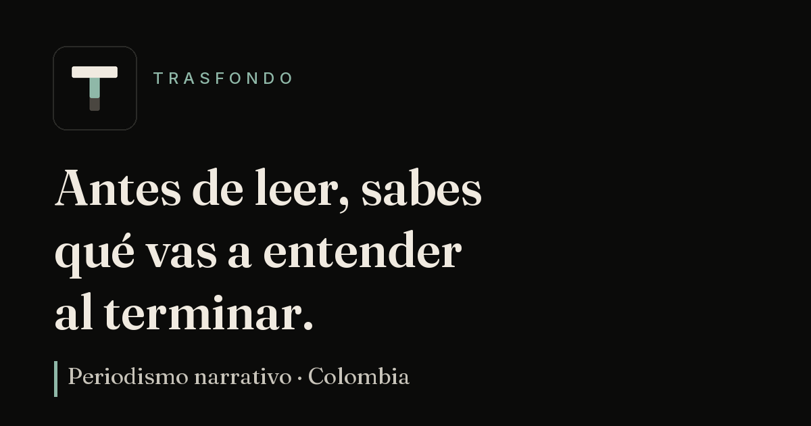

Ansiedad y depresión en videojuegos: ¿quién cuida a los gamers?
Infografía publicada el 4 de octubre de 2023, hecha para la unidad de redacción (2023-1) en Comunicación Social-Periodismo, Universidad Externado. Reúne artículos científicos y la perspectiva de tres fuentes directas del mundo gamer.
Tu elección
TRASFONDO
Piezas
Newsletter
Quién
Juegos
Apoya
Por comunidad
Mover el país
Cómo se mueven personas, carga y plata por un país de montañas y trámites.
Territorio y Estado
Lo público lejos de los centros: emergencias, vías y trámites en el territorio.
La economía por dentro
Cifras e incentivos que explican quién gana, quién paga y qué no se ve.
Vidas con trasfondo
Personas cuyas trayectorias explican un sistema mejor que cualquier cifra.

Mover el país · 15 min ·
Sin SOAT y sin que nadie mire: por qué Colombia no frena su tragedia vial en las motos
En ocho de cada 10 municipios de Colombia no hay nadie que controle las vías. Sin semáforos, sin cámaras, sin organismo de tránsito.
Magda Rincón, la piloto que hizo historia con el Gavilán
La primera piloto en volar un Gavilán para la Fuerza Aérea, y lo que le tocó esperar en tierra.
23 min · Oct 2026 · Perfil ·
02
Territorio y Estado
Terremoto en Chocó: un mes después, la emergencia no da tregua
Un mes después del terremoto, la ayuda disminuye, llegan las lluvias y se anuncian 3 billones.
13 min · Sep 2026 · Reportaje, crónica ·
03
Territorio y Estado
Un vuelo humanitario para un Chocó que sigue esperando la reconstrucción
Un vuelo con 3,5 toneladas de ayuda hacia Quibdó muestra qué frena la reconstrucción del Chocó.
9 min · Sep 2026 · Crónica ·
04
Territorio y Estado
El Chocó, otra vez solo con su propia solidaridad
Cinco días después del terremoto, el Chocó se sostiene con la solidaridad de sus propios habitantes.
16 min · Ago 2026 · Crónica ·
05
La economía por dentro
Del boom del aviturismo a la alerta por especies amenazadas
Colombia vende el canto de sus aves al mundo mientras intenta no perderlas.
10 min · Ago 2026 · Reportaje ·
06
Mover el país
La lotería de los cien millones: el decreto que quiere hacer propietarios a taxistas
Un decreto promete democratizar el taxi con sorteos y carros eléctricos, sin estudios técnicos.
13 min · Jul 2026 · Reportaje ·
07
La economía por dentro
¿Por qué la obsesión del mundo con el PIB nos está dejando a oscuras?
Colombia mide su progreso con una sola cifra y deja sin ver informalidad, hambre y aislamiento.
14 min · Jun 2026 · Análisis ·
08
Mover el país
Sin SOAT y sin que nadie mire: por qué Colombia no frena su tragedia vial en las motos
En ocho de cada 10 municipios no hay nadie que controle las vías. Ahí mueren más motociclistas.
15 min · May 2026 · Reportaje ·
09
Mover el país
Migración Colombia bajo presión: más viajeros, menos atención
Más viajeros, menos presupuesto y un aeropuerto sin espacio: el filtro migratorio de El Dorado.
11 min · Mar 2026 · Reportaje ·
10
Territorio y Estado
La trampa del barro: el eterno problema de las vías entre el olvido y la pobreza
Por cada $100.000 que produce el país, solo 40 pesos conectan al campo con vías regionales.
15 min · Sep 2025 · Reportaje ·
11
La economía por dentro
Biocombustibles en aviones: ¿está lista Colombia para la descarbonización?
El primer vuelo con combustible sostenible promete menos emisiones, pero ¿quién paga la cuenta?
12 min · Abr 2025 · Reportaje ·
12
Vidas con trasfondo
Ansiedad y depresión en videojuegos: ¿quién cuida a los gamers?
La salud mental de los gamers queda sin cuidado en una industria que invierte y gana más cada año.
4 min · Oct 2023 · Infografía
Próximamente
Videopódcast
Cómo funcionan los centros de datos en Colombia
En desarrollo
Audio tráiler
Videopódcast
Chatbots de IA y salud mental: familias, denunciantes y psiquiatría
En desarrollo
Audio tráiler
Una pieza al mes. Un marco para leer lo que nadie explica.
Sin publicidad. Sin algoritmo. Directo al correo cuando algo merece el tiempo.
Última edición: "El Chocó que sigue esperando" · Ver muestra →
“Floating Sugar High” Por Joseph Sacco Free Music Archive Licencia CC BY
TRASFONDO
Periodismo narrativo en español · Colombia · 2026
Sabes qué vas a entender antes de empezar.
Territorio y Estado
La trampa del barro: el eterno problema de las vías entre el olvido y la pobreza
Por Alejandro Rodríguez Torres15 min · Sep 2025 · Reportaje ·
Qué vas a entender al terminar
Un reportaje sobre por qué las carreteras rurales de Colombia, las que sacan la comida del campo, reciben una fracción de lo que necesitan y cómo ese abandono mantiene viva la pobreza.
Por qué las vías terciarias, el 69 % de la red, quedaron a cargo de los municipios con menos recursos, y qué le cuesta eso al campesino.
Por qué por cada $100.000 que produce la economía solo 40 pesos se invierten en conectar al campo, y qué pasó con el programa estrella de caminos comunitarios.
Qué salidas proponen los expertos y cuál es la condición que lleva décadas sin cumplirse.
In English
A report on why Colombia’s rural roads, the ones that carry food out of the countryside, receive a fraction of what they need, and how that neglect keeps rural poverty alive.
Why tertiary roads, 69 % of the national network, fall to the municipalities with the fewest resources, and what that costs farmers.
Why only 40 pesos of every 100,000 pesos the economy produces go to connecting the countryside, and what happened to the flagship community roads program.
What solutions experts propose and which condition has gone unmet for decades.
Short summary. The full text is in Spanish.
Escuchar también es una forma de leer
Preparé un audio breve con algunos momentos clave de la historia para quienes prefieren aproximarse desde la voz.
Audio en preparación.
En las montañas de Colombia, el sol quema el barro antes de que la cosecha llegue al mercado. Allí, la carretera es una arteria invisible que separa la abundancia del hambre.
Por cada $100.000 que produce la economía, apenas 40 pesos del presupuesto nacional se invierten en conectar a quienes alimentan al país.
Putumayo conoce bien esa ecuación. El departamento tiene 1.050 kilómetros de vías terciarias y apenas $3.700 millones para mantenerlas. En el sentido estricto, solo debe hacerse cargo del 10 %, es decir, puede destinar cerca de $35,2 millones por kilómetro o unos $35.200 por metro vial: el precio de un almuerzo corriente con postre en cualquier ciudad.
“La mayor fuente de financiamiento para estas vías proviene de los recursos de regalías”, dijo a este diario el gobernador Jhon Gabriel Molina. “Sin embargo, a pesar de estos esfuerzos, la inversión departamental sigue siendo limitada frente a la magnitud del desafío”.
El contraste es aún mayor cuando se mira la magnitud del problema. El Plan Maestro de Transporte Intermodal estima que intervenir un kilómetro de vía terciaria cuesta alrededor de $750 millones. Putumayo está casi $715 millones por debajo de lo que necesitaría para cada kilómetro que intenta sostener.
Este departamento no es una excepción. Es el reflejo de una fractura que atraviesa buena parte de Colombia.
El país está surcado por venas de tierra y asfalto que sostienen el latir de 52 millones de personas, pero la sangre no fluye igual para todos. Mientras las grandes obras de infraestructura pulen unos pocos corredores estratégicos, millones de colombianos se abren paso a punta de voluntad por caminos de polvo y barro, por rutas que el progreso olvidó en el papel.
En cuestión de prioridades están las vías primarias y secundarias, bien pulidas, que conectan las capitales, las ciudades y las zonas de producción y consumo, a cargo de la Nación y los departamentos. En último lugar están las vías terciarias, heridas abiertas de tierra entre las veredas y los municipios; son las grandes ausentes de los planes de inversión, aunque de ellas depende que el desarrollo y la comida lleguen a miles de territorios. Su mantenimiento recae, en su mayoría, sobre los municipios.
El abandono de las vías terciarias es uno de los mecanismos que mantiene viva la pobreza rural.
Cada vez que usted compra una papa o una libra de arroz, probablemente piensa en quién la sembró. Tal vez imagina unas manos curtidas por el trabajo o un sombrero bajo el sol.
Según el DANE, cerca de 11,3 millones de colombianos reconocen su identidad en la ruralidad, una población mayor a la de Bogotá. Más de ocho de cada 10 viven en zonas rurales dispersas y cerca de cuatro de cada 10 dependen de la agricultura.
De ese universo, apenas dos de cada 10 tienen un empleo formal. De manera que quienes ponen la comida en la mesa de millones de hogares son, al mismo tiempo, algunos de los trabajadores más desprotegidos del país.
Son ellos quienes enfrentan los camiones atrapados en el barro, los derrumbes y los trayectos interminables para garantizar que los alimentos sigan circulando por el país. Son ellos quienes, a lomo de mula, alimentan a 52 millones de personas, pero cargan con los costos de una logística rota y, peor aún, diseñada en su contra.
En esa circulación desigual de oportunidades hay un factor clave: las vías.
El mapa olvidado
Una buena parte de ese drama tiene que ver con el estado real de las carreteras y quién debe responder por ellas. Según el Departamento Nacional de Planeación (DNP), Colombia tiene 205.745 kilómetros de carreteras.
La distribución revela la lógica territorial del país: 9 % son vías primarias, 22 % secundarias y 69 % terciarias. Pero de ese último grupo, apenas uno de cada diez kilómetros está pavimentado. Siete sobreviven con grava. El resto es tierra que se rinde ante la primera lluvia.
Son estas vías las que sostienen la vida cotidiana de la Colombia profunda en Boyacá, Cundinamarca, Antioquia, Tolima y Huila, los departamentos con mayor cantidad de red terciaria.
También son las que administra, en su mayoría, quien menos capacidad financiera tiene para hacerlo: siete de cada 10 dependen de municipios sin recursos suficientes, uno de cada 10 de departamentos con limitaciones presupuestales y solo dos de cada 10 están bajo responsabilidad directa del Gobierno nacional a través del Invías.
La trampa de la pobreza
Las falencias estructurales en las vías terciarias pasan una factura impagable a todo el aparato productivo, ensañándose con los eslabones más débiles.
“La falta de vías regionales actúa como un impuesto oculto que penaliza a las pymes, perpetuando desigualdades territoriales”, explica Gordon Wilmsmeier, doctor en geografía y profesor de la Universidad de Los Andes.
Ese impuesto aparece en cada tramo de la cadena productiva. El costo logístico en Colombia equivale al 18 % del valor de los productos, más del doble del promedio de la OCDE, que ronda el 8 %. En las trochas destapadas, el costo por tonelada-kilómetro se dispara entre 30 % y 50 % por el desgaste de los vehículos y el consumo desproporcionado de combustible. Una de cada tres partes de la producción agrícola se pierde por daños durante el transporte.
El viaje es una ruleta rusa para los alimentos y los animales. Según el experto, debido a la falta de vías adecuadas y de cadenas de frío, el ganado viaja durante horas bajo condiciones de alto estrés hacia los centros de sacrificio. La carne resultante pierde calidad y, estructuralmente, la región productora jamás captura el valor agregado: se ve obligada a vender el animal vivo y no la carne procesada. Una pérdida total de oportunidad.
“En regiones como Chocó, Catatumbo o La Guajira, donde las vías son escasas o se encuentran en condiciones precarias, los costos logísticos pueden representar hasta 40 % del valor final de los productos”, señaló Rodolfo Correa, presidente ejecutivo de Acopi. “La falta de prioridad en vías secundarias y terciarias aleja a los pequeños productores de los mercados regionales, puertos y centros de abastecimiento”.
Nidia Díaz lleva 40 años en la vereda Susa, en Fómeque, Cundinamarca, donde cultiva tomate y habichuela. Para sacar la carga necesita vehículo propio, pero advierte que sin doble tracción “no hay para qué insistirle cuando llueve bastante, porque ahí se queda”. Endeudarse para comprarlo es la norma: “Casi la mayoría tiene su carrito porque no hay más posibilidades, así sea uno un poco endeudado”.
Cuando no contaba con vehículo, el precio lo fijaba el comprador. “Muchas veces le tocaba a uno a lo que dijera el comprador, así uno se diera cuenta de que estaba a mejor precio. Pero si decían no, ¿qué va a hacer uno?”.
Según Acopi, la precariedad vial multiplica los costos de transporte, encarece las primas de seguros entre un 20 % y un 25 % por los altos riesgos de accidentalidad y hurto, y marchita el valor de los productos perecederos.
El resultado es una espiral tóxica de sobrecostos que alimenta la intermediación abusiva y profundiza la precariedad laboral.
Al final, este aislamiento hunde la viabilidad de las empresas sostenibles rurales y perpetúa salarios de miseria y una profunda informalidad que afecta con mayor severidad a las mujeres, los pueblos indígenas y las comunidades afrodescendientes, palenqueras y raizales.
“Sin una red real, las cadenas de suministro seguirán favoreciendo a los grandes capitales, mientras las economías locales quedan rezagadas”, advierte Wilmsmeier.
Mientras la pobreza monetaria nacional cerró 2024 en 31,8 %, en las zonas rurales se mantuvo en 42,5 %, según el DANE.
Aunque es el nivel más bajo para el campo en una década, refleja una fractura persistente: nacer y vivir lejos de las ciudades en Colombia significa ganar menos, pagar más por transportarse y quedar expuesto a perderlo todo cuando falla una carretera. Las vías trascienden lo económico. Son una deuda estricta de justicia social.
“La falta de acceso directo a corredores obliga además a vender a precios más bajos a intermediarios, reduciendo márgenes de ganancia”, insiste Wilmsmeier.
El campesino siempre pierde.
La tormenta perfecta
El primer muro es que la administración de estos corredores es un rompecabezas institucional. La red terciaria está fragmentada entre municipios pobres, departamentos con baja capacidad técnica y un Gobierno nacional incapaz de sostener una estrategia continua.
El segundo muro, y acaso el más asfixiante, es el financiero.
De los $3,9 billones del 2025, a agosto solo se había ejecutado el 29,8 %, según el Ministerio de Hacienda. Ocho meses transcurridos y siete de cada diez pesos aún congelados. Las comunidades esperan mientras el reloj corre y las lluvias no dan tregua.
La asignación de 2025 apenas supera en $200.000 millones la de 2019, como si el país no hubiera sufrido la inflación ni se hubieran encarecido los costos de los insumos de obra.
La tendencia va en reversa. Tras alcanzar una cartera histórica de $5,5 billones en 2022, la inversión total cayó $1,6 billones en apenas tres años.
El golpe más fuerte recayó sobre las vías regionales: pasaron de recibir $1,4 billones a escasos $683.000 millones en un año, una caída del 51 %.
Por cada $10 que se invertían en 2024, hoy quedan 5 pesos.
En medio de este colapso, la confianza institucional se tambalea en la cuerda floja: ocho directores han pasado por el Invías durante los tres años del Gobierno Petro. Una silla que gira más rápido que las volquetas. La rotación permanente ocurre mientras se acumulan retrasos, pagos represados y cuestionamientos severos a los programas insignia.
El mismo año en que el presidente criticaba la falta de prioridad en las vías regionales, la Cámara Colombiana de Infraestructura lanzó el dardo: el Gobierno adeudaba cerca de $1 billón a contratistas de obras públicas. La deuda solo terminó de destrabarse tras presión de la Procuraduría.
La desproporción presupuestal termina revelando algo más profundo que un problema técnico. En 2024, el PIB alcanzó los $1.706 billones. De toda esa torta, apenas el 0,04 % terminó destinado a vías regionales.
Por cada $100.000 que produce el país, solo 40 pesos se invierten en conectar a sus campesinos.
Menos de lo que cuesta un caramelo.
El Consejo Privado de Competitividad ha advertido que no basta con intervenir corredores aislados, sino que se necesita una estrategia de largo plazo que conecte las vías terciarias con las redes primarias y secundarias.
En noviembre pasado, el presidente Gustavo Petro volvió a cuestionar los criterios de priorización para la construcción e intervención de corredores viales, que suelen dejar a un lado las carreteras en lugares apartados como el Pacífico, tras los atrasos de décadas de la vía Quibdó-Medellín.
El reclamo del mandatario no es un asunto enteramente nuevo ni ajeno a su propio discurso. Los problemas con las vías terciarias son un tema histórico y ampliamente diagnosticado. Y, aun así, siguen siendo un nudo gordiano que no termina de resolverse de forma estructural. La pregunta sigue intacta: ¿quién escucha cuando el abandono ocurre lejos de Bogotá?
Después de poner el pan en la mesa de millones de colombianos y de sobrevivir en las montañas más grandes de América, dos siglos después de la independencia, la política del desarrollo aún no llega a los campesinos.
Pausa · Una decisión antes de seguir
Si tuvieras que repartir una bolsa limitada para las vías rurales, ¿qué priorizarías primero?
Elige una opción. Después compara con lo que dice el reportaje.
La quimera comunitaria: el asfalto empantanado
Fue a esa deuda histórica a la que intentó responder el gobierno de Gustavo Petro con el programa estrella de su política de infraestructura social: Caminos Comunitarios de la Paz Total, lanzado a finales de 2022.
La iniciativa prometía intervenir más de 33.000 kilómetros de carreteras rurales con una inversión estimada de $8 billones para el cuatrienio. El modelo sustituía a los contratistas tradicionales por un esquema participativo basado en convenios solidarios con las Juntas de Acción Comunal y comunidades étnicas.
Tres años después, el programa se ha convertido en el símbolo de la frustración rural.
A nivel macro, las metas del Plan Nacional de Desarrollo muestran parálisis severa: para cumplir el cronograma original era necesario intervenir 700 kilómetros por mes; este año el promedio ronda los 120.
Hasta agosto del año anterior, la plataforma Sinergia del DNP reportaba solo 8.143 kilómetros ejecutados en toda la bolsa de vías regionales: el 25 % de la meta global.
Cuando se baja la lupa al programa insignia de las JAC, el desplome es aún más dramático: apenas $670.000 millones ejecutados, el 8,3 % de los $8 billones prometidos. La ejecución real ha sido de 2.457 kilómetros de pavimento, el equivalente a trazar casi una carretera entre Leticia y Barranquilla, cuando se proyectaban unas 18 en las veredas del país.
Un balance reciente de la CCI sobre departamentos como Caquetá, Nariño y Norte de Santander muestra avances ínfimos que oscilan entre el 0 % y el 5 %. “Frustración. Ese es el calificativo que mejor refleja lo que ha dejado a su paso el programa”, apunta Juan Martín Caicedo, presidente ejecutivo del gremio.
El colapso llegó por vía doble: la burocracia y la chequera. La Procuraduría puso bajo observación la mayoría de los más de 1.000 convenios firmados por presuntas irregularidades que comprometen $233.853 millones. Enlistó violaciones a los principios de publicidad, transparencia y planeación, desembolsos irregulares y ausencia de estudios técnicos. La Contraloría sumó datos: de 2.157 contratos firmados hasta 2024, solo 728 habían culminado y 1.124 permanecían congelados.
Gremios e instituciones señalaron que priorizar la contratación directa con comunidades “sin importar su cuantía” —facultad otorgada por el Decreto 1961 de 2023 que creó el Instituto Nacional de Vías Regionales (Invir)— abría la puerta a la contratación “a dedo” y marginaba a las pymes de ingeniería idóneas para labores especializadas.
El golpe de gracia llegó en 2025: el avance del programa con recursos de este año es del 0 %. No hay partida presupuestal específica para las comunidades tras los recortes del Ministerio de Hacienda, una limitación confirmada por el propio Invías.
La entidad de vías insiste en “avances significativos” y cita a Cundinamarca con 82 % de avance institucional. La matemática territorial desmiente el optimismo: de los 13.000 kilómetros de vías terciarias del departamento, solo 8 fueron mejorados en 2024 bajo esta iniciativa.
Infraestructura para la paz o detonante del conflicto
La paralización de Caminos Comunitarios no es solo un problema de obras inconclusas. Es un catalizador de problemas estructurales que ahondan la desconfianza y frenan el desarrollo. Como señaló Dimitri Zaninovich, expresidente de la Agencia Nacional de Infraestructura, “la deficiente infraestructura de transporte no es un problema que se origina durante el conflicto armado, sino que incluso llega a ser una razón por la cual se origina el conflicto”.
El programa fue concebido precisamente bajo esa premisa: ser un instrumento de construcción de paz que, al reforzar la presencia del Estado en territorios históricamente abandonados, redujera la violencia e impulsara la productividad legal. Las irregularidades y la descoordinación han terminado por profundizar el escepticismo veredal.
Para ensombrecer más el panorama, el Decreto 0572 de 2025 del Ministerio de Hacienda aumentó la tarifa de autorretención para carreteras y vías férreas al 3,5 % y gravó con 1,10 % las actividades de ingeniería y arquitectura. Los convenios con JAC deben contratar servicios más caros con menos flujo de caja, en un contexto donde la mano de obra escasea en las zonas rurales y el PIB de la infraestructura apenas crece un lánguido 2,1 %.
¿Existe una salida? Tres claves y un cambio de rumbo
Para Mauricio Hernández, economista de BBVA Research, las vías terciarias son la palanca más rezagada pero efectiva de inclusión territorial: hilan zonas rurales con comercio, salud y educación, y pueden encender algo más esquivo que cualquier kilómetro pavimentado, confianza en un Estado que por décadas los ha ignorado.
El menú de opciones es concreto:
Alianzas por resultados: donde gobiernos local y nacional se unen con incentivos ligados a metas cumplidas.
Obras por impuestos: un mecanismo ideal para atraer capital privado a las zonas PDET, las más afectadas por la violencia y el abandono.
Poder comunal: empoderar a las juntas de acción comunal para que decidan qué tramos son vitales y se comprometan con su mantenimiento.
La Cámara Colombiana de Infraestructura y Fedesarrollo proponen un modelo tripartito: gobiernos locales administran las vías principales; comunidades y asociaciones campesinas deciden qué caminos atender; el sector privado ejecuta y da soporte técnico. La condición para que funcione es la misma que lleva décadas sin cumplirse: propiedad clara de la tierra, financiación estable y capacidad institucional sostenida.
El centralismo ha demostrado enormes limitaciones para gestionar la complejidad territorial del país. “Los municipios demandan un apoyo significativo para la atención de sus vías terrestres, cuya necesidad de intervención supera el 60 % de la red vial departamental”, sostiene el gobernador Molina.
El mismo Plan Maestro prevé una inversión de $39,2 billones entre 2023 y 2035. Casi $3,2 billones por año, con proyectos de alta prioridad en Nariño, Chocó, Antioquia y Norte de Santander. En Putumayo, hoy, esos billones suenan a eco de un futuro que nunca llega, con apenas cinco de 13 municipios priorizados.
Una de las fuentes de financiación son los 30 peajes que administra el Invías, aunque no está obligado a reinvertir esos recursos en las mismas carreteras donde se recaudan. De los 13.000 kilómetros a su cargo, cerca de 9.000 no tienen peajes pero deben mantenerse. En la práctica, algunos corredores y sus usuarios terminan subsidiando el rezago de las vías con mayores dificultades financieras.
Este escenario se puede ver, de cierta forma, en la coyuntura actual de la vía al Llano, que cada cierto tiempo gana titulares por cierres cortesía del clima. Los derrumbes y problemas en el corredor no solo ponen presión sobre el abastecimiento de Bogotá, sino sobre los productores de los Llanos, que son casi totalmente dependientes de los mercados del centro del país para sacar sus productos.
Si hubiera núcleos de producción y consumo más atomizados y locales, esta dependencia debería ser menor, minimizando también los impactos que estos accidentes y eventualidades generan sobre todo tipo de productos y cadenas logísticas que afectan no solo la economía, sino, principalmente, la vida.
Hasta que ese cambio de rumbo se concrete, Colombia seguirá midiendo sus distancias no en kilómetros, sino en horas de polvo, sudor y baches. Un mapa de plena desconexión en que los hombres y las mujeres rurales siguen perdiendo la fe en esos anteproyectos de carreteras que solo existen en los escritorios de Bogotá.
Es una trampa de barro que afecta el tejido social y el bienestar: sin vías, no hay mercados; sin mercados, no hay empleo digno; sin empleo digno, no hay salida.
Nidia, de Susa, cree que los alcaldes conocen las dificultades. “Son del territorio”, dice, pero algo falla entre ese conocimiento y la acción. “No sé si será mal administrado o si ellos de verdad se hacen los de la vista gorda”.
Esto es Trasfondo. Si este texto te dejó algo, el newsletter mensual tiene más.
Sin SOAT y sin que nadie mire: por qué Colombia no frena su tragedia vial en las motos
15 min · Alejandro Rodríguez Torres
¿Te dejó algo? Compártelo con alguien a quien le sirva.
Una pieza al mes.
Sin publicidad. Sin algoritmo.
TRASFONDO
Periodismo narrativo en español · Colombia · 2026
Sabes qué vas a entender antes de empezar.
Mover el país
Migración Colombia bajo presión: más viajeros, menos atención
Por Alejandro Rodríguez Torres11 min · Mar 2026 · Reportaje ·
Qué vas a entender al terminar
Un reportaje sobre el control migratorio en El Dorado: más viajeros cada año, una entidad con recortes y un límite físico que ya no da más.
Por qué las filas dependen de cuándo llegan los vuelos y no solo de cuántos viajeros llegan, y dónde está el límite físico de El Dorado.
Por qué crecen los viajeros mientras bajan el presupuesto y los funcionarios de Migración Colombia.
Qué pasa con los vuelos, las aerolíneas y los funcionarios cuando el filtro migratorio se ralentiza.
In English
A report on border control at Bogotá’s El Dorado airport: more travellers every year, an agency under budget cuts and a physical limit that can no longer stretch.
Why queues depend on when flights arrive and not only on how many travellers arrive, and where El Dorado’s physical limit lies.
Why traveller numbers rise while Migración Colombia’s budget and staff shrink.
What happens to flights, airlines and officials when the immigration filter slows down.
Short summary. The full text is in Spanish.
Escuchar también es una forma de leer
Preparé un audio breve con algunos momentos clave de la historia para quienes prefieren aproximarse desde la voz.
Audio en preparación.
“Sí, es una realidad innegable”.
Así respondió Migración Colombia a El Espectador cuando se le preguntó si existe un riesgo de congestión estructural en El Dorado incluso después de la ampliación en la zona de procesamiento de viajeros que llegan desde el exterior a la principal terminal aérea del país.
La entidad reconoce que las congestiones drásticas son el resultado del “fenómeno de los itinerarios”: la llegada simultánea de vuelos de gran capacidad en franjas específicas.
En ciertos momentos del día, una parte sustancial de los 15.000 viajeros que ingresan en una jornada normal desemboca simultáneamente en los filtros migratorios. El sistema, entonces, enfrenta su prueba de estrés.
Ese punto es clave, porque para Gloria Arriero, directora general de Migración, el debate no puede medirse en minutos.
ras la ampliación, se sumarán ocho más. Cada pasillo puede atender en promedio 1.440 viajeros cada 24 horas (cerca de 500.000 al año). A ello se agregan 22 filtros convencionales atendidos por oficiales.
Migración insiste en que la tecnología no sustituye el componente humano, especialmente en casos sensibles. “La supuesta ‘agilidad’ jamás podrá estar por encima de una entrevista rigurosa”, señala, lo que permite evitar riesgos de trata o vulneración de derechos. Pero incluso con personal desplegado y tecnología activa, el límite físico emerge como variable determinante en las oleadas de turistas.
“Las áreas de El Dorado tienen un límite de expansión”, reconoce la entidad. Los espacios no pueden crecer al mismo ritmo que la llegada simultánea de aeronaves. Con cada turno y cada control, la entidad exprime hasta el último recurso humano y tecnológico, y el aeropuerto se estira hasta su frontera física como un cuerpo obligado a inhalar más aire del que sus pulmones pueden contener.
Esa limitación es precisamente la que intenta corregir la obra en curso.
La ampliación del área de inmigración registra un avance de 76 % y contempla una inversión de $18.608 millones. El proyecto incrementará en 33 % la superficie del área de control, que pasará de 1.624 a 2.162 metros cuadrados.
La intervención incluye 33 mostradores tradicionales y 29 módulos biométricos, para un total de 62 puntos de atención, además de la reconfiguración de filas y la integración de pantallas informativas. También se habilitará una oficina de 187 metros cuadrados para el Centro Estratégico Conjunto de Análisis Migratorio (Cecam), equipada con sistemas de videovigilancia y monitoreo en tiempo real.
Sin embargo, incluso con más metros y más módulos y tecnología, la pregunta de fondo persiste: ¿cómo puede la infraestructura absorber el ritmo de la demanda?
El control migratorio, esgrime Arriero, “es un ecosistema complejo e interconectado; no es responsabilidad de una sola entidad”. La infraestructura pertenece al concesionario Opain, bajo supervisión de la Agencia Nacional de Infraestructura; la asignación de slots corresponde a la Aeronáutica Civil y las aerolíneas, y el presupuesto depende del Ministerio de Hacienda.
Menos dinero, más flujos migratorios
El minimalismo de Migración Colombia no responde a una apuesta propia, sino a una restricción fiscal. Entre 2019 y 2026, el presupuesto pasó de $147.000 millones a $267.000 millones, un crecimiento nominal de 81 %. Pero este año, justamente, la entidad recibió $36.000 millones menos que en 2025, una reducción de 11,9 %.
La diferencia se entiende mejor al compararla con el tamaño del presupuesto nacional. Sin contar el servicio de la deuda, el Presupuesto General de la Nación saltó de $207 billones en 2019 a $446 billones en 2026, un incremento del 115 %.
Migración creció, pero a un ritmo menor y ahora enfrenta un recorte precisamente cuando el flujo que debe controlar sigue aumentando.
Los números de viajeros cuentan la otra mitad de la historia.
En 2019, la entidad registró 16,6 millones de movimientos en 2019. En 2025, fueron 21,7 millones. Son poco más de cinco millones adicionales en seis años, el equivalente a mover dos veces la población completa del departamento de Atlántico en un año. Cada uno implica un control, una decisión y, cuando corresponde, una revisión que debe hacer un funcionario.
La presión se concentra especialmente en los aeropuertos. Hay jornadas en las que más de 83.000 personas cruzan los controles migratorios. En El Dorado, los movimientos aumentaron de 4,5 millones en 2022 a más de 6,2 millones en 2025: 38 % más en apenas tres años.
En este punto, el iceberg del problema encuentra una de sus aristas. Bogotá atendió el año pasado con 350 funcionarios. Hoy son 295, según confirmó el sindicato Osemco a este diario. Yeison Mesa, su presidente, sostiene que la cifra debería duplicarse para lograr que el aeropuerto “funcione bien”. En determinados momentos, afirma, los filtros operan con apenas seis o siete funcionarios.
De manera que la tensión es aritmética: más turismo y más carga, menos presupuesto y menos funcionarios, una ecuación que estalla en la operación como bomba de estrés contrarreloj. Entre sellos, filas y pantallas biométricas, se libra la tensión de la velocidad del mundo y la capacidad de un sistema.
La ampliación del área de inmigración busca darle más espacio al sistema. Pero los metros cuadrados no trabajan solos. Necesitan oficiales detrás de los filtros, y son ellos quienes absorben el crecimiento sin tregua, cada día.
¿Qué tan amable puede ser el rostro de un país exhausto?
Juliana* lleva 14 años en la entidad. Entró cuando Migración apenas comenzaba a caminar sola, después de asumir las funciones de control migratorio que hasta 2011 habían estado en manos del Departamento Administrativo de Seguridad (DAS). “No es que uno no quiera trabajar”, dice. “Uno ama servir”.
Lo dice con una sonrisa de beatitud que se rompe apenas habla de las jornadas laborales. Trabaja turnos de doce horas. A veces entra a las seis de la mañana y sale a las seis de la tarde. Otras veces cruza la medianoche. Dos días de trabajo. Dos de descanso.
El aeropuerto, mientras tanto, no descansa nunca.
Hay jornadas en que debe asumir funciones que corresponderían a tres personas, en medio de una fila que avanza, retrocede y vuelve a crecer. Eventos internacionales, turismo, conexiones con Bogotá. El país entra y sale en oleadas. Ella permanece.
A veces no hay vasos ni para un tinto, admite. En otras, es el papel higiénico en el baño. Y si no ninguno, es el salario, que poco ha crecido en los catorce años en la entidad.
“Lo bonito sería recibir al turista con sonrisa”, explica Juliana. “Pero cuando vienes de un turno de 12 horas, sin descanso y sin poder ver nunca la sala desocupada, es difícil ser la cara amable del país”.
Las quejas de los funcionarios están en la cara de los viajeros. Afiches. Pancartas. Poco personal. Los funcionarios llegan a una operación exigente y algunos terminan abandonando el cargo, sostiene el sindicato. “Cuando las personas llegan y miran que el trabajo es fuerte, que es mala paga, muchas de las veces se arrepienten en un mes. Eso ha causado gravísimo daño porque nombrar a una persona es un proceso complejo”, detalló Mesa, de Osemco.
El sindicato sostiene además que la historia de la entidad todavía pesa. “El estigma de haber sido funcionarios del DAS parece que causa mella en algunos sectores”, dijo Mesa.
La planta, cuando esté completa, llegará a 2.200 funcionarios. Para Osemco, sigue siendo insuficiente. “Para todo lo que hay que hacer se necesitan como 8.000”, afirmó.
Bogotá, en riesgo de “colapso”
La Osemco ha advertido sobre un “riesgo de colapso institucional y financiero” y anunció la posibilidad de una huelga general. El sindicato sostiene que el Gobierno incumplió el acuerdo firmado en diciembre de 2024, que contemplaba un estudio de rediseño institucional y una reingeniería salarial que debía implementarse en enero de 2026.
“Hoy nuestra entidad se encuentra en grave peligro”, señaló la organización en un comunicado.
Las directivas de Migración y la Cancillería atribuyen los retrasos a restricciones presupuestales derivadas de la no aprobación de la Ley de Financiamiento y de la suspensión del decreto de emergencia económica.
Destacan, además, el pago de la Bonificación Migratoria desde diciembre de 2025 y la ampliación de planta con 667 nuevos empleos entre 2023 y 2024, que permitió alcanzar los 1.664. Sin embargo, 540 contrataciones adicionales permanecen pendientes por falta de asignación presupuestal.
Mesa insistió en que la entidad requiere un estudio serio que certifique su estado actual y determine qué cambios estructurales deben adoptarse. “Ese compromiso quedó firmado y se nos incumplió. Después de un año y dos meses no han hecho nada”, afirmó.
Pausa · Una decisión antes de seguir
Si fueras responsable de que El Dorado no se congestione, ¿qué harías primero?
Elige una opción. Después compara con lo que dice el reportaje.
El frente salarial, otro punto de fricción
Si el cúmulo de turistas aumenta y, entre tanto, la expansión del aeropuerto está en curso, ¿los salarios de los oficiales de Migración crecen al mismo ritmo?
No necesariamente.
“El salario de los funcionarios de Migración no es bajito. Es miserable”, sostuvo el líder sindical. Según explicó, cargos equivalentes en otras entidades del Estado pueden devengar hasta el triple o incluso el quíntuple. “Lo que estamos planteando es una nivelación salarial medianamente digna”.
Hoy un auxiliar bachiller de la Policía recibe $2.614.000 mensuales. Un oficial grado 11 de Migración Colombia percibe $2.617.000. En la Contraloría, mientras tanto, un funcionario técnico puede rondar los $6.400.000.
La discusión salarial tiene una particularidad: los oficiales de Migración no cumplen únicamente una función administrativa. Son expertos en perfilamiento y parte de la planta heredó la experiencia del antiguo DAS, liquidado en 2011, cuando las funciones de control migratorio pasaron a la nueva entidad.
La labor migratoria está íntimamente relacionada con la seguridad nacional: tráfico de personas y migrantes, narcotráfico y transporte ilegal de fauna y flora. “Colombia es un país dulce para eso. Esa clase de actividades solo se puede detectar a través del personal de Migración. No se soluciona a punta de máquinas”, afirmó Mesa.
La tecnología, de hecho, tiene un costo alto. Cada máquina cuesta alrededor de $400 millones, pese al bajo uso que tienen entre los viajeros colombianos. Y mientras se invierte en automatización, el sindicato advierte que también se están recortando servicios básicos para la operación.
“Están recortando servicios de aseo y de vigilancia”, dijo Mesa, quien atribuyó estos recortes a las restricciones presupuestales adoptadas durante la actual administración del Ministerio de Hacienda.
Las filas no siempre hablan de desorden. A veces hablan de turnos demasiado largos y de presupuestos demasiado cortos. Decisiones tomadas lejos de la ventanilla.
La alerta tampoco quedó confinada al ámbito laboral. La Asociación de Transporte Aéreo Internacional (IATA) pidió garantizar la continuidad de los servicios migratorios para evitar afectaciones en la operación aérea.
“La prestación de los servicios migratorios es fundamental para el normal desarrollo de las operaciones”, advirtió el gremio, que expresó preocupación por el impacto en la puntualidad de los vuelos y en la eficiencia aeroportuaria.
Avianca recordó que una situación similar en diciembre de 2024 provocó más de 65 retrasos y cancelaciones, afectando a más de 2.200 pasajeros.
Cuando el filtro migratorio se ralentiza, la cadena completa se desajusta.
Impacto económico
El fenómeno es parte de una transformación más amplia. Como ha señalado El Espectador, en 2005 el país movilizaba cerca de 12 millones de pasajeros al año. En 2025 fueron 57,5 millones. En dos décadas, el tráfico aéreo se quintuplicó. Solo en los últimos cuatro años, más de 211 millones de personas pasaron por terminales colombianas.
El auge del turismo explica parte del dinamismo. Entre agosto de 2022 y noviembre de 2025, más de 21 millones de visitantes no residentes llegaron a Colombia, un aumento del 138 % frente al periodo anterior. En 2025, el sector generó más de USD 11.000 millones en divisas, según el gremio Anato.
Bogotá concentra una parte importante de ese crecimiento. El Observatorio de Turismo reportó que entre enero y febrero de 2026, la capital recibió 321.810 visitantes extranjeros, un aumento de 3,1 % frente al mismo periodo del año anterior. Las reservas aéreas internacionales hacia la ciudad crecieron además 16,6 % para el periodo febrero-abril de 2026.
El flujo, por ahora, no da señales de detenerse.
Detrás de ese movimiento hay 115.272 empleos turísticos en Bogotá, equivalentes al 2,7 % del empleo total de la ciudad, con un crecimiento del 6,9 % interanual.
Cada nuevo visitante atraviesa el mismo punto de control. El aeropuerto es la puerta de entrada y Migración Colombia administra ese umbral.
Cuando el flujo crece y el presupuesto se estrecha, la presión termina repartida entre la actividad económica que depende de ese movimiento y los funcionarios que deben procesarlo, especialmente en aquellos que le ponen la cara al turista malhumorado por el eterno camino de la serpiente.
Saturación operativa
El problema tampoco termina en los filtros migratorios. En 2025, El Dorado movilizó 45,4 millones de pasajeros y 810.000 toneladas de carga, a pesar de que opera con 74 movimientos por hora, cuando su diseño original fue concebido para 68.
La ampliación del antiguo Puente Aéreo, que añadió 47.000 metros cuadrados y siete nuevas posiciones de parqueo en 2025, alivió superficie, pero no resolvió el cuello de botella en aire ni en los filtros migratorios.
Cada despegue y cada aterrizaje ocupa una franja exacta, milimétrica, también conocida como “slot”. Es un recurso limitado que se ha convertido en otro punto de tensión entre Gobierno, aerolíneas, gremios y organismos internacionales.
Avianca concentra cerca del 51 % de los slots totales en El Dorado y alrededor del 50 % en las franjas de mayor demanda, entre las 5:00 y 8:00 a. m. y las 5:00 y 8:00 p. m. La Aerocivil ha explicado que esa concentración responde a factores históricos y operativos, no a irregularidades, pero reconoce que el esquema dificulta el crecimiento de nuevos operadores.
El Ministerio de Transporte confirmó que se analizan ajustes para “equilibrar” la asignación en horarios de alta demanda, en medio de un debate que también ha tocado el precio de los tiquetes y el acceso de nuevas aerolíneas al aeropuerto.
La respuesta no se limita a repartir mejor las franjas. También hay obras previstas para ampliar la capacidad del aeropuerto. El plan El Dorado Edmax, previsto entre 2028 y 2035, busca elevarla a 73 millones de pasajeros anuales.
Al final de todo, la pregunta queda en el aire: ¿cómo sostener el crecimiento de un aeropuerto y de su tráfico internacional cuando una de las instituciones encargadas de procesarlo ya opera bajo tensiones internas?
* El nombre de la fuente se cambió por motivos de seguridad laboral.
Esto es Trasfondo. Si este texto te dejó algo, el newsletter mensual tiene más.
Biocombustibles en aviones: ¿está lista Colombia para la descarbonización?
12 min · Alejandro Rodríguez Torres
¿Te dejó algo? Compártelo con alguien a quien le sirva.
Una pieza al mes.
Sin publicidad. Sin algoritmo.
TRASFONDO
Periodismo narrativo en español · Colombia · 2026
Sabes qué vas a entender antes de empezar.
La economía por dentro
¿Por qué la obsesión del mundo con el PIB nos está dejando a oscuras?
Por Alejandro Rodríguez Torres14 min · Jun 2026 · Análisis ·
Qué vas a entender al terminar
Un reportaje sobre por qué Colombia mide su progreso con una sola regla, el PIB, y qué deja sin ver: la informalidad, el hambre y el aislamiento rural.
Por qué el PIB, diseñado en los años treinta, no responde si un país está viviendo mejor, y qué propone la ONU con sus 31 indicadores.
Por qué un país puede crecer mientras el hambre y la informalidad persisten, y qué esconde la cifra de desempleo.
Qué diferencia hay entre medir para reportar y medir para decidir, y qué pasó cuando Colombia sí usó un indicador de bienestar.
In English
A report on why Colombia measures its progress with a single yardstick, GDP, and what it leaves unseen: informality, hunger and rural isolation.
Why GDP, designed in the 1930s, cannot say whether a country is living better, and what the UN proposes with its 31 indicators.
Why a country can grow while hunger and informality persist, and what the unemployment figure hides.
What the difference is between measuring to report and measuring to decide, and what happened when Colombia did use a well-being indicator.
Short summary. The full text is in Spanish.
Escuchar también es una forma de leer
Preparé un audio breve con algunos momentos clave de la historia para quienes prefieren aproximarse desde la voz.
Audio en preparación.
En los buses de las cinco de la mañana no viaja el PIB. Viajan los 13 millones de colombianos que trabajan sin contrato, sin pensión y sin red de protección social. Viajan los que perdieron el empleo y ya se resignaron a dejar de buscarlo; y viajan aquellos a quienes, teniéndolo, el salario apenas les alcanza para estirar la quincena.
Colombia, al igual que muchos otros países, lleva décadas midiendo su progreso con una sola regla. El PIB sube, los titulares celebran. El PIB baja, el país entra en pánico. Pero esa regla —diseñada en los años treinta en el escritorio de Simon Kuznets para medir el impacto de la Gran Depresión— nunca fue construida para responder la pregunta que más le importa a cualquier familia: ¿estamos viviendo mejor?
El propio Kuznets lo advirtió: “El bienestar de una Nación difícilmente puede inferirse a partir de la medición de la renta nacional”. Nadie le hizo caso. El indicador se universalizó y se convirtió en el árbitro supremo del crédito global, el poder y la reputación.
En 2023, la economía colombiana creció un lánguido 0,6 % tras el cataclismo de la pandemia. El dato apareció en todos lados. La cifra fue más baja de lo que todo el mundo esperaba e indujo una cierta dosis de terror y desconcierto. Y aunque el gráfico señalaba ligeramente hacia arriba, el número permitió olvidar que más de la mitad de la fuerza laboral sobrevivía bajo la informalidad y el rebusque.
La grieta entre el valor agregado (lo que mide el PIB) y lo que la gente vive no es una anomalía tropical. En el último medio siglo, la economía global solo se contrajo dos veces —2009 y 2020—. Sin embargo, la desigualdad se petrificó, la desafección democrática tocó techos históricos y la ansiedad sobre el futuro se instaló en las nuevas generaciones. El crecimiento y el bienestar se divorciaron en el silencio de los informes públicos.
Tras el tímido quiebre que significó el reporte Stiglitz-Sen-Fitoussi en 2009, este año un grupo de los economistas más influyentes del planeta decidió atacar de frente el monopolio estadístico del PIB. Por encargo de la ONU, publicaron Counting What Counts —Contar lo que cuenta—, un tablero de 31 indicadores para iluminar los puntos ciegos del PIB: bienestar subjetivo, calidad del empleo, cohesión social y capital natural. Entre sus firmantes: Joseph Stiglitz, Premio Nobel; Nora Lustig, referencia mundial en desigualdad; y Kaushik Basu, execonomista jefe del Banco Mundial.
El tablero organiza el progreso en cuatro ejes: los principios fundacionales —paz y derechos humanos—; el bienestar presente —salud, educación y seguridad—; el tejido de equidad e inclusión, y la resiliencia a futuro, que resguarda los capitales que heredarán las próximas generaciones.
La propuesta llega con una ambición concreta: que para 2027 los países integren este tablero en sus presupuestos como criterio vinculante de decisión.
Pero ¿quiénes lo harán? ¿Colombia hará caso?
Lo que el PIB se llevó
Luis Fernando Mejía lo vio desde adentro. Pasó por Hacienda, por Planeación Nacional, dirigió Fedesarrollo. La variable que debería mirar Colombia con la misma atención que el PIB, dice, tiene nombre: la pobreza multidimensional.
“El PIB nos dice cuánto produce la economía, pero no si los hogares tienen educación, salud, vivienda, servicios públicos, empleo digno o condiciones básicas de bienestar”, dice Mejía a El Espectador. “En un país como Colombia, esa medición es especialmente valiosa porque conecta crecimiento con inclusión social”.
En la última medición del DANE el país salió bien librado: cinco años consecutivos en descenso, pobreza multidimensional en 9,9 % y cerca de 800.000 colombianos fuera de esa condición. Sin embargo, al cruzar esos datos con un reciente informe de informalidad y seguridad alimentaria de ANIF, la narrativa del éxito muestra grietas en el territorio. Los peores registros de hambre volvieron a concentrarse en Chocó, Sucre y La Guajira, con promedios de 50 % de inseguridad alimentaria moderada o grave, y una tasa de informalidad por encima del 80 %.
La relación entre precarización laboral y plato vacío es un círculo vicioso. Según ANIF, “quien trabaja informalmente enfrenta ingresos más bajos e inestables, lo que reduce su capacidad para asegurar una alimentación adecuada y sostenida”.
Aquí estalla la primera contradicción: un territorio puede registrar crecimiento del PIB regional por reactivación comercial o explotación minero-energética, pero si sus niños siguen comiendo una sola vez al día, ese crecimiento es una ficción contable. El PIB suma el valor del carbón extraído. No resta el costo del hambre ni de la desnutrición que hipoteca el capital humano del futuro.
El segundo punto crítico es el desempleo. Durante años, Colombia celebró la caída de la medición, no sin justicia. Pero detrás de esa cifra, muchos de esos empleos eran informales, sin seguridad social, sin movilidad. Hoy, mientras el desempleo se ubica en un punto históricamente bajo (8,8 %), la informalidad se mantiene por encima de 50 % (54,2 %, para ser exactos): 13,1 millones de trabajadores sin empleo formal. El PIB no distingue entre un trabajo y otro. Para esa medición, todos cuentan igual.
“Una brújula más amplia habría llevado a priorizar con más fuerza la formalización, la pertinencia educativa y la productividad laboral”, sostiene Mejía. El país lleva 15 años publicando el Índice de Pobreza Multidimensional (IPM) sin lograr destronar al monarca macroeconómico, pese a que es uno de los instrumentos más sofisticados, adoptado dos años después del informe de 2009.
“Lo más difícil no es construir métricas, sino lograr que se usen”, dice Mejía. “Lo que no afecta asignaciones de recursos termina siendo un indicador decorativo”.
Tener el termómetro no es suficiente
De los 31 indicadores propuestos por la ONU, una parte importante cae en lo que el reporte llama Tier II: métricas sólidas, aprobadas, pero que más de la mitad del mundo no produce con regularidad.
Hablamos de variables como la satisfacción con la vida, la confianza interpersonal o la cohesión social. A nivel global, solo el 18 % de las naciones mide la satisfacción con sus servicios públicos. Apenas el 26 % sabe cuántos ciudadanos se sienten seguros caminando solos de noche.
El mismo informe advierte que los datos más recientes disponibles a comienzos de 2026 correspondían a 2019. El Sur global diagnostica su presente con retrovisores de siete años. Las consecuencias, de todos modos, pueden venir de ambos frentes económicos.
En Norteamérica, entre 2000 y 2021, el PIB per cápita mediano escaló de USD 43.143 a 53.659 anuales. La esperanza de vida saludable, en cambio, se estancó a comienzos de la década de 2010 y empezó a desplomarse antes de la llegada del COVID-19: de 68,3 años a 66,8.
En África Oriental, entre 2003 y 2014, el PIB per cápita mediano creció de USD 509 a 846, mientras el Índice de Integridad de la Biodiversidad caía del 73 % al 68 %.
En el primero, mientras el dinero subía, la salud humana bajaba; en el segundo, la economía avanzaba devorando el patrimonio natural que la sostenía.
“El PIB es indispensable, pero incompleto. Puede aumentar mientras persisten desigualdades territoriales, baja calidad del empleo, desconfianza institucional, deterioro ambiental o falta de oportunidades para los jóvenes”, afirma Mejía.
“Me tapas el sol”
La historia clásica cuenta que cuando Alejandro Magno se paró frente a Diógenes de Sinope y le ofreció cualquier riqueza que su poder pudiera comprar, el filósofo, que vivía dentro de un barril, solo le esgrimió una petición: “Quítate de donde estás, que me tapas el sol”.
El PIB ha operado con el mismo ímpetu de Alejandro: su brillo macroeconómico tapa el sol a las variables comunitarias.
Hernando Zuleta, decano de la Facultad de Economía de la Universidad de los Andes, explica que mientras existen países petroleros con explosiones brutales de crecimiento que conviven con instituciones débiles, exclusión de minorías y bajísima confianza, existen otros que crecen más despacio, pero con mayor equidad y legitimidad estatal.
En América Latina, el caso es omnipresente. Federico Corredor, doctor en Economía e investigador visitante del Public Finance Research Cluster de Georgia State University, la llama “desarrollo truncado”, siguiendo al exministro de Hacienda Antonio Ocampo y al académico uruguayo Luis Bértola. Para él, América Latina avanzó en salud y educación, pero no convergió en productividad ni en participación en los segmentos de mayor valor de la economía global.
Pasó, por ejemplo, en la Bogotá de los años noventa durante la alcaldía de Antanas Mockus. Zuleta explicó que, sin grandes expansiones del gasto público, la gestión demostró que una ciudad puede cambiar si su gente empieza a creer que el cambio vale la pena. Que la vida es sagrada. Que las normas mínimas se respetan.
“Eso generó un impulso al desarrollo que después vino acompañado de un crecimiento económico de la ciudadanía importantísimo”, explica Zuleta. Las siguientes alcaldías construyeron sobre esa base cultural porque Bogotá ya había aprendido a creer en sí misma.
“En los últimos años ha habido un impulso en sentido contrario”, dice. “En lugar de cohesión, polarización. Identificar culpables para cualquier situación. Ese discurso va en contra de la cohesión”. Y cuando la cohesión se erosiona, la legitimidad del Estado se erosiona con ella.
La cohesión social, insiste el informe de la ONU, no es el resultado del desarrollo. Es una de sus condiciones. Si un país no la mide, está pavimentando sobre arena movediza.
Por eso propone indexar variables tan cercanas a la vida cotidiana como la proporción de personas que sintieron soledad profunda “gran parte del día de ayer”. Si la gente se siente conectada con los demás, confía más, coopera más, tolera más. Si se siente sola, la brújula cambia de Norte.
Pausa · Una decisión antes de seguir
Si fueras ministro de Hacienda, ¿qué número mirarías primero para saber si el país va bien?
Elige una opción. Después compara con lo que dice el reportaje.
Lo que el empleo esconde
Existe un consenso entre los analistas: el monopolio del PIB ha invisibilizado las dinámicas de la supervivencia. Mientras la inflación y el crecimiento acaparan las portadas, el debate público ignora las variables de movilidad social, estabilidad y aumentos sostenidos de ingreso.
“Para la mayoría de hogares, el bienestar se juega en la calidad del trabajo”, señala Mejía.
Zuleta critica que debates de alto impacto político, como la fijación del salario mínimo o la última reforma laboral, se diseñen con un sesgo centralista: “Están totalmente pensadas para los trabajadores formales, sin consideración real en los informales”. Cuando más de la mitad del país habita en un circuito de baja productividad y bajos ingresos, la pobreza se vuelve crónica e inmune al crecimiento.
Para romper esa cadena, la ONU propone que los gobiernos adopten la tasa compuesta de subutilización laboral de la Organización Internacional del Trabajo: suma desempleados, subempleados por horas y “descorazonados”, quienes dejaron de buscar porque la geografía o la falta de palancas los excluyeron.
De modo que, si se midiera bajo este eje, probablemente las reformas laborales futuras se diseñarían distinto.
Las alertas más ácidas frente a esta capa de invisibilidad se están formulando en la Academia Colombiana de Ciencias Económicas. En un reciente conversatorio, el economista Alberto Maldonado Copello señaló que en el trabajador informal no hay elección racional, hay una imposición forzada por salarios de subsistencia.
“El trabajo asalariado (…) produce 75 % del valor agregado”, afirma Maldonado. Sin embargo, el trabajo por cuenta propia está al servicio de las mismas industrias: “¿Qué vende el tendero, el vendedor ambulante? Pues productos de la Nacional de Chocolates o de Claro. Son millones de personas que están en condiciones terriblemente más precarias que los asalariados”.
Y añadió: “No es que porque hago trabajo no mercantil me pueda pagar menos. Es porque me pagan menos que me toca hacer más trabajo en la casa. Preparar el almuerzo y llevarlo. Estoy forzado”.
Las cuentas nacionales registran el salario gastado en el supermercado. El esfuerzo doméstico que convierte esos alimentos en supervivencia vale, para ellas, cero.
El aislamiento del mundo rural
Uno de cada 5 colombianos es campesino. Pero si la cifra se ve pequeña, pongámoslo en números reales: 11,6 millones de habitantes. Una población mayor a la de Bogotá. De ellos, más de ocho de cada 10 viven en zonas rurales dispersas. Lejos de las grandes ciudades, los campesinos enfrentan los camiones atrapados en el barro, los derrumbes y los trayectos interminables para sacar adelante la producción que abastece al país.
Esa trampa del barro y del aislamiento es una de las condiciones que la ONU se propone confrontar bajo el paraguas del Indicador 24: la proporción de la población rural que habita a menos de dos kilómetros de una vía transitable en cualquier época del año.
De los 205.745 kilómetros de vías a nivel nacional, 69 % son vías terciarias, según el Departamento Nacional de Planeación. De ese grupo, apenas uno de cada 10 kilómetros está pavimentado; siete sobreviven con grava, y el resto es tierra que se rinde ante la primera lluvia.
Estar a más de dos kilómetros de una vía estable significa que un campesino en el Chocó, el litoral Pacífico o el Putumayo no puede sacar sus productos al mercado, que una emergencia médica es una sentencia de muerte y que una escuela cerrará sus puertas tan pronto comience la temporada de lluvias.
Los efectos son directos en la economía campesina y, por ende, el efecto dominó se refleja en las cuentas nacionales. En las trochas, transportar una tonelada por kilómetro cuesta entre 30 % y 50 % más que el promedio nacional. Y ese promedio ya es muy alto: en Colombia el transporte equivale al 18 % del valor del producto, mientras que en el promedio de países de la OCDE apenas llega al 8 %.
Esto tiene que ver con la dependencia de las carreteras, entre otros motivos, pero sobre todo por la falta de visibilidad del campo en las prioridades presupuestales.
Los números del DANE lo confirman: la tasa de ocupación en el segmento campesino es de 56,7 %, con una informalidad del 83,2 % en centros rurales y dispersos.
Por su parte, la pobreza multidimensional en el campo llega al 22,4 %, más del doble que el promedio nacional del 9,9 % y casi cuatro veces el 6,3 % de las ciudades.
En el campo, el dinero no alcanza y el bienestar es limitado. Aunque la línea de pobreza monetaria rural es de unos COP 1,1 millones —casi la mitad de la urbana—, el indicador cerró 2024 en 42,5 %. En las ciudades, la cifra fue de 28,6 %. Nacer lejos de las ciudades en Colombia significa ganar menos, pagar más por transportarse y quedar expuesto a perderlo todo cuando falla una carretera.
Para Corredor, Colombia ha avanzado en la descentralización, pero aún falta fortalecer las capacidades administrativas y fiscales para ejercerla. “La noción misma de periferia hace referencia a una condición de aislamiento: territorios con menor conectividad física, institucional y económica”, explica. Colombia aún enfrenta el doble desafío de “conectar e integrar mejor sus territorios y fortalecer las capacidades de los gobiernos locales para que puedan aprovechar esas oportunidades y traducirlas en desarrollo”.
A ese nudo se suma lo que Zuleta llama “gobernanza criminal”: el impacto de las economías ilícitas en el tejido social. En vastas regiones de la periferia, el narcotráfico o la minería ilegal inyectan flujos de dinero que dinamizan el comercio y elevan el PIB regional, pero implantan un orden social paralelo que el Estado no puede penetrar.
“Donde hay mercados ilícitos, a menudo hay una suerte de gobernanza criminal que no permite que el Estado actúe a plena capacidad”, advierte Zuleta. “Y como esa gobernanza criminal además provee una serie de bienes públicos locales, se destruye la legitimidad y la confianza en el Estado. Requerimos un diagnóstico visible de esta relación compleja para no caer en soluciones fáciles”.
El precio de no mirar
La mayoría de los países tienen datos de bienestar, pero carecen de oportunidad. El documento cita con entusiasmo los casos exitosos de Nueva Zelanda o Escocia, territorios con soberanía fiscal, burocracias estables y presupuestos estadísticos robustos que la mayoría del Sur global no tiene. La asimetría es una condición estructural: los países que más necesitan medir son los que menos pueden hacerlo.
“Medir mejor no es un lujo de países ricos; es una necesidad para identificar los cuellos de botella del desarrollo”, sostiene Corredor. Y añade una advertencia: “Ninguna batería de indicadores resolverá por sí sola problemas estructurales como la baja productividad, la limitada diversificación económica, la debilidad del recaudo local o la ausencia del Estado en muchas zonas del territorio”.
Para lograrlo, la experiencia internacional muestra dos caminos. El primero es el de la señalización diplomática: firmar el documento, tomarse la foto y archivar el tablero en los anaqueles del Ministerio de Hacienda cuando llega la hora de ajustar el gasto público. El segundo es el de la vinculación presupuestal: que un proyecto no se apruebe si no demuestra que mueve positivamente los indicadores de equidad, capital natural o reducción del aislamiento.
Colombia ya vivió este cortocircuito en 2020. Cuando estalló la pandemia, la obsesión con las cifras agregadas dejó al Estado ciego ante ese 54 % que el PIB había contabilizado como empleo. El Ingreso Solidario llegó tarde, con datos incompletos, a hogares que nunca habían sido contados bien.
Zuleta rescata el caso opuesto: Familias en Acción, creado en 2001. “Se logró que todos los niños pudieran ir al colegio sin importar el costo de oportunidad de las familias”. Un indicador de bienestar —asistencia escolar— convertido en criterio de política pública. El resultado fue capital humano más productivo, mejores ingresos y mayor legitimidad estatal.
“Estos logros se magnifican en un contexto de alto crecimiento y alto recaudo. Si se percibe que hay un Gobierno entregando bienes públicos, trabajando por cohesión, hay legitimidad del Estado”, afirma.
La diferencia entre los dos casos es exactamente la diferencia entre medir para reportar y medir para decidir.
Como concluye el panel de la ONU: “Lo que medimos moldea lo que valoramos”.
“El reto es que esas mediciones entren en el presupuesto, en la evaluación de políticas y en las decisiones del alto gobierno”, responde Mejía.
Colombia lleva décadas mirando el dinero que circula en sus centros financieros. El lodo que asfixia sus caminos veredales no aparece en ningún lugar prominente. El hambre que habita los platos en sus fronteras tampoco. La brújula nueva que propone la ONU no promete resolver eso. Promete, al menos, que lo veamos.
Esto es Trasfondo. Si este texto te dejó algo, el newsletter mensual tiene más.
La trampa del barro: el eterno problema de las vías entre el olvido y la pobreza
15 min · Alejandro Rodríguez Torres
¿Te dejó algo? Compártelo con alguien a quien le sirva.
Una pieza al mes.
Sin publicidad. Sin algoritmo.
TRASFONDO
Periodismo narrativo en español · Colombia · 2026
Sabes qué vas a entender antes de empezar.
Mover el país
La lotería de los cien millones: el decreto que quiere hacer propietarios a taxistas
Por Alejandro Rodríguez Torres13 min · Jul 2026 · Reportaje ·
Qué vas a entender al terminar
Un reportaje sobre un decreto que promete democratizar el taxi con sorteos de matrículas y carros eléctricos, sin estudios técnicos y con un costo que recae sobre el conductor.
Qué propone el decreto del Ministerio de Transporte y por qué su propia memoria justificativa dice que no tiene estudios técnicos ni impacto económico.
Por qué el sorteo de matrículas puede volverse una lotería para la que los más necesitados no pueden comprar tiquete: un carro eléctrico cuesta unos COP 150 millones sin financiación.
Por qué el taxi es el refugio de quienes el mercado laboral expulsa por edad, y qué piden los conductores frente a las plataformas.
In English
A report on a decree that promises to democratise the taxi trade with licence lotteries and electric cars, without technical studies and with the cost falling on the driver.
What the Ministry of Transport proposes and why its own justification memo says it has no technical studies and no economic impact.
Why the licence lottery risks becoming a draw whose tickets the neediest cannot afford: an electric car costs around COP 150 million with no financing.
Why the taxi has become a refuge for those the labour market pushes out because of age, and what drivers ask in the face of platforms.
Short summary. The full text is in Spanish.
Escuchar también es una forma de leer
Preparé un audio breve con algunos momentos clave de la historia para quienes prefieren aproximarse desde la voz.
Audio en preparación.
La mayoría de taxistas en Colombia pertenece al club de las cuatro de la mañana. Empacan la comida, se despiden de su familia, limpian el carrito, prenden el motor, encienden la radio mientras calienta, gradúan el espejo y aprietan el pedal para conseguirse el pan de cada día. A mediodía de un viernes, cuando el reloj marca ocho horas desde la salida, una gran parte aún no tiene ni la mitad del producido del patrón.
De los casi COP 100.000 que deben pagar los conductores no propietarios, algunos no llegan sino a COP 30.000. Otros, los más afortunados de esa mañana, apenas rozan los COP 50.000. A esa hora, el tablero del taxista muestra las deudas de un sistema que opera a pérdida.
Milton lleva dos décadas midiendo la temperatura con las manos al volante: paga COP 100.000 de producido al dueño del carro, y la gasolina de un turno se lleva otros 70.000 pesos. Son COP 170.000 de costo fijo antes de la primera carrera. Un viernes normal, dice, mientras reposa sus ojos de cansancio en el tinto, debería dejarle un margen limpio de 120.000 pesos una vez cubierto ese costo.
La informalidad que avanza por capas agrava el cuadro. Para Pastor León, propietario con más de dos décadas en el gremio, la amenaza llegó en tres oleadas: primero los carros particulares en plataformas digitales, luego las motos, después los bicitaxis. “Por todo lado tenemos lo ilegal. Entonces nos jodimos; realmente el gobierno nos tiene que ver”.
Pero el filo con más punta no viene de afuera. William Velasco evoca la última gran promesa gubernamental: el subsidio de combustible diseñado para aliviar el alza de la gasolina. La iniciativa proponía que el bono tendría en cuenta el Sisbén, pero, asegura Velasco, ningún taxista activo tiene Sisbén, pues para que la empresa expida el tarjetón hay que cotizar salud y ARL como independiente, lo que excluye automáticamente del sistema de subsidios. “Eso fue una farsa”, resume Velasco. Una partida presupuestal que jamás tocó las manos de quienes sostienen el volante.
Las promesas del decreto
Por eso, cuando el Ministerio de Transporte publicó un borrador de decreto con ajustes al sector, no fueron pocos los que cambiaron de rostro.
La reforma tiene seis ejes: permite que los taxis operen en municipios contiguos sin la Planilla Única de Viaje Ocasional que hoy encarece esos trayectos; amplía el radio de operación hacia y desde aeropuertos que sirven a capitales y áreas metropolitanas; elimina el paz y salvo como requisito para trámites de tránsito; extiende de uno a dos años la vigencia de la tarjeta de operación; prohíbe cobros por desvinculación de empresas y por servicios no prestados; y, en el cambio más estructural, democratiza la asignación de nuevas matrículas mediante sorteos públicos, otorgando puntaje adicional por años de experiencia a conductores que no son propietarios. La primera vez que alguien le mete mano a ese mecanismo en décadas.
La ministra de Transporte, María Fernanda Rojas, sostuvo que la iniciativa es resultado de mesas de trabajo y encuentros sostenidos con representantes del sector en distintas regiones del país. “Estamos quitando burocracia; trámites que hoy existen para los taxistas. No estamos tocando tarifas”, señaló en rueda de prensa.
Aun así, la pregunta que recorre los pasillos gremiales no es la buena intención, sino si la medida tiene piso por donde transitar.
Para empezar, la memoria justificativa del decreto, el documento interno que debe sustentar técnicamente cada medida, declara sin ambigüedad que el acto administrativo no tiene estudios técnicos de soporte, y afirma que su expedición no tendrá impacto económico alguno en la medida en que no pretende alterar sustancialmente los procesos que hoy se surten ante las autoridades.
Es una afirmación que, en principio, parece chocar frontalmente con lo que el propio decreto propone.
José Stalin Rojas, director del Observatorio de Movilidad de la Universidad Nacional, explica la lógica detrás: “Los estudios técnicos son necesarios para formular la regulación cuando el asunto que se va a regular ya existe. En este caso, se reemplazan con justificaciones en las que primó el aspecto ambiental. La evidencia internacional explica que es necesario incorporar un transporte ambientalmente sostenible a pesar de su costo económico”.
El mismo vacío técnico inquieta a otro actor del sistema. Para Aditt, el gremio del transporte intermunicipal, “permitir que vehículos destinados principalmente al servicio urbano realicen recorridos intermunicipales sin los controles actualmente exigidos por la normatividad genera riesgos que deben ser evaluados con rigor”. Un posible canibalismo de pasajeros entre taxis y sistemas masivos en áreas metropolitanas que, insiste el gremio, tampoco fue medido.
Los taxistas, en cambio, ven positiva la posibilidad de prestar servicio en municipios contiguos.
El profesor Rojas, de la Nacional, desmonta el temor de Aditt desde otro ángulo: “El transporte individual no va a competir con el masivo, debido a que el costo de desplazarse va a ser mayor que un pasaje en flota. La gabela de operar en el área metropolitana es más que todo un incentivo”.
Sobre ese vacío puntual, la ausencia de estudios que sustenten el decreto, el Ministerio de Transporte no ha respondido las reiteradas consultas de este diario.
Pausa · Una decisión antes de seguir
Si fueras el Ministerio de Transporte y quisieras electrificar el taxi sin dejar atrás a los conductores, ¿por dónde empezarías?
Elige una opción. Después compara con lo que dice el reportaje.
La lotería de los cien millones
El problema profundo surge cuando ese costo ambiental internacional es trasladado sin amortiguación al bolsillo del conductor de a pie.
Edisson Perilla, líder del sindicato Taxi Pluss Bogotá, saluda el sorteo como un avance en transparencia, pero señala de inmediato la letra menuda: la norma exige que el conductor seleccionado se presente con el vehículo listo para matricular. Un vehículo eléctrico homologado supera los COP 100 millones, y sin la matrícula ya registrada a su nombre como garantía, ningún banco tiene incentivo para aprobar el crédito.
Las cifras del mercado lo ratifican. En mayo de 2026, las matrículas de taxis cayeron 19,5 % frente al mismo mes del año anterior, según la Asociación Nacional de Movilidad Sostenible (Andemos), mientras los vehículos eléctricos crecían 252,1 %.
La moda de los eléctricos tiene una barrera en el gremio. “Nosotros los conductores no contamos con el dinero suficiente para adquirir ni siquiera el carro. ¿Quién le va a financiar el carro?”, señala Perilla.
Es el huevo y la gallina regulatorios: el Estado no entrega la matrícula sin el vehículo, y el banco no financia el vehículo sin la matrícula.
Jaime Delgado, gerente de Exitcoches, precisa que el vehículo eléctrico ronda los COP 100 millones sin la capacidad transportadora (el llamado “cupo”), que cuesta entre COP 40 y COP 55 millones adicionales según el modelo y la ciudad. “Es un carro que saldría con documentación y todo sobre COP 150 millones. Hoy es un negocio viable para el propietario-conductor. Si va a poner un conductor aparte y pagar una cuota, difícilmente tendrá la capacidad”.
De modo que el puntaje por experiencia para conductores no propietarios que propone el borrador podría diluirse frente a las limitaciones de las propias ciudades. Según Delgado, el techo urbano de acceso real a matrícula es de casi 55.000 cupos autónomos. Como la ley exige chatarrizar un vehículo viejo en malas condiciones para matricular uno nuevo, y las alcaldías tienen la autonomía, pero difícilmente liberarán nuevos cupos en vías ya saturadas, la gabela del Gobierno choca contra la realidad del asfalto.
Germán, 55 años y nueve de experiencia, le reconoce el esfuerzo al Gobierno, pero admite que para acceder a un crédito de esa magnitud le exigen cuotas iniciales de 20 o 25 millones de pesos, “un capital que un conductor que trabaja doce horas diarias para apenas rozar el mínimo simplemente no posee”. El sorteo de cupos corre el riesgo de convertirse en una lotería para la que los más necesitados no pueden comprar tiquete.
El calvario de las baterías
El problema de la electrificación obligatoria cruza todas las capas del sector. Perilla llegó con sus propios cálculos a una feria de movilidad eléctrica: los vendedores prometían 400.000 kilómetros de vida útil para la batería en ocho años, pero un taxi bogotano en doble turno recorre ese kilometraje en cuatro años y medio. Cuando se cumple ese ciclo, cambiar la batería sale más caro que comprar un vehículo nuevo. “Las personas beneficiadas serían esclavas de pagar un vehículo eléctrico. Cuando terminen de pagar el crédito, el carro ya cumplió su vida útil. Uno estaría endeudado todo el tiempo”.
Las calles colombianas añaden sus propios riesgos. Delgado explica que las baterías, instaladas en la parte inferior del chasis, están expuestas a impactos constantes. Reemplazarlas cuesta entre COP 50 y COP 60 millones; un siniestro en esa zona es, prácticamente, pérdida total. De paso, añade, las aseguradoras tardan entre tres y seis meses en importar repuestos, lo que condena al propietario a pagar cuotas bancarias con el taxi quieto.
El mercado de segunda mano tampoco ofrece salida: Delgado recuerda el antecedente de 50 taxis eléctricos azules que rodaron en Bogotá hace una década y cuya reventa fue un fracaso. Nadie los compró de segunda porque la infraestructura de carga no aguanta el ritmo del servicio público, debido a que la carga lenta exige entre seis y siete horas muertas, mientras las estaciones disponibles ya viven copadas por carros particulares.
Para que la electrificación del taxi se desarrolle, hay un par de casos latinoamericanos que ponen luz al asunto. El profesor Rojas, de la Nacional, pone de ejemplo a Buenos Aires, Santiago y Ciudad de México, donde la transición energética avanzó con tres variables de la mano: subsidios para bajar el costo de adquisición, red amplia y rápida de carga y autonomía técnica suficiente.
El borrador del Ministerio decreta la obligación ambiental, pero deja en el limbo las tres, descargando la responsabilidad histórica de la transición de la movilidad sobre los hombros de conductores que, a duras penas, juntan para el producido diario.
El asilo de los expulsados
Para entender por qué miles de hombres y mujeres se someten voluntariamente a jornadas que la libre competencia ha estirado de ocho a 14 horas, hay que mirar las cédulas de los conductores. El taxi en Colombia se ha convertido en un refugio de un mercado laboral que expulsa por edad antes de tiempo.
Gustavo Rodríguez Caballero tiene 77 años y conduce taxi porque en ninguna otra parte le abren la puerta. “A mi edad no me reciben ni para barrer”, dice mientras espera un servicio que amortigüe el día. A mediodía llevaba COP 47.000.
Delgado, de Exitcoches, confirma el fenómeno desde el lado empresarial. El sector recibe a personas de 50, 60 o 70 años que ya no son aceptadas en ningún otro mercado laboral, y les entrega vehículos bajo un modelo de “arrendamiento” con producido diario que les permite mantenerse activos sin las barreras de la contratación tradicional. Es un amortiguador social que el Estado no diseñó, pero que el sector sostiene.
Ese refugio, sin embargo, se desmorona ante los costos de la formalidad. Luis Alfredo, veterano del gremio, describe la paradoja de la tercera edad formalizada: “Pasamos de la informalidad a la formalidad y resulta que la informalidad sí paga. Nosotros, los formales, estamos aruñándole a las cosas todos los días para poder pagar todos los impuestos”. Renovar la licencia cuesta más de COP 350.000 al año, exige exámenes médicos y consume un día entero de producido en filas. “Uno va a presentarse a otra empresa y, por la edad, lo atienden por educación, pero lo sacan de una. Toca quedarse aquí”.
La asimetría tiene cifras. Un taxista paga mensualmente COP 572.000 de planilla PILA de seguridad social solo para que le permitan operar. Un conductor de moto en plataforma no paga seguros de responsabilidad civil extracontractual; en muchos casos está “Sisbenizado” y puede acceder a subsidios mientras compite por los mismos pasajeros.
El taxista Pastor León, incómodo, concluye que, mientras tanto, en la informalidad hay muchachos manejando particulares y motos sin pase, sin seguros, y la Policía “se hace la de las gafas”.
La trampa de la legalidad
Esa necesidad de habitar la legalidad es, paradójicamente, el mayor patrimonio intangible del taxista tradicional y también su mayor desventaja competitiva. Todos los conductores entrevistados dijeron preferir la fatiga del producido antes que el estrés de la persecución, y ninguno dijo estar en contra de la tecnología: todos, desde el más joven al más viejo, pidieron que las plataformas compitan bajo las mismas reglas del juego.
Nicolás Rentería lleva una década en el oficio y encontró un equilibrio distinto al del resto: el 90 % de su trabajo sale de aplicaciones. Didi, Taxis Libres, Cabify. “Ser legal es bonito. Usted va a cualquier parte y no tiene problema. Esconderse de la policía, no. Para mí no funciona”. Su caso desmonta la idea de que taxistas tradicionales y plataformas son mundos irreconciliables.
William Velasco vendió su carro particular porque no toleraba trabajar sintiéndose perseguido. “Eso es como andar uno como un ladrón”. Ángel Daza, cuatro décadas al volante, enfrenta el reverso: por haber estado preso, las aplicaciones no le abren las puertas. A mediodía de ese viernes no había hecho ni el producido. “Estos reglamentos, a día de hoy, son pérdida total”, dice, y arranca a buscar la siguiente carrera.
El enemigo de adentro
El borrador de decreto apunta a las relaciones periféricas del transporte (trámites, desvinculaciones, áreas metropolitanas) sin tocar la estructura que, según los conductores, desangra a quien está al volante. Miguel Ángel lleva siete años en el oficio y desvía la mirada de las plataformas para señalar más cerca: las propias empresas de taxis. “Las empresas se zafan de todo. Solo quieren que uno lleve la plata: rodamiento, preventiva, tarjetón”.
Las revisiones preventivas son un control mecánico obligatorio cada dos meses que, según los conductores, opera más como fuente de ingresos para las empresas que como garantía de seguridad. A ese circuito se suma la falta de filtros reales sobre quién se sienta al volante: un dueño con un carro disponible y un desconocido que lo solicita pueden cerrar trato sin que la empresa verifique antecedentes.
El resultado lo paga la reputación del gremio entero.
En marzo, la Secretaría Distrital de Seguridad de Bogotá indicó que el Gaula de la Policía Metropolitana realizó un tamizaje a 500 conductores taxistas en Bogotá y estableció que el 60 % tenía registros penales.
“La relación entre el propietario y quien lo conduce no tiene un hilo de responsabilidad. Es importante hacer un llamado al Ministerio de Transporte para que haya un registro público de conductores de taxi, mediado por una revisión de antecedentes. Quien tenga registros o antecedentes penales, no puede conducir un transporte público”, sentenció el secretario César Restrepo.
Las empresas habilitadas tienen su propia lectura del conflicto. Juan Camilo Rodríguez, asesor jurídico de Car Taxis, explica que eliminar el paz y salvo sin un mecanismo de cobro alternativo traslada un riesgo real a las empresas formalizadas: cuando un propietario deja de pagar la administración o los seguros, la empresa sigue respondiendo ante la ley con su patrimonio. “Es obligar a las empresas a asumir todo el riesgo financiero y legal, mientras se les quita la única herramienta para exigir el pago de la cartera”, señala.
Sobre la electrificación, coincide con los conductores desde otro ángulo: sin financiamiento real, la reposición eléctrica congelará la renovación del parque y envejecerá la flota.
Donde la empresa sí ve oportunidad es donde los conductores ven la barrera más alta. Para Rodríguez, los conductores históricos que accedan a una matrícula vía sorteo son potenciales afiliados que ya conocen el negocio y tienen un vínculo de años con el sector. Lo que el Ministerio presenta como medida de equidad, la empresa lo lee como expansión de mercado.
La ministra Rojas respondió directamente al reclamo de las empresas por la cartera: “Damos un mensaje muy claro. Si ya existen diferencias, como en lo civil cuando se debe, hay distintos mecanismos para cobrar. Pero no puede ser una manera de retener indebidamente a un propietario de taxi en una empresa”.
Las dos lecturas del mismo decreto no se contradicen entre sí: se complementan. Donde el Ministerio ve equidad y la empresa ve expansión de mercado, el conductor sin los COP 20 o 25 millones de cuota inicial (los mismos que Germán no tiene) ve una puerta que solo se abre para quien ya cuenta con el capital para cruzarla.
El borrador cerró consulta pública el pasado lunes 6 de julio. Para los hombres del club de las cuatro de la mañana, esa consulta lleva años ocurriendo a setenta kilómetros por hora: en la penumbra del tablero, en el cansancio que flota sobre el tinto y en la certeza diaria de un turno que se apaga sin haber alcanzado el producido
Esto es Trasfondo. Si este texto te dejó algo, el newsletter mensual tiene más.
Sin SOAT y sin que nadie mire: por qué Colombia no frena su tragedia vial en las motos
15 min · Alejandro Rodríguez Torres
¿Te dejó algo? Compártelo con alguien a quien le sirva.
Una pieza al mes.
Sin publicidad. Sin algoritmo.
TRASFONDO
Periodismo narrativo en español · Colombia · 2026
Sabes qué vas a entender antes de empezar.
Territorio y Estado
El Chocó, otra vez solo con su propia solidaridad
Por Alejandro Rodríguez Torres16 min · Ago 2026 · Crónica ·
Qué vas a entender al terminar
Una crónica desde Quibdó, cinco días después del terremoto, sobre lo que sostiene a un departamento cuando el Estado tarda: la solidaridad de sus propios habitantes.
Por qué San José del Palmar, epicentro del terremoto, solo se alcanza por aire, y cómo la geografía del Chocó convierte la ayuda en una carrera de obstáculos.
Qué falta en la zona norte de Quibdó según quienes la recorren, y por qué la cifra oficial de 500 familias afectadas puede quedarse corta.
Quién repuso las neveras del banco de sangre y sostiene los centros de acopio mientras la institucionalidad tarda.
In English
A chronicle from Quibdó, five days after the earthquake, about what sustains a department when the State is slow: the solidarity of its own people.
Why San José del Palmar, the epicentre of the earthquake, can only be reached by air, and how Chocó’s geography turns aid into an obstacle course.
What is missing in northern Quibdó according to those who walk it, and why the official figure of 500 affected families may fall short.
Who replaced the blood bank’s refrigerators and keeps the collection centres running while institutions are slow.
Short summary. The full text is in Spanish.
Escuchar también es una forma de leer
Preparé un audio breve con algunos momentos clave de la historia para quienes prefieren aproximarse desde la voz.
Audio en preparación.
Dirla Rodríguez Córdoba se levantó temprano ese lunes, puso una aguapanela al fuego e hizo unas masitas para los muchachos, como muchos otros días de sus 71 años. Se fue a bañar con agua fresca. Estaba quitándose la toalla, a punto de ponerse el uniforme de trabajar, cuando sintió que todo empezaba a irse de lado, como un borracho que no encuentra la pared. Eran las 7:30 de la mañana del 10 de agosto.
Su hija le gritó desde afuera: “Mamá, ¿usted no está sintiendo el temblor?”. La casa iba y venía, iba y venía. Dirla no alcanzó a vestirse. Con la ropa interior a medio poner se hincó a rezar, y cuando su hija volvió a gritarle que saliera, ella se negó. Adentro tenía a tres niños que no eran suyos, a su cuidado esa mañana. “Son hijos ajenos”, se dijo. “Soy responsable de ellos y no los puedo dejar solos”. Su hija tuvo que arrastrarla hacia la calle mientras el televisor caía detrás de ellas y el techo, sobre sus cabezas, se abría como un labio partido sin llegar a abrirse del todo.
“Me siento muy orgullosa de la edad que tengo”, dice Dirla, con la respiración corta, sentada en un mesón de la calle en el sector de Playa Alta, como le dice a su jardín sin matas, donde se acuesta con más matriarcas del barrio El Futuro 2 en Quibdó, capital de Chocó. “Aunque ahora me agito un poco al hablar y sigo con el susto encima”.
Los que van
En la sala de espera del aeropuerto, rumbo a Quibdó, nadie mira a nadie. Todos, con la cabeza inclinada sobre el celular, juegan, ven videos, hablan con la familia, responden a un jefe que en este momento les importa menos que nunca. Solo unos pocos levantan la vista para buscar a los suyos entre la fila. Al llegar al Chocó, en cambio, nadie deja de mirar a nadie. Es una gran familia que, ante la ausencia de casi todo, aprendió hace mucho a salvarse a sí misma.
Javier Mosquera lleva tres años sin pisar el departamento. Va a ver a su madre y a sus hermanas a la casa donde se crió y que ahora tiene una grieta que nadie sabe todavía si es cosmética o de fondo. En la maleta lleva, escasamente, ropa, porque lo demás, lo que de verdad quiere llevarles, prefiere comprarlo allá, donde el dinero rinde como ayuda y no como equipaje. Un amigo suyo de toda la vida perdió la casa por completo y sigue herido: le cayó una pared encima. Piensa antes de responder a la pregunta de qué debería saber Colombia sobre lo que pasa en Chocó por estos días: “Hemos estado durante mucho tiempo olvidados”.
A dos metros, un hombre de 87 años, con boina negra, acomoda sus lentes de prisma y tantea a intervalos ininterrumpidos la pantalla de los horarios de los vuelos por despegar. Parménides Ríos salió del Chocó a sus 20 años para hacer carrera militar y hoy va a enterrar una casa de dos plantas que construyó con su esposa hace 40 años para las vacaciones de toda la familia. Pérdida total, asegura, unos 250 millones de pesos convertidos en escombro en un instante de la mañana del lunes.
Un aterrizaje en la luna verde
El Chocó está lleno de vías que no aparecen en ningún mapa. Hay que buscarlas en el verde espeso de la selva, en la alfombra de árboles con sus rizos color café de dragas de oro y platino que llevan un siglo removiendo el mismo suelo, bajo un techo de nubes grises que amenazan tempestad desde antes de aterrizar. El avión, ya bajando, parece no saber dónde pisar: todo, hasta el último metro antes de la pista, es verde puro. Solo al final aparecen las primeras casas de madera en los bordes punteados de las laderas, y con ellas llega, incluso antes de abrir la puerta, un olor a humedad, a tierra que nunca termina de secarse.
En Quibdó nadie se ha hecho solo. Siempre hay una mano. En Quibdó todos se miran, y son la amabilidad hecha cuerpo.
El primer restaurante cerca del aeropuerto es una casa pequeña de madera de cuatro por cuatro, con tablas tan separadas en el piso que se les escapa la luz del sol por debajo. Ahí come el bodeguero y el capitán de la aerolínea, sin distinción de mesa ni de mantel. Hay ollas apiladas hasta el techo. “Déjate atendé”, dice un comensal en chanclas. Y podría uno irse sin pagar porque aquí, pareciera, nadie es foráneo. Alrededor, entre bocado y bocado, aparecen conversaciones sin buscar: “Tengo mucho miedo”, dice uno. “Hay muchas casas destruidas”, dice otro, como quien constata el clima.
A San José del Palmar, epicentro del terremoto, cuentan, solo se puede llegar por aire. Desde allí, si se trata de llegar por tierra hasta Quibdó, el camino obliga a bajar hasta Risaralda y el Valle del Cauca y volver a subir, en un remolino que no tiene ninguna razón de existir más que para el desgaste de su propia gente: siete horas, 304 kilómetros, cuando en línea recta, si algo los conectara, no serían más de 100. Ni siquiera el agua los une: 11 ríos separan a los dos lugares, entre ellos el Atrato y el San Juan, y ninguno hace de puente.
En estos días, la tierra se ha seguido moviendo; uno de los últimos temblores fue de 4,4, dicen unos. El acompañamiento psicosocial, según dirá más tarde el líder comunitario Jhorman Rentería, “está muy quieto”: llegó comida, llegó agua, llegaron colchonetas, pero casi nadie ha llegado todavía a preguntar cómo duerme la gente por dentro.
Zona norte
Quibdó recibe con el calor húmedo de una olla en ebullición. A 35 grados no se puede pedir más que el regreso de la tempestad del primer día de la creación. Las calles del barrio El Futuro, en la zona norte, están destapadas: piedra, camino abierto, casas a medio construir, mucho pasto, ladera, techos sostenidos apenas por láminas de zinc. Y sin embargo, todos están atiborrados, con sillas de plástico Rimax encalladas en un piso que, después de tanta lluvia, parece de gelatina. Todos saludan. A todos los saludan.
Al lado de una casa de cemento partida por el sismo hay una de madera, intacta, con dos gatos acostados el uno junto al otro, indiferentes a todo. Un ¡bip, bip! de un bus de transporte público espanta a un motociclista mal parqueado. Los dos conductores ríen. Y ese cruce de pitazo y risa dura menos de tres segundos, pero dice, quizás, más que cualquier estadística sobre lo que sostiene a ese barrio.
Lo que falta aquí, después de cuatro horas de recorrido, no es agua ni comida ni siquiera vías. Es Estado. No aparece un solo policía. Y pese a eso, o quizás por eso, no hay tal vez lugar más seguro en toda la ciudad que este, entre las matriarcas de El Futuro.
Esta semana fue una comisión oficial, revisó las casas por encima y siguió de largo. Nadie en el barrio cree que algo vaya a cambiar después de esa visita. Lo saben, con amargura, que serán ellos mismos quienes reconstruyan.
Johan Asprilla, voluntario, conoce esa zona como la palma de su mano. Dibuja el mapa mientras habla: se entra por Huapango, en la calle 31, y de ahí para arriba están Los Álamos, Buenos Aires, el Obrero, La Fe, San Fernando, La Unión, La Victoria (frente a la estación de policía agrietada, donde a un detenido le cayó una pared en el pie y le cogieron 25 puntos), Casa Blanca, Villa España y El Futuro 1. Ahí una tienda quedó intacta sobre la vía, mientras que, detrás de ella, donde no llega ninguna cámara, el terreno se desprendió y se llevó 12 viviendas hacia el vacío. “Muchos periodistas o funcionarios solo recorren la carretera principal, ven las fachadas y no entran a los sectores donde de verdad ocurrieron los hechos más graves”, dice Asprilla, con gotas espesas que bajan de la frente a la camisilla azul tipo básquet.
—Dicen que en la zona norte hay 500 familias afectadas.
—La realidad, si uno se mete a los barrios, puede ser más de 1.000.
En el barrio Medrano, un edificio de tres pisos con una tienda se vino abajo por completo; el dueño salió vivo y vivió para contarla. En frente, el colegio Carrasquilla Industrial, que no llevaba ni un año construido, sufrió fracturas en los muros. Una niña de ese colegio terminó en el hospital por los escombros que le cayeron encima.
Pese a todo esto y a las estadísticas que los ubican en el peor lugar de los índices de pobreza y desigualdad del país, los chocoanos no quieren salir del Chocó. “Los negros hemos sido históricamente abandonados”, dice Didier Rentería, líder social. “Pero mírennos: nosotros siempre hemos sido muy unidos”.
El Jardín
Cuenta con habla huracanada Carmen Hernández, presidenta de la Asociación de Venezolanos en el Sur, que el techo del Coliseo de Boxeo, el primer albergue que la Alcaldía había dispuesto para los damnificados, tenía fallas que nadie conocía hasta que el agua empezó a filtrarse, gota a gota, y después a chorro. Cuando la lluvia arreció, ya no quedó otra opción que sacar a la gente en plena madrugada del viernes para moverlos al Coliseo El Jardín. A las cuatro de la mañana ya estaban instalados ahí, con rostros mudos como piedras, esperando al alcalde.
El primer día del sismo llegaron cien familias: negros, migrantes venezolanos, comunidades afro e indígenas, todas mezcladas sin distinción de origen. Al día siguiente la cifra ya era otra: 197 personas, 63 familias y 97 niños.
Fueron también cien las arepas y cien los sánduches que los comerciantes, “los paisas”, pudieron brindar para apoyar a los afectados sin que nadie se los pidiera dos veces, mientras que de UNICEF y de la Federación Luterana llegaron kits pensados para veredas remotas que, contra todo pronóstico, terminaron siendo justo lo que hacía falta en el centro de Quibdó.
Cuando tembló, a las propias hijas de Carmen las profesoras del colegio las encerraron en un tercer piso durante los cinco minutos que duró el sismo. Nadie sabía qué otra cosa hacer. “Hace falta capacitar a la población y a las instituciones en protocolos de evacuación”, dice. “Y reordenar la normativa de construcción de vivienda con criterios antisísmicos obligatorios. No se trata de pegar bloques por pegar”.
Andrés Felipe Porras llegó desde Medellín con cuatro voluntarios más el mismo día del terremoto. Representa a Aprecopaz, la fundación que nació después de pasar su infancia vendiendo aguapanela por las calles. Eligió el Chocó porque el departamento lleva décadas acumulando abandono, violencia y ahora, además, un terremoto. Cinco días después de la emergencia, lo que más falta, insiste, mientras el sudor resbala a cuentagotas de su frente, es alguien que pregunte cómo está la cabeza de la gente que perdió, en un solo minuto, la casa, el terruño y el arraigo.
El sábado regresa a Medellín porque se le acabó un medicamento personal. No está seguro de qué tan pronto volverá, pero sus ojos inquietos tienen una respuesta: ojalá pronto.
En barrios como Medrano, Flores de Buenaños y Cabí hay quienes prefieren dormir bajo una carpa sobre las ruinas de su propia casa antes que abandonar el lote, por miedo a perderlo para siempre, con la esperanza de que alguien, algún día, los escuche.
Pausa · Una decisión antes de seguir
Si fueras responsable de la respuesta en Quibdó, ¿qué atenderías primero?
Elige una opción. Después compara con lo que dice el reportaje.
La nevera que mandó el país
Ya no hay tanta gente como los primeros días, dice el vigilante del Hospital San Francisco de Asís. Sacaron a un grupo grande de pacientes hacia Medellín después de la visita presidencial: 30 o 40 remisiones que le quitaron presión a las salas.
Ovidio Garrido, el interventor, saluda apurado, con el teléfono ensartado entre la oreja y el hombro mientras le indica a un abogado las maniobras pendientes. Son las seis de la tarde y su jornada no da señales de terminar. Justo ahora acaban de llegar unos médicos voluntarios.
El primer día activaron el protocolo de evacuación: todos los pacientes salieron al parqueadero mientras se evaluaba si el edificio era seguro. Lo era, con salvedades, como columnas dañadas y una grieta profunda en la planta de oxígeno. Con apoyo de la Gobernación y la Fuerza Aérea evacuaron a 17 pacientes críticos el segundo día, 18 el tercero. El pico de sobreocupación, el día después del sismo, llegó a 285 %. A corte del 13 de agosto, iba en descenso, cerca de 161 %, y hasta lograron reabrir la consulta externa.
Días atrás, el hospital lanzó un llamado nacional de urgencia porque las fluctuaciones eléctricas les habían quemado las neveras donde conservaban la sangre. No tenían dónde guardarla. Ahora, gracias a donaciones del sector privado y de fundaciones, ya repusieron los equipos, y la ciudadanía respondió con tanta fuerza que el banco de sangre superó las 100 unidades almacenadas.
Nadie oficial mandó esa nevera. La mandó el país, en cuanto se enteró.
Bocachico
En el antiguo restaurante La Catrina (“un bar”, según el taxista que llevó al equipo de El Espectador) funciona ahora el centro de acopio Bocachico, con 50 personas trabajando a diario. Didier Rentería afirma que han llegado entre 50 y 60 toneladas recolectadas. La intención, dice, no es que todo se quede en Quibdó, que suele llevarse entre 80 % y 90 % de cualquier ayuda que entra al departamento, sino repartirla también en los municipios, a través de consejos comunitarios, colectivos juveniles y juntas de acción comunal. “Lo que vamos a necesitar de aquí en adelante son materiales de construcción”, afirma. “Tejas, cemento, ladrillos. Porque el temor más grande de las familias es cómo van a reconstruir sus casas”.
Mayiris Palma coordina la logística. Once toneladas llegaron en un vuelo desde Bogotá con insumos hospitalarios que ya se repartieron entre el San Francisco de Asís y las IPS desabastecidas; camiones salen hacia Istmina para atender la subregión del San Juan. A San José del Palmar, con 18 derrumbes bloqueando la vía, solo se puede entrar por aire. En los barrios Las Américas y Las Cascorbas, en la zona norte de Quibdó, todavía no ha llegado el apoyo suficiente. La suegra de Palma tiene la casa gravemente agrietada. Cuando llegó el avión con las toneladas de ayuda, no hizo falta más que una convocatoria para que decenas de personas llegaran de forma voluntaria a descargar los camiones. “La disposición de la gente para servir ha sido del 100 %”, dice; después sigue cargando cajas, y sigue calmando al hijo que llora cuando ella se aleja.
Tanta es la faena, que hasta el contralor departamental mueve mercancía como cualquier voluntario más. “Primero soy chocoano antes que funcionario”, dice Alan Yecid Mosquera. Está apoyando la logística de los insumos para Nóvita, Tadó, Condoto. El albergue municipal colapsó su capacidad; necesitan, con urgencia, colchonetas y carpas para uno alterno. Tiene 36 años y se crió en Quibdó. La casa de su padre quedó partida a la mitad; un tío y una prima perdieron las suyas por completo. Cree, esta vez, que la respuesta del Gobierno fue distinta, aunque sabe, por historia propia, que las promesas chocoanas suelen tardar en pasar de los discursos a la realidad tangible.
Pero Andrés Parra, rescatista de 30 años, no comparte ese optimismo: calcula que entre el 30 % y el 40 % de la población de Quibdó vive en la zona norte, la misma que sigue sin cobertura completa de organismos de ayuda. Hay gente que entra a viviendas inestables para rescatar una nevera, un celular, arriesgándose a que la estructura entera colapse encima. “El Chocó no estaba preparado para atender una emergencia de esta magnitud”, dice. “Y la verdad es que seguimos sin estarlo si se llega a presentar algo aún mayor”.
El capitán Anderson Galindo, médico y jefe de un equipo del Círculo Internacional de Auxiliadores Técnicos (CINAT), quien llegó directo de atender el terremoto de Venezuela, lo explica desde otro ángulo: la fase más peligrosa no es la primera, sino la que viene después, cuando las patologías de base de la población, las que ya existían antes del sismo, empiezan a descompensarse sin que nadie las esté monitoreando. Se quedarán hasta inicios del próximo mes. “El Chocó, incluso desde antes del terremoto, siempre ha requerido esa atención que apenas ahora se le está brindando”, dice.
Las que se quedaron afuera
En la zona norte hay familias enteras durmiendo al frente de su propia casa. Zulia Rodríguez antes dormía normal, con sus hijos, adentro. Ahora duermen todos apretados a la intemperie, aguantando frío, zancudos y lluvia. Cuando llueve, esperan a que escampe para poder tenderse en el suelo de nuevo. En la mañana del jueves volvieron a sentir un temblor. Le da miedo volver a entrar a su casa, como a la mayoría de las familias que colindan en estos barrios.
El comercio abre un rato y cierra en El Futuro. No hay agua potable, pues la que llega sale turbia, y la paca de siete litros, que antes costaba 3.000 pesos, ahora se consigue, si se consigue, en 6.000.
A pocas cuadras, otras familias de 10 personas llevan desde el lunes desplazándose de un lugar a otro, sin entrar bajo ningún techo, por puro miedo a que algo vuelva a caer.
Junto a Rodríguez está María Casas, quien iba a mudarse con cuatro familiares más a una casa que el sismo tumbó ese mismo día. “Si nos hubiéramos pasado, habríamos muerto ahí”, dice con los ojos puestos en el horizonte. La habitación donde se iban a acomodar quedó completamente derrumbada. Sobre esa casa todavía deben siete u ocho cuotas de un crédito de 20 millones de pesos. “Los bancos no tienen nada que ver con este tipo de tragedias”, admite. “Uno igual tiene que seguir pagando la cuota, pase lo que pase”. Las casas de su cuadra hay que tumbarlas todas; apenas quedan las columnas en pie. Para llegar a la suya hay que caminar con cuidado sobre tablas rotas: si uno pisa mal, se va al vacío.
Esa noche, como muchas otras familias, durmió en donde pudo: en la cancha o dentro de una camioneta o en un cambuche improvisado en el monte.
La noche llega con un aguacero bestial, con fieros rayos que acuchillan el cielo, de esos que en Quibdó no se veían desde antes del terremoto. Las cortinas de agua se abalanzan por las calles como ventisca y después se pliegan sobre sí mismas en un movimiento de hamaca, sin nadie que las empuje. No hubo clemencia del cielo por al menos seis horas seguidas. Los chocoanos, que ya están acostumbrados, dicen que apenas empieza la temporada fuerte.
Y uno se pregunta, después de haber visto a esas mujeres de esos barrios amontonadas como pingüinos en el polo: ¿cómo estarán ahora, bajo ese aguacero? Hace pocas horas las aplastaba un sol inclemente; ahora las enfría un aguacero repentino.
El agua, esta noche, va a caer por cada grieta que dejó el terremoto, y nadie sabe todavía cuántas grietas quedan por encontrar.
Playa Alta
De regreso donde Dirla Rodríguez Córdoba, el mesón de la calle acumula personas desde el lunes. Ella lo llama “playa alta”. Pero en ningún lado nadie sobra. “Cuando llueve no podemos ni dormir y nos toca pasar la noche de pie”, dice. Ayer todavía caían ladrillos sueltos de las paredes dañadas. Y, aun así, cocinan de noche en el único fogón que quedó en pie: preparan café, comparten lo que haya de comida o de harina, se acompañan hasta que el sueño, finalmente, los vence a todos por igual.
Al 14 de agosto, hay 43.858 personas damnificadas, 2.647 viviendas destruidas y otras 13.076 averiadas en 29 municipios del departamento. Seis de cada diez chocoanos en pobreza monetaria; cuatro de cada diez, en la extrema, sin cómo conseguir siquiera la canasta básica, según el más reciente informe del DANE. En Quibdó ya no cabe un damnificado más. Las vías siguen agrietadas, la señal de celular sigue cayendo y volviendo, cayendo y volviendo. Y sin embargo aquí, en este remoto paraíso verde de vías de polvo y de truenos repentinos, nadie ha dejado de saludar a nadie.
En la sala de espera de El Dorado, dos días atrás, todos miraban su celular y nadie miraba a nadie. En Playa Alta, posiblemente, una mujer de 71 años reparte un café bajo la lluvia a vecinos que no son su familia, en una casa que ya no tiene techo entero, para niños que tampoco son suyos y a los que no estuvo dispuesta a soltar. Ese es el Chocó que nadie manda a hacer. El que se hace solo, todas las veces que hace falta, mientras el resto del país decide, otra vez, si esta vez sí lo va a mirar.
Esto es Trasfondo. Si este texto te dejó algo, el newsletter mensual tiene más.
Terremoto en Chocó: un mes después, la emergencia no da tregua
13 min · Alejandro Rodríguez Torres
¿Te dejó algo? Compártelo con alguien a quien le sirva.
Una pieza al mes.
Sin publicidad. Sin algoritmo.
TRASFONDO
Periodismo narrativo en español · Colombia · 2026
Sabes qué vas a entender antes de empezar.
Territorio y Estado
Terremoto en Chocó: un mes después, la emergencia no da tregua
Por Alejandro Rodríguez Torres13 min · Sep 2026 · Reportaje, crónica ·
El terremoto en Chocó dejó a casi una de cada cinco personas afectadas. Las familias siguen sin techo mientras nuevas lluvias y sismos prolongan la emergencia. / Gobernación del Chocó
Qué vas a entender al terminar
Un reportaje desde Quibdó, un mes después del terremoto: la ayuda disminuyó, llegaron las lluvias y la malaria, y el país anunció cerca de tres billones para reconstruir.
Por qué un mes después hay familias durmiendo afuera o regresando a casas inhabitables, y qué trajeron la segunda ola de lluvias y las réplicas.
Qué hizo cada quien, entre voluntarios, Gobernación y empresas, y por qué la ayuda disminuyó mientras la reconstrucción apenas empieza.
Qué tan grande es el “Plan Marshall” de cerca de 3 billones frente al daño estimado, y quién quedó por fuera de la mesa.
In English
A report from Quibdó, a month after the earthquake: aid has shrunk, rains and malaria have arrived, and the country announced around three trillion pesos for reconstruction.
Why a month later there are families sleeping outdoors or returning to uninhabitable homes, and what the second wave of rain and aftershocks brought.
What each actor did, from volunteers to the departmental government and companies, and why aid shrank while reconstruction is only beginning.
How big the “Marshall Plan” of about three trillion pesos is against the estimated damage, and who was left out of the table.
Short summary. The full text is in Spanish.
Escuchar también es una forma de leer
Preparé un audio breve con algunos momentos clave de la historia para quienes prefieren aproximarse desde la voz.
Audio en preparación.
“El 10 de agosto se oyó un coro de angustia por todo el país. Desde el norte en La Guajira hasta el sur en el Amazonas, desde el occidente en el Chocó hasta el oriente en Vichada: ¡Wiu-uuuh, wiu-uuuh! Cinco minutos, aproximadamente, duró el calvario del terremoto. El mar de gente en las calles. Los edificios resquebrajados. Nadie sabía qué hacer. Un mes después, en Quibdó, el sonido cambió: ya no es el estruendo y sus alarmas, es la lluvia. Cae todas las noches, dice Dirla Rodríguez Córdoba, sentada en donde hace un mes le dio de comer al barrio El Futuro desde un fogón de leña. Sigue ahí. Sigue afuera.
“No hubo normalidad”, responde, cuando le pregunto qué cambió después de que se fueron las cámaras. “Desde entonces he sentido que todo tiembla. Todo se mueve. Uno no sabe”.
En el Chocó, según el último balance de la Gobernación, el sismo dejó 12 personas fallecidas, 357 heridas, ninguna desaparecida y 99.122 personas afectadas en los 30 municipios del departamento —una décima parte de sus cerca de 550.000 habitantes—. 5.221 viviendas quedaron destruidas; 27.283, averiadas.
Inhala… exhala…; inhala… exhala… Dirla tiene que detenerse entre una frase y otra para tomar aire. El asma le corta el ritmo de la conversación, y el polvo de las tormentas nocturnas parece posársele en el pecho como un peso que le dificulta aspirar el último hilo de aire antes de pedir el siguiente. Duerme afuera, fusilada por los mosquitos, con ocho personas de su familia: cinco niños, tres adultos. Dos de ellos, su hija y un vecino, amanecieron con fiebre alta, náuseas y cansancio extremo. Diagnóstico: malaria. Tratamiento: pastillas. Nada más.
No se sabe aún si este caso es aislado o parte de un patrón más amplio después del terremoto.
Come dos veces al día; en la noche, a veces, “algo suavecito”. El agua le cuesta 6.000 pesos cuando la consigue; cuando no, la recoge de la lluvia. Nadie de la Alcaldía ni de la Gobernación ha ido a verla. Sí han ido, dice, influencers, con cámara y mercado.
A pocas calles, Zulia Rodríguez volvió a entrar a su casa, aunque sigue rota y le cae agua por todas partes cuando llueve. Prefiere eso a la intemperie, a los zancudos. Pidió un millón quinientos mil pesos a un “gota a gota” para comprar bloques, cemento, arena y pagar la mano de obra.
“Hay personas que no han tenido ni el privilegio del ‘gota a gota’, porque no conocen a nadie ni nadie les presta”, asegura Rodríguez. “Están sin nada”.
La inseguridad, señalan en El Futuro, empeoró. Hay robos en las casas que quedaron desocupadas porque sus dueños no se han llevado todo lo que dejaron. Por eso muchos, entre el miedo a que la casa se les caiga encima y perder lo poco que les queda del sacudón y las inundaciones, prefieren quedarse adentro. Yina, hermana de Zulia, resolvió volver a su propia casa declarada inhabitable: “Me voy a meter a mi casa a todo riesgo porque hay menos amparo afuera. Cuando sea la hora de que la casa se inunde, me levanto y achico”, dijo.
No exageraba. Ese fue un adelanto del diluvio del fin del mundo que llegó 18 días después.
La segunda ola
El 28 de agosto cayó un aguacero sobre las casas que aún se mantenían en pie y sobre los escombros de las otras; cada gota buscó las grietas que dejó el terremoto, y nadie sabe todavía cuántas heridas siguen abiertas bajo la lluvia. En 24 horas, el Ideam cuantificó 198,7 milímetros, la cifra más alta del país ese día: una lámina de agua que, si se hubiera extendido pareja sobre todo el departamento, habría cubierto los tobillos de cualquier hombre y mujer que caminara por la calle.
La tormenta dejó más de 300 viviendas afectadas en al menos 16 barrios, informó la Alcaldía de Quibdó. En las calles quedaron atrapados carros y motos; en algunos puntos, vecinos tuvieron que meterse en el agua para sacar los vehículos. Mercados enteros, empacados y listos para repartir, flotaban por las calles. Una casa que las propias instituciones ya habían señalado como en riesgo estructural tras el terremoto se cayó por completo.
Desde el 10 de agosto, el departamento vive bajo un decreto de calamidad pública, vigente por seis meses, que le da al Gobierno departamental facultades contractuales excepcionales para agilizar la respuesta. La segunda ola llegó dieciocho días después, con esas facultades ya activas, y aun así la capital se inundó. Era de esperarse, pues Quibdó apenas tiene 27,8 % de cobertura en el servicio de alcantarillado, por debajo del 76,6 % del promedio nacional, según el Ministerio de Vivienda.
Pese a todo, la zozobra de los chocoanos continúa sobre la tierra. Entre el 10 y el 31 de agosto, el Servicio Geológico Colombiano registró 1.340 sismos adicionales en la zona, la mayoría réplicas alrededor de San José del Palmar, pero más de 900 concentrados en Sipí, Istmina, Medio San Juan y el Litoral del San Juan, en lo que la entidad describe como un “enjambre sísmico”, un comportamiento distinto activado por la misma ruptura de la placa de Nazca del terremoto que liberó, según el SGC, una energía equivalente a entre 125 y 130 bombas como la de Hiroshima, en Japón, durante la Segunda Guerra Mundial.
“La Unidad de Gestión del Riesgo aún sigue sin identificar las casas que fueron afectadas por el terremoto y que después fueron afectadas también por esta inundación”, señala Andrés Parra, rescatista de la Corporación de Salvamento y Rescate Ave Fénix – Chocó, que hace un mes aseveró a El Espectador que el departamento no estaba preparado para una emergencia de esa magnitud. Sostiene lo mismo hoy: “Seguimos sin tener lo necesario para estar preparados. Esto no avisa, llega repentinamente, y las instituciones actúan luego de, no antes”.
Por eso su corporación, como otras organizaciones en el terreno, ha pedido a empresas y entidades que apoyen con herramientas y equipos para seguir atendiendo a las familias afectadas.
El grupo, que empezó con 25 rescatistas el 10 de agosto, hoy tiene más de 40, la mayoría jóvenes que se sumaron después de ayudar a sacar gente de los escombros con sus propias manos.
El Servicio Geológico Colombiano mantiene el monitoreo de la actividad sísmica en Chocó, donde se ha registrado un enjambre de sismos tras el terremoto del 10 de agosto. / Getty Images
Pausa · Una decisión antes de seguir
Si fueras la Gobernación y tuvieras que priorizar un mes después, ¿qué atenderías primero?
Elige una opción. Después compara con lo que dice el reportaje.
¿Llegó o no llegó la reconstrucción?
Didier Rentería, quien apoyó el centro de acopio “Bocachico” desde la primera semana, describe el mismo estancamiento desde otro ángulo. De las 50 o 70 personas que llegaban a las convocatorias de ayuda en agosto, hoy llegan 15 o 20. “Ya estamos en una segunda fase, que es la de reconstrucción”, explica, “y hay que mirar cómo el país, el departamento y los municipios se van a comportar”.
Desde un puerto de tablas con canoas de dos metros de largo parqueadas en paralelo al borde del río Atrato, Mayiris Palma, coordinadora del centro de acopio, cuenta a este diario, un mes después de la última conversación, que han logrado entregar cerca de 500 toneladas en el Chocó. En Quibdó no solo fueron a Las Américas y La Cascorba. También a Las Palmas y Cabí, todos en la zona norte: barrios con carreteras destapadas y techos sostenidos con láminas de zinc. “He estado corriendo estos días con nuevas ayudas”.
Quinientas fueron también las viviendas prefabricadas anunciadas por Grupo Argos y el cantante Nicky Jam para el departamento. El lunes pasado entregaron la primera vivienda a una familia afectada por el terremoto: 66 metros cuadrados con baño, cocina-comedor y tres habitaciones.
Por su parte, la Gobernación también se movió, aunque a otro ritmo. El 18 de agosto, la Gobernación creó por decreto el Banco de Materiales del Chocó, con sistema de inventario, trazabilidad de donaciones y una ruta de atención priorizada para madres cabeza de familia, adultos mayores y personas con discapacidad. A comienzos de septiembre, abrió una convocatoria para repartir 2.400 bultos de cemento entre los municipios. Según la propia Gobernación, ya se han movilizado 305 toneladas de ayuda humanitaria a los 30 municipios habitados del departamento, se destinó un fondo de 1.000 millones de pesos para un piloto de reparaciones menores en Quibdó, y ya está listo el modelo de vivienda rural nueva, con una primera reconstrucción piloto en Salero, corregimiento de Unión Panamericana.
Río arriba, la desconexión es de otra escala. En Medio Atrato, un municipio al que solo se llega por agua —de Quibdó a la cabecera municipal, Bete, entre 45 minutos y una hora en lancha rápida, hasta tres en embarcación de carga, y un día entero para alcanzar las comunidades sobre el río Bebará—, la única ayuda oficial que ha llegado son 240 kits de aseo y 240 mercados, para unas 900 personas afectadas. 16 viviendas quedaron destruidas; 11, inhabitables.
“Hoy estamos en alerta, en un brote de malaria y también de dengue”, confirma a El Espectador el alcalde Yair Diomedes Cuesta, la misma enfermedad que golpeó a la familia de Dirla en Quibdó, a horas de distancia. Cuesta atribuye el aumento de los casos al agua estancada que dejaron el terremoto y la lluvia.
El epicentro del sacudón, San José del Palmar, tiene, al menos, un fondo de gestión del riesgo por 32 millones de pesos. Medio Atrato no tiene ninguno. “Nos pasa a todos los municipios del Chocó de séptima categoría, excepto Quibdó”, dice Cuesta. “No tenemos ese respaldo financiero”.
El terremoto dejó casas destruidas e inhabitables en Medio Atrato, municipio del Chocó; vecinos buscan entre los restos lo que aún pueden salvar. / Alcaldía Medio Atrato
Pero las promesas aún no se cumplen en El Futuro. Ni en otras partes. Los anuncios, los programas, “el impacto aún no se ha visto”, dice Rentería, y para la muestra un botón: en varios centros de acopio —no en el suyo, aclara— todavía hay alimento y colchonetas sin entregar, semanas después de recibidos. Nadie le ha explicado por qué. Según la Alcaldía, no están represadas: primero reciben, luego trasladan, allí descargan, clasifican y organizan, luego arman los kits y, por último, con la priorización, despachan a las comunidades.
El apoyo, que ha mermado, continúa en los equipos ya consolidados. “Si se hiciera una convocatoria, no creo que acudan en la misma masa”, dice Didier, no por desánimo o desinterés: el Chocó debe reactivarse en todos sus aspectos: económico, laboral, académico. “Esto también dificulta que la actividad humanitaria sea la misma y con la misma constancia de los primeros días”, explica.
Los voluntarios también tienen que resolver sus casas, sus negocios. Deben resolverlo todo al mismo tiempo. La casa de Didier, de más de medio siglo, quedó inhabitable, y diez días después del terremoto, murió su abuela. Un infarto, le dijeron. Él cree que fue otra cosa. “Ella, al ver su casa así, con más de 50 años de construcción desde cero, y ver todo su esfuerzo fracturado, afectada por un evento que nadie pudo prevenir… Creo que la llevó a la tumba”.
“Es tan importante la ayuda psicológica como la entrega de materiales y subsidios para el departamento del Chocó. Así como mi abuela, que no pudo soportar ver su casa así, hay muchos otros adultos mayores”, asegura.
Es la misma advertencia que dio a este diario hace un mes el capitán Anderson Galindo: la fase más peligrosa no es la primera, sino la que viene después, cuando las patologías de base de la población empiezan a descompensarse sin que nadie las monitoree.
Mientras tanto, en el Malecón…
Mientras las familias reconstruyen con bloques comprados a crédito, el país anuncia billones para reconstruir el departamento. El mismo 7 de septiembre en que Rentería contaba esto, en otro punto de Quibdó, el presidente Abelardo de la Espriella cerraba su primer mes de gobierno con una cumbre de los principales empresarios del país —los Gilinski, Alejandro Santo Domingo, Luis Carlos Sarmiento, Fuad Char—, anunciando un “Plan Marshall para el Chocó”: 2 billones de pesos comprometidos por el sector privado para la reconstrucción, 1 billón para infraestructura vial y un aeropuerto, la reactivación del proyecto de canal interoceánico, cien becas y capital semilla para emprendedores.
La escala se mide mejor contra la del daño. El decreto de emergencia económica que el Gobierno Nacional expidió tras el sismo estima el impacto del terremoto, en los 16 departamentos afectados, en al menos 30 billones de pesos. Frente a esa magnitud, los cerca de 3 billones anunciados en Quibdó son una fracción.
Cuesta, el alcalde de Medio Atrato, valora el anuncio, pero con una reserva: ni él ni la mayoría de sus colegas alcaldes del departamento fueron invitados. Solo la gobernadora y el alcalde de Quibdó tuvieron silla en la mesa. “No tuvimos ni una invitación. Creo que fue una falla”, afirma. Tampoco hubo, dice, para lo que el terremoto tumbó: “Las viviendas que están en el piso, ¿cómo las vamos a adelantar si aún no tenemos un plan estratégico de reconstrucción?”.
Es, casi palabra por palabra, lo que los chocoanos llevan pidiendo desde antes del terremoto: vía al mar, mejor servicio de energía, un hospital de tercer nivel, conectividad con Medellín, desarrollo sin daño ambiental. Llevan décadas pidiéndolo y nadie les cumple, ni siquiera cuando todo se desmorona.
“El panorama es lamentable: más del 97 % de las viviendas no se han intervenido”, dice Jorge Américo, del Comité Cívico de Infraestructura de Quibdó, que lleva años documentando por qué los anuncios de infraestructura en el Chocó rara vez se convierten en obra. “La comunidad está solicitando a gritos moler las casas que están marcadas y que no pueden ser habitadas”.
Sobre el nuevo billón anunciado, es escéptico por experiencia: “Si planeas mal, el resto sigue mal: estudios, diseño. Los contratistas, por lo general, presentan las propuestas sin ir a terreno”. Su recomendación, un mes después, es conformar veedurías ciudadanas “con personas que tengan conocimiento de dicho sector: zapatero a sus zapatos”.
Y es que en el Chocó el dinero no rinde. Mientras en la mayoría de los departamentos la mayor tajada presupuestal va a minas, energía y trabajo, el Chocó resuelve lo esencial: educación. Según datos del DNP, para Quibdó, la prioridad es la inclusión social y la reconciliación; para San José del Palmar, el transporte, porque allí, en ese punto perdido en la espesa selva del Chocó, es más corto el camino hacia Cali, capital del Valle del Cauca, a 161 kilómetros en línea recta y 273 kilómetros en carretera, que los 100 kilómetros en recta a Quibdó y 319 kilómetros en carretera.
Mientras en Quibdó un sol áspero mojado de lluvia se impone en su cumbre, San José del Palmar se recoge en la cordillera bajo un manto de nubes, con un rumor de vientos frescos. El departamento vive, dentro de sí, en permanente condición de paraíso verde, realidades disímiles imposibles de homogeneizar. Se necesita todo y a la vez nada.
Rentería tiene una lectura de lo que este mes sí cambió, y de lo que no. “Colombia se acordó de que nosotros, las personas negras del departamento del Chocó, éramos sus hermanos”, dice. “Eso nos alegró mucho”. Lo que volvió a olvidarse es una deuda histórica: el racismo con el que el país sigue mirando a su propia gente preparada, en un departamento que también tiene doctorados, políglotas, abogados de mérito y una universidad propia.
Solos, como tantas veces; pero con la esperanza terca de que esta vez no sea pasajero. Solos, sí, pero de pie. El Chocó, fuerte y orgulloso, se levanta sobre el estrago, se sacude la lluvia, guarda en la memoria nacional las grietas de la tierra y sigue: hacia el futuro, hacia el país, hacia sí mismo.
Chocó… Chocó…
La última entrega de ayuda a la que Dirla y Zulia tienen registro llegó el domingo 6 de septiembre: comida no perecedera para una, mercado para la otra. Hoy están preparando unas lentejas que trajo la junta de acción comunal. “Han hecho olla comunitaria y han repartido un mercadito”, cuenta Dirla.
Piensa antes de responder qué deberían saber el alcalde, la gobernadora y el presidente, un mes después durmiendo afuera: “Que me colaboraran en lo más que pudieran para yo reconstruir mi techito donde yo echo el sueño”.
Esto es Trasfondo. Si este texto te dejó algo, el newsletter mensual tiene más.
Un vuelo humanitario para un Chocó que sigue esperando la reconstrucción
9 min · Alejandro Rodríguez Torres
¿Te dejó algo? Compártelo con alguien a quien le sirva.
Una pieza al mes.
Sin publicidad. Sin algoritmo.
TRASFONDO
Periodismo narrativo en español · Colombia · 2026
Sabes qué vas a entender antes de empezar.
La economía por dentro
Biocombustibles en aviones: ¿está lista Colombia para la descarbonización?
Por Alejandro Rodríguez Torres12 min · Abr 2025 · Reportaje ·
Imagen creada con Gemini
Qué vas a entender al terminar
Un reportaje desde el primer vuelo con combustibles sostenibles de aviación en Colombia: una promesa climática que depende de quién pague la cuenta y de lo que se cultive para producirla.
Qué es el SAF, qué prometen Ecopetrol y Latam, y por qué su producción local está lejos de ser suficiente.
Por qué un litro de SAF puede valer hasta seis veces más que el combustible fósil y quién pagaría la diferencia.
Por qué el beneficio climático puede anularse antes de que el avión despegue, y qué dice la ciencia sobre la palma, la caña y la deforestación.
In English
A report from the first flight powered by sustainable aviation fuel in Colombia: a climate promise that depends on who pays the bill and on what is grown to produce it.
What SAF is, what Ecopetrol and Latam promise, and why local production is far from sufficient.
Why a litre of SAF can cost up to six times more than fossil jet fuel and who would pay the difference.
Why the climate benefit can be wiped out before the plane takes off, and what science says about palm, sugarcane and deforestation.
Short summary. The full text is in Spanish.
Escuchar también es una forma de leer
Preparé un audio breve con algunos momentos clave de la historia para quienes prefieren aproximarse desde la voz.
Audio en preparación.
Uno, dos, tres. El rugido de los motores sacude a 150 pasajeros al unísono. Un golpe seco, como si un elefante empujara desde atrás, los clava contra los asientos. La máquina se lanza con precisión en la pista como dardo que se tira al blanco, acelerando más allá de los 500 kilómetros por hora. Tragan saliva. Cierran los ojos. Y entonces, sin previo aviso, el suelo se desploma bajo ellos. Las alas, primero inclinadas hacia abajo, se tensan en el ascenso. Como si una mano invisible la izara sin esfuerzo, el avión gana altura. Un giro, un ligero balanceo, la curva precisa. El mundo se desliza bajo sus pies como si solo él tuviera movimiento y nosotros reposáramos en el aire. Luego, el alivio: un océano de algodones que se esparce más allá de la ventanilla y acobija a Barranquilla.
Lo que parece un vuelo común trae un cambio completo en la forma en que se usará el combustible renovable en Colombia. Hoy en la mañana, el Aeropuerto Internacional Ernesto Cortissoz registró el primer vuelo de más de 700 que se espera realizar con combustibles sostenibles de aviación (SAF), en una alianza de Ecopetrol y Latam Airlines. Un paso en la transición energética de la aviación que comenzará en Barranquilla, Medellín y San Andrés.
“Esta industria de transporte le aporta casi 20 % de gases de efecto invernadero al mundo”, dijo Ricardo Roa, presidente de Ecopetrol. “Si usáramos este combustible (…) en la mayor porción posible, estaríamos evitando 70 % de la contaminación asociada”.
La iniciativa lleva dos años madurándose con estudios del Instituto Tecnológico de Massachusetts (MIT), Airbus y Latam. En enero de este año, la Aeronáutica Civil oficializó la hoja de ruta para implementar SAF en el país, tanto para abastecer vuelos nacionales como para exportar a otros países de la región. Un hito que se concretó en el aire en abril, con la ruta Bogotá-Barranquilla.
El año pasado, Ecopetrol dio el primer paso con 32.000 barriles de combustible procesado con 1 % de materias primas renovables en su refinería de Cartagena. En 2025, la meta es escalar a 60.000 barriles y, en el mediano plazo, alcanzar los 160.000. Pero el verdadero punto de inflexión será Barrancabermeja en 2030.
Allí, con una inversión cercana a los USD 700 millones, la compañía planea construir una planta capaz de generar 6.000 barriles de SAF al día, lo que equivale a 2,1 millones de barriles al año. Un volumen clave para reducir la dependencia del combustible fósil en la aviación y posicionar a Colombia en la transición hacia energías limpias en la industria aeronáutica, un terreno donde países como Brasil y Estados Unidos ya han tomado la delantera.
Mientras tanto, en la refinería de Cartagena, los planes avanzan a otro ritmo. A partir de 2028, la producción se acelerará para permitir mezclas entre el 2 % y el 3 %, primer paso hacia una integración más profunda del SAF en el país. Las regiones periféricas serán protagonistas: Meta y Santander concentran la palma aceitera; Valle y Cauca, por su parte, la caña de azúcar.
En general, el desarrollo del modelo dependerá de cómo se evitan los errores del pasado: deforestación, presión sobre fuentes hídricas y pérdida de biodiversidad. La alta vulnerabilidad climática y ecosistemas frágiles serán un medidor en términos de sostenibilidad de los combustibles verdes.
Aun así, la producción local de SAF está lejos de ser suficiente. La Aerocivil estima que Colombia deberá producir 100 millones de galones de SAF en 2035 y 450 millones en 2050, lo que equivale a 2,38 y 10,71 millones de barriles, respectivamente. Para lograrlo, no bastará con nuevas plantas: será clave un ecosistema que acelere la transición.
El plan ya está trazado, al menos en el papel. Regulación, políticas comerciales, incentivos tributarios (como el subsidio de USD 1,75 por galón en Estados Unidos), coordinación con los actores del mercado y certificaciones de materias primas por parte del Ministerio de Minas y Energía. Pero ponerlo en marcha es otra historia.
El camino está trazado, pero ¿quién pagará la cuenta?
Actualmente, un litro de SAF puede valer hasta seis veces más que el litro de jet fuel. Según el estudio del MIT, los precios del combustible renovable se nivelarían si la producción aumenta. A futuro, las estimaciones de los precios indican que, de masificarse la producción, el precio del SAF rondaría los USD 1,5 por litro, mientras el combustible tradicional los USD 2,2 por litro. Sin embargo, la universidad subraya que los costos de producción para las plantas maduras de biocombustibles serían similares al precio de venta.
Actualmente, es al revés: en una mezcla con bajo SAF, el precio es el doble que el combustible fósil, y con alto SAF, triplica.
De ahí la urgencia de que los gobiernos entren al juego: sin incentivos, la industria solo despegará en papel.
¿Esto se traducirá en tarifas más altas en los tiquetes? La respuesta sigue en el aire. Erika Zarante, gerente de Latam Colombia, mencionó que lo importante aquí son los incentivos y una producción a gran escala que “minimice costos y precios”. Hoy por hoy, solo se harán pruebas piloto sin costo agregado para los viajeros.
Imagen creada con Gemini
“La descarbonización de la aviación no es una opción, es una prioridad”, subrayó la directiva. “Y para lograrlo, necesitamos construir capacidades locales, políticas públicas sólidas y alianzas con actores clave”.
Desde la serpenteante corriente del río Magdalena a las alturas de los Andes, los renovables buscan cambiar el rumbo de la aviación en el país. Al menos, esa es la promesa. El compromiso a largo plazo ya está establecido por el gremio de la aviación (IATA), que espera alcanzar la neutralidad para el año 2050. Se estima que más de la mitad de esta reducción provendrá del uso masivo de SAF.
Reducir la huella ambiental de la aviación va más allá de reemplazar combustibles fósiles. Según la Organización de Aviación Civil Internacional (un organismo de las Naciones Unidas) son cuatro aristas: primero, aeronaves y motores más nuevos; segundo, rutas más eficientes; tercero, uso masivo de SAF; y cuarto (y por tercera ocasión en este artículo), los incentivos.
El pasajero no notará la diferencia en el avión, pero sí en el aire que respira en su ciudad. Si todo sigue sobre ruedas (y alas), los cielos serán más limpios.
Ahora bien, el tercer punto es el verdadero nudo del asunto. Según el estudio del MIT, el uso de SAF encarecería los costos y reduciría la rentabilidad por kilómetro recorrido (RPK). En otras palabras, volar de forma sostenible tendrá un precio.
Sin el apoyo del Estado, la transición podría quedarse en tierra. Con ellos, los cielos prometen ser más limpios. Pero, ¿a qué costo?
Pausa · Una decisión antes de seguir
Si fueras responsable de que Colombia vuele con SAF, ¿qué harías primero?
Elige una opción. Después compara con lo que dice el reportaje.
¿Una solución definitiva?
El negocio para algunos, la garantía de vida para otros. Más allá de la aviación, el combustible renovable impulsará también la agricultura, ya que se elabora con aceite de palma, caña de azúcar y aceite usado de cocina, entre otros insumos.
El proyecto suma a empresas de peso como Ecopetrol, Latam, el MIT, Airbus, la Fuerza Aeroespacial Colombiana, World Fuel Services, Chevron, el Ministerio de Minas y Energía, y productores de materias primas y desarrolladores de biocombustibles.
Sin embargo, el SAF no es una solución mágica. Su producción depende de materias primas agrícolas que, mal manejadas, pueden generar más problemas de los que resuelven. La palma y la caña de azúcar, aunque eficientes en términos energéticos, han sido responsables de deforestación y consumo masivo de agua en países como Indonesia y Malasia. Si Colombia quiere ser líder en esta industria, deberá demostrar que su biocombustible es realmente sostenible.
El riesgo más documentado no es el directo —tumbar vegetación para sembrar— sino el indirecto. Para Mónica Bernal, profesora de la Universidad Javeriana con experticia en contabilidad ambiental, si la palma desplaza cultivos de comida hacia zonas nuevas, esos cultivos pueden terminar empujando la frontera agrícola sobre el bosque. Si eso ocurre, la restricción o exclusión sería inmediata. El beneficio climático del SAF puede anularse antes de que el avión despegue.
Brasil lidera la producción de SAF en la región, con estándares de calidad reconocidos. Colombia, por su parte, apenas está gateando en el mercado, con un potencial futuro que lo pondría a competir contra los países con más experiencia, aunque con procesos ineficientes en la producción de SAF.
Según los gremios, en 2024, la producción de caña de azúcar en el país superó los 22 millones de toneladas, un aumento de 6 % frente al año pasado. Por su parte, el aceite de palma produjo 1,72 millones de toneladas, una caída de 6,6 %.
Aun así, el sector sigue siendo clave para la economía. Mientras el aceite de palma aportó 12,1 % del Producto Interno Bruto (PIB) agrícola del año pasado, la caña de azúcar hizo lo suyo con un aporte de 2,3 % a ese indicador.
Con el impulso a los biocombustibles, regiones como Meta, Vichada y Cesar podrían convertirse en polos de desarrollo rural, generando empleo e inversión. Pero ese auge dependerá de un modelo de producción realmente sostenible.
Colombia, que ya tiene experiencia en la producción de biodiésel y etanol, busca aprovechar esa ventaja para acelerar la transición hacia un combustible que no solo reduce emisiones, sino que redefine el futuro del transporte aéreo.
Una puerta de oro a la superdemanda que se viene, pero, sobre todo, un respiro a tanto esmog. Un nuevo aire para una industria que, si bien ha conectado al mundo, también ha sabido dejar estelas de humo en el cielo.
Esas estelas de condensación, precisamente, es lo que se reduciría con mezclas de SAF y queroseno. Según la NASA, ese hilo blanquecino puede permanecer durante horas en la atmósfera y contribuir al calentamiento global. Colombia todavía se encuentra en fases iniciales de incorporación de SAF, con mezclas considerablemente inferiores (combustible procesado con apenas 1 % de materias primas renovables).
Cabe mencionar que la industria no espera descarbonizarse únicamente con SAF. El Plan de Compensación y Reducción de Carbono para la Aviación Internacional (CORSIA) detalla que, si bien el combustible es el que más protagonismo acumula, la estrategia viene acompañada de aviones más eficientes y mejoras operativas.
El sector espera descarbonizar más del 70 % de sus emisiones y, para lograrlo, requerirá producir cerca de 555.000 millones de litros de SAF en 2050, sustituyendo alrededor del 90 % del combustible utilizado actualmente. Esa cantidad equivale a llenar unas 222.000 piscinas olímpicas.
¿Es el SAF realmente sostenible o es greenwashing sofisticado?
Colombia es el cuarto productor mundial de aceite de palma y uno de los mayores exportadores de palma certificada sostenible de América Latina, y es hoy una de las materias primas fundamentales para el SAF. Sin embargo, es una industria rodeada de controversia. Según el grupo de investigación Cenipalma, su crecimiento ha traído inversión y empleo, pero no está exento de sombras: ha desplazado ecosistemas, generado conflictos por tierras y, en algunos casos, ha estado ligado a deforestación y explotación laboral.
En Vichada, la comunidad indígena sikuani de Altagracia lleva años reclamando un territorio ancestral hoy ocupado por cultivos de palma. Una investigación de Rutas del Conflicto y Mongabay Latam documentó denuncias de desplazamiento, conflictos por la tierra y afectaciones ambientales asociadas al proyecto. Aunque se trata de un caso particular, ilustra algunos de los riesgos que hoy acompañan la expansión de estos cultivos.
Imagen creada con Gemini
Apostar todo a la palma también significa jugar con una sola carta. Colombia tiene el potencial de producir SAF a partir de caña de azúcar, aceites de cocina usados y biomasa residual, pero la madurez de la tecnología HEFA (hoy la más eficiente para convertir aceites vegetales en combustible) podría encerrar al país en un modelo dominado por la palma, dejando de lado otras fuentes más sostenibles y competitivas. Esto no solo limitaría la innovación, sino que encarecería la producción, al depender de una materia prima cuya demanda ya es alta en otras industrias.
Además, hay un obstáculo técnico que podría convertirse en un lastre ambiental. Según el gremio, las lagunas de oxidación de los cultivos de palma generan metano, un gas con un potencial de calentamiento global 25 veces mayor que el CO₂. Esto podría comprometer la certificación del SAF bajo los estándares de CORSIA, afectando su competitividad en mercados internacionales.
Para Bernal, aún no se puede demostrar que el SAF es sostenible: “Honestamente, no todavía. Existen reglas y buenas intenciones, pero faltan datos para poder afirmarlo”. El esquema CORSIA no solo espera reducir las emisiones, sino proteger el uso de suelo. Sin un estudio nacional que mida eso para las condiciones reales de Colombia, dice, “no se puede afirmar que la palma supere ese umbral de forma confiable”.
A esto se suma el caso de la caña de azúcar, otra de las apuestas para producir SAF, que ha sido señalada por su impacto ambiental: deforestación, pérdida de biodiversidad y uso intensivo de agrotóxicos que han afectado la salud de comunidades rurales cercanas.
La cadena del SAF, en ese orden, se resume así: cultivo, extracción, procesamiento, refinería, SAF, aeropuerto y avión. Sin una regulación definida, y con emisiones, riesgos y costos aún bajo lupa, volar “bio” sigue siendo una nube espesa de incertidumbre.
La discusión científica sobre los impactos ecológicos del SAF en Colombia todavía es incipiente. Un indicio de ello aparece en el reporte Biodiversidad y petróleo del Instituto Humboldt, donde los biocombustibles apenas ocupan una mención a lo largo de 131 páginas.
De modo que el desafío es doble: por un lado, garantizar un suministro confiable y sostenible de materias primas; por el otro, evitar que los problemas logísticos (como la dispersión de cultivos, la mala infraestructura vial y los altos costos de transporte) terminen elevando la huella de carbono del SAF en lugar de reducirla.
El sistema de seguimiento que propone hoy el gobierno —número de lotes certificados, tasa de cumplimiento de calidad, auditorías— mide si el SAF sirve para los motores, no si funciona ambientalmente. Un indicador clave, admite Bernal, sería incorporar la huella de ciclo de vida con cambio de uso de tierra y la trazabilidad del origen como indicadores obligatorios.
Cada vuelo tiene su costo. La transición hacia SAF no solo es una cuestión de tecnología y regulaciones, sino de impacto ambiental. Si la palma y la caña de azúcar se convierten en la base del combustible del futuro, ¿cuánto bosque tropical quedará en pie? ¿Cuánta agua se necesitará para producir cada litro?
De regreso a Bogotá, en el paso por los Andes, la historia se repite. Un empujón de elefante. Cuerpos contra el respaldo. Las alas se mecen con las nubes, las cortan, las atraviesan, las deshacen. Pero el viento nunca es confiable; o al menos, no es la única variable. El avión comienza su descenso, mientras el SAF ya está en el aire, pero su destino sigue abierto. No es la única solución. No bastará por sí solo. El aterrizaje dependerá de más que combustible. Políticas, tecnología, incentivos, auditoría. Un cambio de ruta. De lo contrario, este vuelo podría quedarse en la pista.
Si Colombia quiere volar alto, también debe aterrizar bien sus políticas. No bastan combustibles más limpios, sino un modelo que cultive un futuro sostenible desde el principio.
Esto es Trasfondo. Si este texto te dejó algo, el newsletter mensual tiene más.
Migración Colombia bajo presión: más viajeros, menos atención
11 min · Alejandro Rodríguez Torres
¿Te dejó algo? Compártelo con alguien a quien le sirva.
Una pieza al mes.
Sin publicidad. Sin algoritmo.
TRASFONDO
Periodismo narrativo en español · Colombia · 2026
Sabes qué vas a entender antes de empezar.
Vidas con trasfondo
Ansiedad y depresión en videojuegos: ¿quién cuida a los gamers?
Por Alejandro Rodríguez Torres4 min · Oct 2023 · Infografía
Qué vas a entender al terminar
Una infografía interactiva sobre cómo la ansiedad y la depresión median el juego en línea, y por qué el progreso de un personaje choca con la vida real.
Qué factores median el impacto de los videojuegos en la ansiedad y la depresión: el componente social, el logro y la inmersión.
Cómo el escapismo y la búsqueda de progreso en el personaje alimentan sesiones largas, impulsividad y desorganización del tiempo y la identidad.
Qué son el Desorden de juego (GD) y el Trastorno por juego en Internet (IGD), y qué recomendaciones existen para desalentarlos.
In English
An interactive infographic on how anxiety and depression shape online gaming, and why a character's progress collides with real life.
Which factors mediate the impact of video games on anxiety and depression: the social component, achievement and immersion.
How escapism and the pursuit of in-game progress feed long sessions, impulsive behavior and a disorganized sense of time and identity.
What Gaming Disorder (GD) and Internet Gaming Disorder (IGD) are, and which recommendations exist to discourage them.
Short summary. The full text is in Spanish.
El cuidado de la salud mental de los gamers de videojuegos en línea está descuidado por una industria que aumenta la inversión y los ingresos cada año.
Actualmente, el impacto de la ansiedad y la depresión por los videojuegos está mediado por factores como el componente social, el logro y la inmersión. Por tal motivo, los gamers le dedican cada vez más sesiones largas de juego en busca de un progreso en su personaje, que choca con los objetivos que deben cumplir en su vida real.
En esta infografía hallará seis abordajes: cómo la ansiedad y la depresión generan comportamientos impulsivos, otras afectaciones como la desorganización del tiempo y la identidad, la automedicación con videojuegos como forma de escapismo, que da lugar al Desorden de juego (GD) y al Trastorno por juego en Internet (IGD), y posibles recomendaciones para desalentarlos.
Se tomaron en cuenta artículos científicos y la perspectiva de tres fuentes directas: JustAColombianTV, gamer, streamer y creador de contenido digital; Tatiana Barrera, streamer y creadora de contenido; y Anderson Imbachi, ingeniero químico y gamer profesional.
Esto es Trasfondo. Si este texto te dejó algo, el newsletter mensual tiene más.
Siguiente pieza
Magda Rincón, la piloto que hizo historia con el Gavilán
23 min · Alejandro Rodríguez Torres
¿Te dejó algo? Compártelo con alguien a quien le sirva.
Una pieza al mes.
Sin publicidad. Sin algoritmo.
TRASFONDO
Periodismo narrativo en español · Colombia · 2026
Sabes qué vas a entender antes de empezar.
Juegos
Una pausa para jugar
Mover el país
Sin SOAT y sin que nadie mire: por qué Colombia no frena su tragedia vial en las motos
Por Alejandro Rodríguez Torres15 min · May 2026 · Reportaje ·
Colombia tiene 13,8 millones de motocicletas y más de 8 millones circulan sin SOAT. Aunque el costo del seguro para motos pequeñas hoy representa mucho menos frente al salario mínimo que hace una década, la evasión no cayó al mismo ritmo. / Pexels
Qué vas a entender al terminar
Un reportaje sobre por qué Colombia no logra frenar las muertes de motociclistas, y por qué el debate sobre el precio del SOAT mira hacia el lado equivocado.
Por qué abaratar o regalar el SOAT no frena las muertes, y qué ocurre antes del accidente que el seguro no toca.
Por qué el sistema paga COP 223 por cada COP 100 que recauda, y quién cubre la diferencia.
Por qué la solución técnica existe y sigue bloqueada, con más de 10 millones de votantes de por medio.
In English
A report on why Colombia cannot stop motorcyclist deaths, and why the debate about the price of SOAT (compulsory traffic insurance) looks in the wrong direction.
Why making SOAT cheaper, or free, does not stop deaths, and what happens before the crash that insurance never touches.
Why the system pays out COP 223 for every COP 100 it collects, and who covers the difference.
Why the technical solution exists and remains blocked, with more than 10 million voters in the middle.
Short summary. The full text is in Spanish.
Escuchar también es una forma de leer
Preparé un audio breve con algunos momentos clave de la historia para quienes prefieren aproximarse al reportaje desde la voz.
Audio en preparación.
Altamira, en Huila, tiene menos de 5.000 habitantes, una sola calle principal y una tasa de mortalidad vial que supera los 357 fallecidos por cada 100.000 habitantes, la más alta del país. Palmar, en Santander, tiene 3.000 habitantes menos y una tasa de 323.
En ambos municipios, el índice de fatalidad vial no sólo es de los más altos del país: está creciendo.
¿Qué tienen en común Altamira y Palmar? Además de la muerte en las vías, la ausencia del Estado: ninguno de los dos tiene organismo de tránsito.
Según la Agencia Nacional de Seguridad Vial, de los más de 1.100 municipios del país, menos de 230 cuentan con autoridad de tránsito. Es decir, cerca de ocho de cada 10 no tienen quién controle sus vías.
Entre los 50 municipios con los mayores índices de fatalidad vial del país, el problema se extiende por 20 departamentos: desde Antioquia hasta Putumayo, desde Cundinamarca hasta Valle del Cauca.
La muerte vial, en Colombia, no se concentra en las ciudades con semáforos y cámaras. Se dispersa por carreteras donde nadie mira. Donde el viento se lleva los titulares. Donde la motocicleta es lo único que llega.
Cuando la candidata presidencial Paloma Valencia anunció que presentaría un proyecto de ley para que las motos de hasta 250 centímetros cúbicos no tuvieran que pagar el SOAT, el debate fue predecible. Aseguradores en alerta. Expertos con el ceño fruncido. Motociclistas aplaudiendo en redes. Columnas sobre el populismo electoral. La iniciativa ya fue radicada en el Congreso.
La discusión llegó tarde. Y mira hacia el lado equivocado.
Revive, además, un experimento que ya se intentó y fracasó. El gobierno de Gustavo Petro bajó el precio del SOAT para motos de bajo cilindraje con una lógica que sonaba razonable: si cuesta menos, más personas lo compran, la evasión cae.
Pero no pasó.
“Fue usado como una herramienta para reducir la presión sobre motociclistas en el momento en que se incrementó el precio de la gasolina”, explica Darío Hidalgo, profesor de la Universidad Javeriana y experto en movilidad. Era, en otras palabras, una medida de alivio de bolsillo, no una reforma al sistema.
El resultado fue el esperado por quienes advirtieron que no funcionaría. Hubo un pequeño repunte en los primeros meses de 2023. Luego el sistema volvió exactamente donde estaba. Para quien paga cero, tener un descuento de 50 % igual es pagar. “No implica que esa persona esté motivada a hacerlo”, dice Hidalgo.
Abaratar el precio no cambió nada estructural porque el SOAT no es el origen del problema, sino el punto en donde confluyen los factores que terminan en titular: cuando el accidente ya ocurrió, cuando alguien ya quedó tendido en la vía, cuando el sistema de salud tiene que responder y no hay con qué pagar.
“El SOAT es una medida que se activa al final de la cadena”, dice José Stalin Rojas, director del Observatorio de Logística y Movilidad de la Universidad Nacional. Lo que viene antes, todo lo que construye las condiciones para ese accidente, es el poste en el camino contra el que chocan los discursos.
El hueco que nadie quiere pagar
Las cifras de Fasecolda, el gremio asegurador, le dan forma al problema con una frialdad que el debate político evita.
De los 21,7 millones de vehículos registrados en el país, solo la mitad tiene SOAT vigente. En carros particulares, donde el control es mayor y la capacidad de pago también, la evasión llega al 31,3 %. En motos, la evasión se ubica en 41,3 % y sigue siendo la más crítica por el volumen de siniestros que concentran.
Colombia tiene registradas 13,8 millones de motocicletas para una población de 53 millones de habitantes. Pero solo 5,7 millones tienen póliza activa. Las otras 8,1 millones circulan sin seguro.
Aun así, el dato más crítico escapa de ese marco.
Según Fasecolda, cerca de nueve de cada 10 víctimas atendidas por accidentes de tránsito en el sistema SOAT están asociadas a motocicletas. El año pasado, 715.000 personas resultaron heridas en accidentes donde había una moto de por medio y 12.000 quedaron con incapacidad total permanente.
Y el sistema que debe responder a eso tiene una siniestralidad promedio del 223 % en los últimos cuatro años.
Por cada COP 100 que recauda, paga COP 223.
El hueco del SOAT
COP 100 es lo que recauda el SOAT.
COP 223 es lo que paga, según la siniestralidad promedio de los últimos cuatro años.
Los COP 123 de diferencia los pone alguien. Siempre.
Barras a escala.
El SOAT lleva años desangrándose. Y no sólo por evasión. Hidalgo pone el dedo en la llaga: el fraude. “Hay personas que usan el SOAT para atenciones en salud no relacionadas con siniestros viales”, afirma.
Andrés Gómez, motociclista bogotano con 11 años de experiencia, conoce esa práctica desde la calle: “No es necesario que el herido esté presente. Con solo la placa verifican en el RUNT. Hay quienes ofrecen el cruce por COP 50.000. Son favores”.
Aunque el sistema fue diseñado para distribuir solidariamente el costo de los accidentes entre todos los propietarios de vehículos, cuando ese fondo se usa para otra cosa, el equilibrio se rompe desde adentro.
Gustavo Morales, presidente de Fasecolda, advirtió antes de que terminara 2024 que las tarifas del SOAT para motos están a la mitad de lo que deberían ser en términos actuariales. Las motos generan el mayor volumen de siniestros y pagan las primas más desproporcionadas respecto al riesgo real.
El sistema subsidia un desequilibrio que la política pública profundiza cada vez que toca la tarifa hacia abajo, a pesar de que el seguro pesa menos en el bolsillo de lo que costaba hace una década.
Si el Estado asumiera el costo del SOAT para motos de hasta 250 cc, como propone Valencia, el hueco no desaparecería. Solo cambiaría de bolsillo. “Es una medida fiscal para reducir la evasión, pero no para modificar comportamientos riesgosos”, dice Rojas, de la Nacional.
Hidalgo va más lejos: desde el punto de vista técnico del aseguramiento, “no tiene sentido exonerar de pago a los actores que más presión están causando en el sistema”. Ambos esquemas —que el Estado pague el seguro o que lo exonere y atienda directamente— “son perversos desde el punto de vista financiero”.
El motociclista seguiría conduciendo igual. El accidente seguiría ocurriendo. Y el sistema de salud seguiría pagando, ahora directamente desde el presupuesto público.
Diez millones de votos
Hay un número que explica mejor que cualquier argumento por qué este debate lleva décadas sin resolverse.
Más de 10 millones de votantes.
Eso es lo que los líderes de motociclistas estiman como su peso electoral. Y ese número tiene consecuencias concretas en las políticas públicas. En los últimos años, en lugar de reforzar los mecanismos de protección, las condiciones de circulación para motos se han ido flexibilizando. Exención de peajes en algunas vías. Eliminación de la obligatoriedad de prendas de alta visibilidad. Reducción de controles en vía. Debilitamiento de los sistemas de teledetección.
“Paradójicamente, en lugar de fortalecerse para proteger la vida, las condiciones de uso de las motos tienden cada vez más a flexibilizarse”, advierte Ricardo Montezuma, urbanista y director de la Fundación Ciudad Humana.
“Es más rentable electoralmente decir que se va a eliminar o bajar el precio”, dice. El manejo, agrega, “es muy politiquero, electoral y populista”. Y viene de todos los partidos.
Pausa · Una decisión antes de seguir
Si hoy fueras responsable de frenar las muertes de motociclistas, ¿por dónde empezarías?
Elige una opción. Después compara con lo que dicen los expertos que cita el reportaje.
La solución técnica existe. Y está, en buena parte, bloqueada.
Los expertos coinciden: hay que aumentar el control, sancionar el fraude, invertir en cámaras y recuperar la voluntad de las autoridades locales. Pero el proceso de aprobación de nuevas cámaras está represado en la Agencia Nacional de Seguridad Vial. Y cuando se instalan, el rechazo es inmediato.
“Las cámaras son acusadas de ser un negocio”, señala Hidalgo, “cuando están para evitar estas conductas: no pago del SOAT, no revisión tecnicomecánica, paso del semáforo en rojo, exceso de velocidad”.
Nadie quiere pagar. Nadie quiere que lo vigilen. Y los políticos no quieren decirles a 10 millones de votantes que ambas cosas son necesarias.
La moto como salvavidas
La motocicleta no creció en Colombia porque a los colombianos les gusta la adrenalina. Creció porque el transporte consume una parte creciente del presupuesto de los hogares y el sistema público de movilidad dejó de ser una opción real para millones de personas. “La moto ofrece una economía en el transporte si se le compara con el transporte público”, explica Rojas.
Las ventas de motos en febrero y marzo de este año alcanzaron niveles históricos: más de 228.000 unidades y crecimientos mensuales del 30 %, según la Cámara de la Industria de Motocicletas de la Andi y Fenalco.
Pero los hogares están comprando motos porque no les queda de otra. El deterioro del transporte público o, peor aún, su inexistencia, incentiva el uso de vehículos individuales. Por eso, en Colombia, el uso de motos es de los más altos a nivel internacional.
Según datos de la OCDE, el 62 % del parque automotor colombiano está compuesto por motocicletas. En Chile, ese porcentaje es del 4 %. En México, del 12 %. En Dinamarca, del 5 %.
Colombia no tiene un problema con las motos: es un país de motos que nunca construyó un sistema pensado para serlo.
La propia Agencia Nacional de Seguridad Vial reconoció a El Espectador que el crecimiento del parque de motocicletas está empujando al alza la exposición al riesgo vial. La tendencia golpea especialmente a los motociclistas jóvenes, que hoy concentran una parte creciente de las víctimas fatales.
La expansión ya desbordó las ciudades hace tiempo.
Montezuma señala que el debate sobre el SOAT quedó atrapado en una conversación bogotanizada, como si el fenómeno fuera urbano. La motocicleta se extendió por municipios pequeños, zonas rurales, territorios dispersos donde el Estado tiene presencia mínima y donde, precisamente por eso, el control sobre seguros, licencias y revisiones tecnicomecánicas es casi inexistente.
Por más que la ley exista en el papel, aún la mitad de motociclistas no tiene SOAT; no usa casco de manera preventiva ni transita sobre carreteras de asfalto. Sus caminos suelen estar repletos de huecos y piedras donde cualquier error termina en tragedia.
De los 205.745 kilómetros de carreteras, casi siete de cada 10 corresponden a vías terciarias, surcos de polvo y barro que sostienen el tránsito lejos de las capitales. Es ahí donde crece más el uso de motos que el del transporte público. Donde la tasa de fatalidad, en ese mismo orden, se dispara.
Pero la precariedad no explica todo. Tampoco absuelve todo. En las vías colombianas hay una cultura de incumplimiento que atraviesa buena parte del ecosistema de la movilidad, con los motociclistas a bordo: exceso de velocidad, maniobras temerarias, licencias inexistentes, choques contra objetos fijos y rechazo abierto a cámaras y controles.
Durante años, el país flexibilizó normas, debilitó sanciones y convirtió cualquier intento de regulación en una pelea política contra millones de usuarios y de votantes. Y cuando la autoridad perdió capacidad para imponer límites, muchos conductores terminaron confundiendo necesidad con permiso, supervivencia con impunidad.
“Si usted no tiene para comer, ¿cómo va a pagar el SOAT? Es ilógico. Una moto la consigue en un millón, el SOAT son 350.000, la tecno 200.000. Ya van 500.000. Con eso se compra una barata. Si se la quitan, que se la lleven”, dice Gómez.
Pero Nelson Rincón, motero desde hace tres años, tiene una respuesta para quienes dicen que el seguro es un robo: “Me accidenté y me respaldaron toda la operación, los medicamentos, las terapias. ¿Qué les digo a los que dicen que es un robo? Que entonces, cuando tengan el accidente, paguen la clínica ellos mismos. Eso sí es caro”.
La velocidad de la tragedia
En 2025, Colombia registró 8.697 muertes en siniestros viales, un aumento del 5 % frente al año anterior. Es una cifra equivalente a desaparecer, en un solo año, casi dos veces la población de Altamira, el municipio con la mayor tasa de mortalidad vial del país. Los motociclistas concentraron la mayor parte: 5.516 víctimas.
En 2017, la cifra general rondaba las 6.719 muertes. El salto acumulado supera las 2.000 víctimas adicionales en menos de una década.
También cambió la forma en que ocurren los accidentes. Hace una década, la mayoría de los motociclistas fallecidos moría en choques contra otros vehículos, especialmente transporte individual y de carga. Hoy, cada vez más mueren contra postes, separadores, muros y árboles, la única variable que ha crecido de manera sostenida en el tiempo.
Y lo que viene no mejora el panorama: 1.481 motociclistas murieron en el primer trimestre de 2026, un salto del 29 % frente al año anterior, que supera ampliamente el crecimiento general de la siniestralidad vial, que ronda el 20 %.
El costo de no hacer nada
Atender las consecuencias de esta tragedia tiene un precio. Y no es menor.
Según la Superintendencia Financiera, el costo promedio por víctima de un accidente de tránsito alcanzó los COP 2,8 millones en 2025. Eso es solo lo que paga el SOAT por gastos médicos, transporte, incapacidades y muertes. Pero el daño real es mayor.
La Agencia Nacional de Seguridad Vial calcula que el costo social total de la siniestralidad vial —sumando gastos médicos, pérdida de productividad, indemnizaciones por fallecimiento y afectaciones a la calidad de vida— superó los COP 6,6 billones en 2023. Los daños materiales añadieron otros COP 3,9 billones.
Andrés Gómez recuerda una noche. Dos amigos bajando de una loma. Nubes como burbujas que se disipan. Ninguno tenía SOAT. Agarraron una curva y fallecieron. “La ambulancia se demoró 45 minutos en llegar”, dice. “Usted hubiera visto a esa mamá cómo lloró. Si hubieran tenido SOAT, las ambulancias llegan a montones”.
Porque detrás del seguro hay también un incentivo económico: “La ambulancia gana como COP 400.000 por caso. Es un negocio. Si el herido no tiene SOAT, no hay tanto afán”, señala.
Cuando un motociclista sin SOAT tiene un accidente grave, el Estado termina absorbiendo el costo por mandato constitucional. El sistema de salud atiende, con o sin póliza. Cuando no hay con qué reponer esos recursos, los saca de otro lado.
Los números de Fasecolda lo confirman: el año pasado el SOAT transfirió COP 2,5 billones a la ADRES y 123.000 millones a la Agencia Nacional de Seguridad Vial. El total pagado por el sistema fue de COP 2,8 billones. El recaudo total, 2,2 billones.
La diferencia la pone alguien. Siempre.
Las ciudades que lograron reducir drásticamente la accidentalidad no lo hicieron bajando el precio de los seguros. Oslo y Helsinki alcanzaron en años recientes la meta de cero muertes viales: la capital noruega logró que en 2019 y 2023 ningún peatón ni ciclista muriera en sus calles, mientras que la capital finlandesa registró todo un año sin víctimas fatales entre 2024 y 2025. Límites de velocidad estrictos, infraestructura ciclista y peatonal, cámaras de control y políticas de prevención bajo el enfoque Visión Zero.
Mismo punto de partida; diferentes decisiones durante décadas.
Mientras la Organización de las Naciones Unidas planteó reducir a la mitad la siniestralidad para 2030, Colombia va en dirección contraria, y la factura sale cara: el impacto estimado sobre la economía del país ronda el 3 % del PIB, distribuido entre gastos médicos, pérdida de productividad, daños materiales y costos administrativos.
Un sistema para otro país
El problema no es el precio del SOAT. El precio es el síntoma visible de un sistema de aseguramiento obligatorio que choca frontalmente con una realidad que nunca pudo anticipar: millones de personas dependiendo de la motocicleta en territorios donde el Estado no llega, el transporte público no existe y la economía no da para más.
La tarea es de política pública. Montezuma propone fortalecer mecanismos de educación vial, control y sanción en zonas urbanas, y construir un abordaje distinto para los territorios rurales y los municipios pequeños, donde las reglas del juego son otras.
Suma una condición que rara vez aparece en el debate: un contrapeso real a los grupos con intereses económicos y políticos que moldean las políticas sobre motocicletas. “Este solo sería posible si se fortalecen y articulan las acciones de los actores sociales, académicos y de agrupaciones de víctimas”, dice.
Si se logra la meta de la ONU, la cifra de siniestralidad acumulada en cinco años sería de unas 16.000 víctimas, frente a las más de 25.000 que proyecta la tendencia actual.
Hidalgo cierra la triada de soluciones: voluntad institucional local. “Requiere reforzamiento en política pública por el gobierno nacional y una voluntad institucional de las autoridades locales en la instalación de cámaras”.
Sin eso, el resto es diagnóstico.
Imagen creada con la inteligencia artificial Gemini
El proyecto de Valencia y la decisión del gobierno Petro de bajar tarifas son, en ese mapa, dos síntomas del mismo problema de fondo: la incapacidad política de hablar de las cosas que de verdad importan. Control. Sanciones. Educación vial. Transporte público. Institucionalidad en los municipios donde hoy nadie vigila nada. Y acá no estamos hablando de poner más soldados, vale aclarar.
Mientras millones de colombianos encontraron en la motocicleta la única forma viable de moverse, trabajar y sobrevivir, el Estado nunca construyó la capacidad para regular las consecuencias de esa transformación.
La ambulancia que fue a recoger a los dos amigos de Andrés Gómez tardó 45 minutos. Ninguno tenía SOAT. Ninguno vivía en Bogotá. Ninguno aparece en el debate sobre el precio del seguro.
Altamira sigue siendo el municipio con la mayor tasa de mortalidad vial del país y sigue sin organismo de tránsito, pese a que Colombia lleva décadas sabiendo exactamente cuál es el problema.
Esto es Trasfondo. Si este texto te dejó algo, el newsletter mensual tiene más.
Un vuelo humanitario para un Chocó que sigue esperando la reconstrucción
9 min · Alejandro Rodríguez Torres
¿Te dejó algo? Compártelo con alguien a quien le sirva.
Una pieza al mes.
Sin publicidad. Sin algoritmo.
TRASFONDO
Periodismo narrativo en español · Colombia · 2026
Sabes qué vas a entender antes de empezar.
Territorio y Estado
Un vuelo humanitario para un Chocó que sigue esperando la reconstrucción
Por Alejandro Rodríguez Torres9 min · Sep 2026 · Crónica ·
Tras el vuelo del 14 de septiembre, Satena ha movilizado más de 60 toneladas de ayuda humanitaria a Quibdó y Buenaventura. / Cortesía Satena
Qué vas a entender al terminar
Un vuelo de Satena llevó 3,5 toneladas de ayuda humanitaria desde Bogotá hasta Quibdó, un mes después del terremoto que golpeó al Chocó. La gobernadora Nubia Carolina Córdoba y el alcalde Rafael Bolaños explican qué falta para reconstruir un departamento donde llevar una caja de ayuda puede exigir avión, río, lancha o carretera.
Por qué la cantidad de ayuda que llega al Chocó la fija el tamaño de la bodega de un avión, y qué viene después cuando el camino pasa a ser río, lancha o carretera.
Por qué hay subsidio y dinero para viviendas y, aun así, de 500 casas prometidas hay una en pie.
Qué frena la llegada de maquinaria pesada y personal técnico, que el alcalde de Quibdó considera de lo más urgente.
In English
A Satena flight carried 3.5 tonnes of humanitarian aid from Bogotá to Quibdó, a month after the earthquake that hit Chocó. Governor Nubia Carolina Córdoba and Mayor Rafael Bolaños explain what is missing to rebuild a department where delivering one box of aid can take a plane, a river, a boat or a road.
Why the amount of aid that reaches Chocó is set by the size of an airplane’s hold, and what comes next when the route turns into river, boat or road.
Why there are subsidies and money for housing and yet, of 500 promised homes, only one is standing.
What holds back the arrival of heavy machinery and technical staff, which the mayor of Quibdó considers among the most urgent needs.
Short summary. The full text is in Spanish.
Escuchar también es una forma de leer
Preparé un audio breve con algunos momentos clave de la historia para quienes prefieren aproximarse al reportaje desde la voz.
Audio en preparación.
Eran las cinco y media de la tarde cuando el piloto de Satena por fin arrancó la aeronave, media hora tarde según el plan de vuelo. Ya era, en realidad, hora y media más tarde de todo el cronograma del día; al otro lado del viaje, el alcalde y la gobernadora del Chocó esperaban en la pista de El Caraño. El motor tosió, agarró fuerza, y ese sonido, ronco y parejo, fue lo único que templó los nervios de la misión de apoyo humanitario. Con todo lo que había pasado y todo lo que faltaba por hacer en ese paraíso verde, todavía seguían allí.
Habíamos llegado temprano. En el hangar de Satena, en El Dorado, se respira orden: entra, atornilla, aprieta; entra, aprieta. El techo azul, despintado por la lluvia, cubre una carcasa de acero que se desparrama sobre sí misma. Ninguno de esos aviones era el nuestro.
Llevar una caja de ayuda al Chocó puede exigir avión, río, lancha o carretera. Esa tarde, el primer tramo fue una espera.
A las 4:30 había llegado el piloto. Saludó, ojeó y se escondió entre sus quehaceres para escapar del paredón de preguntas de los periodistas. Y todavía no llegaba la aeronave. Alguien puso en el hangar, a todo volumen, una cumbia argentina que celebraba a gritos un triunfo ajeno. Esa espera fue una hora de congelamiento: los vientos de los cerros se entremetían en los huesos, y a más de uno lo obligó a amontonarse, igual que un pingüino en su propio polo, sobre ese témpano de asfalto.
A los quince minutos llegó, por fin, el pájaro de acero. “Aún no está cargado”, murmuró el personal, preocupado no tanto por el tiempo como por la ingeniería a ojímetro que suponía meter, sin romper el balance de la aeronave, las 3,5 toneladas de comida y apoyo. Siete hombres, con sus siete pares de manos, movían cajas de atún, chocolate, arroz, ropa de bebé, almohadas, sillas de ruedas, agua, pañales de adulto. Entre ellas, dos mecanismos de filtro para potabilizar agua de lluvia —doscientas familias cada uno, ciento cincuenta dólares la unidad— para un departamento donde, según el Dane, más de seis de cada diez habitantes no tienen acceso a una fuente segura de agua. Al final, la mitad del avión se llenó de periodistas; la otra, de colchones.
—Siempre estamos cargando apoyo humanitario con base en la capacidad del avión —dice, sin dar su nombre porque no está autorizado a hablar con medios, alguien del personal de tierra—. Todos los vuelos han sido así. Es el quinto vuelo humanitario, el de más toneladas.
Por fin el motor. Por fin las nubes. Desde arriba, el trancón de la 26 en Bogotá se ve como una cadena infinita que se funde con los edificios, y da la ilusión de nacer en el mismo cerro de Monserrate. Media hora después, a las seis en punto, a seis mil metros sobre la tierra y a cuatrocientos kilómetros por hora, aparece, tímida primero, entre una playa de nubes: su majestad la selva. De nuevo la alfombra verde, de nuevo las dragas de oro y platino. Pisamos Quibdó a las 6:17 de la tarde.
Ahí ya estaban la gobernadora Nubia Carolina Córdoba, con las mismas manos abiertas un mes después recibiendo cajas, y el alcalde Rafael Bolaños, tímido frente a la masa aglutinada. El cielo ya estaba casi oscuro, y los flashes iluminaban como un túnel del que no se saldría en más de una hora. A su lado, un largiducho escolta de comunicaciones marcaba el tiempo como un relojero.
La caravana de periodistas perseguía a la gobernadora porque, después de un mes de lamentos, sin dormir y sin tiempo para mucho más que atender a su gente, se había convertido en la cara más reconocible de la emergencia.
—Mantenemos las estadísticas —dice la gobernadora—: hay 32.000 viviendas que deben ser intervenidas, 5.300 para reconstrucción total y 27.000 en reparación en distintos niveles.
—¿Y en Istmina?
—Se sigue deteriorando la salud mental. Y va a ser muy importante en el marco de la recuperación.
—¿Y el enjambre?
—Lo que pasa en el departamento es que el enjambre del sismo no se ha detenido. De hecho, hoy tuvimos un sismo; los ciudadanos de Quibdó evacuaron edificaciones.
Pausa · Una decisión antes de seguir
Si mañana fueras responsable de la reconstrucción del Chocó, ¿por dónde empezarías?
Elige una opción. Después compara con lo que dijeron la gobernadora y el alcalde.
La reconstrucción, dice, es la prioridad, incluso sobre la ayuda humanitaria de fondo, que seguirá llegando mes a mes, porque en el Chocó hay menos viviendas disponibles que en el resto del país: así tengan las familias el subsidio, así tengan la plata, no hay dónde comprar.
Hoy hay una primera oferta: 500 viviendas, financiadas por el grupo Argos y, entre los donantes, el cantante Nicky Jam. La primera ya está en pie, en el barrio Medrano de Quibdó. Las otras 499 dependen todavía de la gestión de los lotes.
El alcalde Rafael Bolaños y la gobernadora Nubia Carolina Córdoba.
La distancia entre la necesidad y la primera casa
32.000 viviendas deben ser intervenidas: 5.300 para reconstrucción total y 27.000 en reparación.
500 viviendas ofrecidas, financiadas por el grupo Argos y donantes como Nicky Jam.
1 en pie, en el barrio Medrano de Quibdó. Las otras 499 dependen todavía de la gestión de los lotes.
Barras a escala; la última se amplió para que se vea.
El alcalde Bolaños toma la palabra. Quibdó sufrió casi la mitad de las afectaciones totales del departamento, señala, con viviendas que no colapsaron del todo pero que amenazan con hacerlo, laderas fracturadas que necesitan estabilizarse, ríos con sedimentos y escombros que las lluvias de las últimas semanas empeoraron. Y entonces dice qué se necesita:
—La maquinaria amarilla es de las necesidades más urgentes. Y personal técnico especializado en demoliciones.
De la zona norte, donde la comunidad, en diálogo con El Espectador, insiste un mes después en no haber visto ayuda oficial directa, solo ollas comunitarias hechas por ellos mismos, el alcalde no lo niega: dice que esa zona la atendió ACNUR, una entidad de las Naciones Unidas, por decisión tomada en la sala de crisis, y que la alcaldía, sin recursos propios para contratar ayuda humanitaria de emergencia, ha dependido casi por completo de donaciones y cooperación internacional.
—Ha llegado muchísima ayuda a Quibdó —dice Bolaños—, pero poca ha llegado a la alcaldía oficialmente.
—Municipios como Medio Atrato aseguran que no tienen un fondo propio para gestión del riesgo...
—Todos tenemos —responde luego la gobernadora, y explica que todos los municipios hacen parte del sistema, que los recursos de los más pequeños son escasos y que las emergencias se traslapan: vendavales, lluvias torrenciales, deslizamientos, actores armados, todo en el mismo segmento de tiempo. Espera que el Fondo Milagro y los demás cooperantes ayuden a cerrar esa brecha.
De la logística, Córdoba habla con orgullo: a la costa Pacífica llegaron por helicóptero de la Armada, hasta Nuquí y Bahía Solano; río abajo por el Atrato, hasta el límite con Panamá, en buques de la misma Armada; por tierra donde hay carretera, por lancha donde solo hay río. El Chocó, dice, no es un departamento simple: 47.000 kilómetros cuadrados que solo se recorren por río, por mar o por aire.
—Poder llegar al territorio con ayuda que venga por medio aéreo, y después distribuirla por el mismo medio, hace la diferencia en el tiempo. Esto es un gran apoyo por parte de Satena. En una hora, que es lo que dura este avión de Bogotá a Quibdó, cambia todo.
Una hora. La misma que a nosotros, sentados entre las cajas y los colchones, se nos hizo corta.
—Usted mencionó que la reconstrucción costará cuatro billones de pesos. El Gobierno y los empresarios anunciaron tres. ¿De dónde saldrá el resto?
—Del Plan Chocó, del Fondo Milagro, de regalías, del departamento, de cooperación internacional. Lo más importante no es solamente cuánto vale, sino cuánto demora.
Y cuánto se demora el Chocó lo sabe bien: podrían ser años. Décadas. Tal vez nunca. El apoyo empieza a mermar y el riesgo real es que el país vuelva a olvidar que el Chocó existe a una hora de Bogotá.
A otro periodista le habla del ELN y el Clan del Golfo disputándose la cuenca media del río San Juan. Hasta ahora, dice, no han tenido reportes de afectaciones en las vías Quibdó-Medellín y Quibdó-Pereira, aunque admite que el riesgo de que las empresas teman llevar maquinaria “es latente” y debe mantenerse “en monitoreo”.
Del oro y el platino, responde que hoy los explota mayoritariamente la ilegalidad, y que formalizar la minería es la única manera de que las regalías se queden en el territorio: “No va a servir solamente para el Chocó, sino para toda Colombia”.
De los animales que esperan del otro lado del avión hacia Bogotá, dice que son “seres sintientes” y que hay que velar por ellos igual que por las personas.
Comunicaciones mira el reloj. Ya se deben ir.
—Solo una pregunta o dos más.
—Es que ya nos tenemos que ir —responde, sin mirarme, pero sin negarse.
Accede.
—¿Cómo ha dormido, después de un mes al frente del desastre, gobernadora?
—Poco —y estira una sonrisa antes de soltar una palabra que tiene pegada en la lengua—: Me he dado cuenta de temores que no tenía. Cuando siento un movimiento, creo que es un sismo. Y no lo vivo como ciudadana, sino como responsable de la emergencia. Así que parte de dormir poco es estar permanentemente respondiendo a emergencias. Pero, afortunadamente, avanzando bastante. Vale la pena las pocas horas de sueño si garantizamos la atención de la emergencia como debe ser.
Audio · La voz de la gobernadora
Escucha su respuesta sobre cómo ha dormido después de un mes al frente de la emergencia.
Antes de que la noche se lo lleve, el alcalde alcanza a decir una última cosa:
—No estamos quietos.
Un avión siendo descargado por voluntarios.
En la bodega del avión, esperan veintidós animales enjaulados —una parte de los ochenta y cinco acumulados en las cinco operaciones humanitarias de Satena— que una fundación en Bogotá recibirá para dar en adopción. Se escuchan ladridos y maullidos desde la pista.
A las 7:40 de la noche arranca el avión de regreso, con el calor cociendo los rostros ya rosados de los periodistas. Un perro de adopción ladra sin parar, de principio a fin del vuelo. ¿Y quién no ladraría, después de seis horas encajonado y sin poderle contar a nadie del frío luminoso de Bogotá? Abajo, el camino de luces copia en las ciudades la forma de los ríos y sus caudales, un espejo del cielo, esta vez de arriba hacia abajo, un universo oscuro con luces de vida, y el resto, oscuridad, una vasta oscuridad.
Esto es Trasfondo. Si este texto te dejó algo, el newsletter mensual tiene más.
Siguiente pieza
Del boom del aviturismo a la alerta por especies amenazadas
10 min · Jeanne Nicole Lafont Jiménez y Alejandro Rodríguez Torres
¿Te dejó algo? Compártelo con alguien a quien le sirva.
Una pieza al mes.
Sin publicidad. Sin algoritmo.
TRASFONDO
Periodismo narrativo en español · Colombia · 2026
Sabes qué vas a entender antes de empezar.
La economía por dentro
Del boom del aviturismo a la alerta por especies amenazadas
Por Alejandro Rodríguez Torres y Jeanne Nicole Lafont Jiménez10 min · Ago 2026 · Reportaje ·
Boissonneaua matthewsii, también conocido como colibrí pechirrojo, joya alada de los Andes colombianos. / Jorge Muñoz, en @caquetabirding
Qué vas a entender al terminar
Colombia vende el canto de sus aves al mundo mientras lucha por no perderlas. El auge del aviturismo impulsa economías locales y una nueva identidad verde, y obliga a preguntarse cuánto puede crecer una industria sin agotar el bosque que la sostiene.
Qué cifras celebra el boom del aviturismo y cuáles deja por fuera.
Ruta de los cantos: por qué los datos de eBird iluminan los circuitos turísticos y dejan en penumbra a la Amazonía, la Orinoquía y el Pacífico.
Ruta de los binoculares: cómo se arma el negocio, con cinco rutas nacionales, ProColombia y Fontur, y qué dice un guía del Caquetá sobre formar guías locales.
In English
Colombia sells the song of its birds to the world while fighting not to lose them. The birdwatching boom drives local economies and a new green identity, and forces a question: how much can an industry grow without exhausting the forest that sustains it?
Which figures the birdwatching boom celebrates and which it leaves out.
Song route: why eBird data light up the tourist circuits and leave the Amazon, the Orinoco basin and the Pacific in the shadows.
Binoculars route: how the business is built, with five national routes, ProColombia and Fontur, and what a Caquetá guide says about training local guides.
Short summary. The full text is in Spanish.
Escuchar también es una forma de leer
Preparé un audio breve con algunos momentos clave de la historia para quienes prefieren aproximarse al reportaje desde la voz.
Audio en preparación.
El boom del aviturismo en Colombia es una historia de dos países que coexisten en un mismo territorio. Por un lado, una nación que ha convertido sus 1.966 especies de aves registradas en 2025 en un imán de turismo internacional de alto poder adquisitivo, con una derrama económica estimada en 210.000 millones de pesos y más de 22.500 empleos. Por el otro, un territorio donde 139 de esas especies están amenazadas y donde la ciencia documenta cómo el canto que atrae a los visitantes se altera por la presión humana. Es una prueba de estrés para el país con más especies de aves del planeta.
La estrategia es impecable en el papel. ProColombia y Fontur han diseñado cinco rutas nacionales para canalizar a un viajero que gasta 2.884 dólares en promedio, el doble que un turista convencional. Destinos como la Sierra Nevada de Santa Marta y el Eje Cafetero se promocionan en ferias globales, mientras iniciativas como Caquetá Birding forman guías locales para que las comunidades vean en la conservación una oportunidad.
Sin embargo, este despliegue comercial choca con una realidad ecológica más compleja. Científicos como Óscar Laverde se preguntan quién es el beneficiario final del negocio: ¿está esta economía salvando a las especies o simplemente monetizando su cuenta regresiva?
Hay dos formas de entrar al reportaje. Una va por los datos que el éxito turístico no muestra: los cantos que se apagan, los sesgos de la información que esconden especies en peligro y el efecto dominó que deja la desaparición de un ave. La otra va por el milagro económico y social: la maquinaria de promoción, las rutas que ya son marca país y las comunidades que encontraron en los binoculares un camino de prosperidad. Cada una se puede leer por separado. Juntas muestran a un país que intenta alzar el vuelo económico sin quedarse sin las alas que lo sostienen.
Elige una ruta de lectura
Raíces
Al final del sendero, la ecuación colombiana es tan esperanzadora como frágil: de un lado, 1.966 especies celebradas, 210.000 millones de pesos y más de 22.500 empleos; del otro, 139 especies amenazadas y regiones enteras sin datos. El aviturismo ha demostrado ser una poderosa herramienta para el desarrollo territorial, capaz de generar empleo en regiones apartadas y de crear un incentivo económico tangible para conservar los bosques. La ley que declara a Colombia como el “País de las Aves” y la Estrategia Nacional de Conservación (ENCA 2030) sientan un marco ambicioso. Sin embargo, el éxito a largo plazo se medirá en la capacidad de revertir la tendencia decreciente de especies como el Águila Andina o el Zamarrito de Munchique, para las que la deforestación sigue siendo el principal verdugo.
La lección de este análisis dual es que la sostenibilidad del modelo depende de superar una brecha crítica: la que existe entre la calidad de la experiencia turística y la calidad de los datos científicos que esta genera. Las plataformas de ciencia ciudadana, como eBird, son un tesoro de información, pero están sesgadas hacia los circuitos comerciales y dejan en la penumbra a vastas regiones como la Amazonía. El salto cualitativo estará en perfeccionar la escucha: convertir cada avistamiento en un dato válido que permita proteger el patrimonio natural, además de exhibirlo.
El futuro del aviturismo en Colombia se juega menos en las ferias internacionales que en la ética de cada guía que decide no usar playback en época reproductiva, en la capacidad de las comunidades para ser dueñas reales de la actividad y en la voluntad política de cruzar los datos económicos con los biológicos. En un país megadiverso, conservar es la condición del desarrollo, y no una alternativa a él. De lo contrario, el canto de las aves se convertirá, mañana, en el eco de una riqueza que supimos tener y no supimos custodiar.
¿Te dejó algo? Compártelo con alguien a quien le sirva.
Una pieza al mes.
Sin publicidad. Sin algoritmo.
← Volver al texto principal
La economía por dentro
Lo que los cantos de las aves revelan sobre la verdadera salud de un país megadiverso
Colombia celebra su riqueza alada con récords de avistamientos, pero los mismos datos que la consagran también alertan sobre su fragilidad. El auge del aviturismo revela un país que escucha más con los ojos que con el oído: mientras crece el turismo, se apagan los cantos que miden la salud real de los ecosistemas.
Por Alejandro Rodríguez Torres
/ Jorge Muñoz, en @caquetabirding
El mapa de Colombia en eBird registra 1.966 especies de aves en 2025, un dato que celebra el boom del aviturismo. Pero ese mismo mapa, al filtrarse por las 139 especies amenazadas que documenta el Instituto Humboldt, revela parches de silencio. La base de datos del éxito turístico es también el archivo de una crisis. Las aves, advierte el ornitólogo de la Florida State University Juan Pablo Ríos, son “altamente sensibles a sonidos antropogénicos”. El canto que atrae a miles de observadores puede estar apagándose, y con él se resquebraja el termómetro más preciso de los ecosistemas.
La paradoja del éxito
El contraste es elocuente: frente a los 1.966 registros de este año, la lista de especies en riesgo es extensa. La fiesta de la biodiversidad tiene invitados no deseados. Óscar Laverde, doctor en ciencias biológicas, guía con 25 años de experiencia y profesor de la Universidad Javeriana, plantea la pregunta central: “Que llegue mucha gente a ver pájaros y que se generen millones de dólares no implica que las especies mejoren su estatus de conservación. La gran pregunta es si realmente está beneficiando a las especies”.
El territorio evidencia esta dicotomía. Mariana Díaz, ecóloga y avistadora, describe una preparación desigual: “Hay lugares organizados, como Chingaza o Arcabuco. Pero en muchos sitios, el guía no es de la zona. El negocio termina quedando entre personas de afuera”.
Díaz relata un conflicto con el despegue de esta actividad: la gentrificación verde. “Uno encuentra plazas ‘europeizadas’, escenarios estéticos para turistas, con murales para las fotos, pero sin la gente del territorio presente”. El riesgo es que el auge construya un decorado mientras el ecosistema y la comunidad local se fracturan.
Bioacústica y cambio de comportamiento
Mientras el debate social avanza, la ciencia documenta cambios concretos. Y lo que oye es preocupante. Ríos explica cómo la presión humana altera la comunicación aviar: “Sonidos humanos fuertes y constantes pueden percibirse como alerta, afectando el forrajeo, el canto o el descanso”. Pese a ello, las aves se adaptan: incrementan la frecuencia vocal en entornos urbanos para no ser enmascaradas por el ruido, o recurren a comunicación no vocal, como movimientos de alas, cola o saltos.
Este cambio tiene catalizadores en el campo. Por ejemplo, el uso de playback y comederos.
Pausa · Una decisión de guía
Eres guía y un turista pagó por ver una especie esquiva. Es temporada reproductiva. ¿Usas playback, la grabación del canto para atraer al ave?
Elige una opción. Después compara con lo que dicen Óscar Laverde y Juan Pablo Ríos.
Son riesgos que el profesor Laverde identifica con claridad: “Todo depende de la ética del guía”.
Por su parte, Ríos aconseja prudencia: “El playback puede ser una buena herramienta, pero su uso desmedido claramente las afecta. Debería evitarse especialmente en temporada reproductiva”.
El vacío crítico, sin embargo, está en la fenología del canto, es decir, cómo el turismo altera los patrones vocales en el tiempo. El investigador subrayó que se necesitan más estudios al respecto para, a la larga, implementar estrategias que reduzcan el impacto del aviturismo.
Es un llamado, realmente escuchar, antes de que los cantos se transformen en silencio.
Los vacíos que delatan la crisis
Los datos de eBird son un faro que también proyecta sombras. El Instituto Humboldt expone las grietas en el conocimiento: información “heterogénea, mostrando un sesgo pronunciado hacia ciertas regiones y dejando extensas áreas con información insuficiente”.
Los registros se concentran en los Andes y el Caribe, cerca de ciudades y circuitos turísticos. La Amazonía, la Orinoquía y el Pacífico permanecen en penumbra, pese a ser un sólido verde en los mapas del país. Este sesgo es crítico, porque “las especies más escasas y difíciles de observar o identificar son las menos reportadas en las plataformas de ciencia ciudadana y en los monitoreos en general”.
La institución aportó una lista de 15 especies “en peligro” con poblaciones en decrecimiento. De fondo, el análisis es devastador: la deforestación es la amenaza principal para 9 de las 15 especies. Del Águila Andina al Zamarrito de Munchique, la pérdida de hábitat es el hilo conductor. Dos casos, el Loro coroniazul y el Loro orejiamarillo, muestran la vía de solución: sus poblaciones “aumentan” gracias a planes de conservación específicos.
Si bien el centro de investigación valoró el aviturismo a favor, advirtió que ese valor depende de cómo se recopile y gestione la información. En la práctica, quienes más aportan detalles son los mismos guías turísticos, y eso tiene un claroscuro: debido a la frecuencia de las visitas, “esto genera un sesgo espacial”, es decir, abundancia de información en lo popular y vacíos en áreas menos conocidas o de difícil acceso.
Las plataformas ciudadanas son un tesoro que debe limpiarse del “ruido” de malas prácticas, ya que muchos participan como pasatiempo más que como un fin científico. A la postre, tarea para los investigadores: “invertir en procesos de validación y filtrado antes de usarlos en análisis o decisiones de manejo”. Es decir, la abundancia de registros no puede ocultar la urgencia de un diagnóstico preciso.
Cuando un ala que deja de batir altera el bosque entero
La desaparición de un ave desencadena un efecto en cascada que desestabiliza ecosistemas completos. El Instituto Humboldt cita estudios recientes que conectan la pérdida de aves con la fractura de funciones ecológicas vitales.
En el bosque de San Antonio, Valle del Cauca, un siglo de transformación tuvo un efecto medido: la extinción local de aves frugívoras de gran tamaño. Su desaparición golpea la regeneración del bosque, porque estas aves son las ingenieras de la dispersión de semillas de árboles nativos. Sin ellas, el bosque ve comprometida su capacidad de sobrevivir y de migrar frente al cambio climático.
Además, más de la mitad de las especies nectarívoras (colibríes, pinchaflores) han disminuido o desaparecido, y con ellas la polinización. La pérdida de insectívoras, por su parte, puede desatar plagas y aumentar la herbivoría. Cada ave perdida es un eslabón que se quiebra en una cadena invisible que sostiene el mundo verde.
Un segundo estudio, en Barbacoas, Nariño, añade otra capa. El cambio climático (+0,88 °C) ha modificado la morfología de las aves (alas más cortas, picos más gruesos) en poco más de un siglo. La deforestación y el cambio climático actúan como tenazas que presionan al tiempo, y el aviturismo debe navegar ese panorama.
La pregunta de Óscar Laverde resuena con urgencia en este punto: ¿beneficia el auge a las especies? La respuesta es compleja. El aviturismo es una ventana para la financiación y los datos. Pero esa ventana tiene el vidrio empañado por sesgos geográficos, prácticas insostenibles y la presión de amenazas mayores.
Pese al buen pronóstico, se vislumbran nubarrones. De las más de 1.900 especies avistadas en 2025, 83 son endémicas y 139 están amenazadas, advirtió el Ministerio de Ambiente y Desarrollo Sostenible. Apenas 161 son aves migratorias. Un recordatorio de que las aves, más que embellecer el paisaje o alegrar el oído, son un termómetro de la salud de los ecosistemas. Y hoy su fragilidad interpela tanto al auge del aviturismo como a los gobiernos, investigadores y comunidades que dependen de él.
El termómetro de los ecosistemas da una lectura alarmante. Algunos cantos se adaptan para sobrevivir al ruido humano. Otros se apagan en los vacíos de los mapas. Contar aves no basta: hay que asegurar que los cantos que hoy atraen turistas sigan siendo, mañana, el sonido de un equilibrio indispensable.
Terminaste esta ruta
← Volver al texto principal
La economía por dentro
Con binoculares y pasión: Colombia despega como destino de avistamiento
Colombia convirtió su diversidad alada en una economía que despega. El aviturismo mueve 210.000 millones de pesos, crea empleo rural y exporta una imagen de país verde. Su éxito depende de que cada guía, comunidad y bosque sobrevivan al ritmo del negocio.
Por Jeanne Nicole Lafont Jiménez
Dacnis hartlaubi, también conocido como dacnis turquesa o mielero turquesa, ave endémica de Colombia en su hábitat natural. / Jorge Muñoz, en @caquetabirding
Con los primeros rayos de sol, un grupo de jóvenes pajareros ajusta sus binoculares y se prepara para guiar a visitantes extranjeros que han viajado miles de kilómetros en busca de colibríes, cóndor de los Andes, tángaras y tucanes. La escena refleja una tendencia que ha puesto a Colombia en el radar mundial: el aviturismo, una actividad que combina ciencia, conservación y desarrollo comunitario.
Con más de 1.900 especies de aves registradas, Colombia lidera el ranking mundial de diversidad aviar, un escenario privilegiado para los viajeros de turismo de naturaleza que buscan experiencias únicas en distintos ecosistemas y regiones. Esta modalidad ofrece actividades recreativas en contacto directo con la biodiversidad y con las comunidades que la habitan.
Así se mueve el tablero internacional
El auge no es casualidad. ProColombia y Fontur han diseñado estrategias integrales para posicionar al país como destino líder. ProColombia impulsa mercados estratégicos, promoción de destinos clave, campañas innovadoras, alianzas, producción de contenidos y participación en eventos internacionales. Así, ha establecido alianzas con empresas del sector, producido contenido como la miniserie The Birders y liderado campañas premiadas como Humanimal Tourism. También ha acompañado la participación en ferias internacionales como la Global BirdFair en el Reino Unido.
Entre los mercados estratégicos están Estados Unidos, Reino Unido y España, entre otros. Fontur, por su parte, destaca que “el aviturismo a nivel mundial acapara un mercado estimado en 62,8 millones de dólares anuales en gastos, con un promedio de tres millones de viajes internacionales dedicados exclusivamente al avistamiento de aves”.
Ambas entidades resaltan los resultados en eventos como el Global Big Day y el October Big Day, en los que el país suele ocupar los primeros lugares gracias a su biodiversidad. Este año, en el Global Big Day, Colombia ocupó el primer puesto con 1.963 avistamientos registrados en la plataforma eBird, seguido de Perú y Brasil. Esos logros han incrementado la visibilidad internacional y han motivado la llegada de turistas. La estrategia se complementa con programas de fortalecimiento comunitario que incluyen dotaciones, capacitaciones y acompañamiento técnico.
Rutas con alas propias
El impacto económico del aviturismo es claro: un viajero internacional en Colombia gasta en promedio 2.884 dólares en siete días, más del doble que un turista convencional, según estudios del viceministerio de Turismo. Ese gasto se traduce en empleos rurales, fortalecimiento de economías locales y, sobre todo, en incentivos para conservar los ecosistemas.
Fontur ha consolidado un producto diferenciado con cinco rutas nacionales de aviturismo:
Ruta Norte Caribe Colombia
Ruta Andes Centrales
Ruta Andes Orientales
Ruta Andes Suroccidentales
Ruta Llanos
Entre ellas sobresalen la Sierra Nevada de Santa Marta y Minca, por su alta diversidad de especies; el Eje Cafetero, especialmente Manizales, reconocido en ferias y eventos especializados; Chingaza, por especies emblemáticas como el oso de anteojos; y La Cocha, Meta y Casanare, impulsadas por el auge de los safaris llaneros. También sobresalen las áreas AICA (Áreas Importantes para la Conservación de las Aves) y sus especies endémicas.
Comunidades que conservan y prosperan
El aviturismo genera ingresos y, según ProColombia, transforma territorios: “En zonas apartadas, la actividad ha abierto oportunidades de empleo, dinamizado y fortaleciendo la economía local a través de servicios de guía, alojamiento y gastronomía. Convirtiendo la biodiversidad en un activo económico que motiva la conservación ambiental que genera un mayor reconocimiento internacional de regiones rurales, lo que contribuye al desarrollo territorial”.
Durante el actual periodo de gobierno, el viceministerio de Turismo y Fontur han respaldado alrededor de siete proyectos estratégicos, incluidas las versiones 10, 11 y 12 del Congreso Colombiano de Aviturismo en Caldas y la consolidación de las cinco rutas nacionales. La inversión supera los 3.164 millones de pesos.
En el ámbito social, la actividad ha impulsado la conservación de bosques, la regeneración de hábitats y la protección de especies. También ha fortalecido la apropiación comunitaria del territorio, promoviendo prácticas sostenibles y alternativas económicas vinculadas a la paz y la transformación social. Muchas comunidades han encontrado en el aviturismo una herramienta para diversificar ingresos, proteger la biodiversidad y mejorar su calidad de vida.
La consolidación de rutas ha incluido la identificación de prestadores de servicios turísticos, áreas con potencial, reservas existentes y capacidades de infraestructura. También se han impulsado programas de formación en biología de aves, guianza especializada e inglés, con el objetivo de elevar la calidad del servicio y garantizar prácticas responsables. A esto se suman iniciativas comunitarias como los conteos del Global Big Day y el October Big Day, apoyadas con guías de campo, binoculares y capacitación en monitoreo.
Caquetá: un territorio que canta con las aves
En este mapa diverso, el departamento del Caquetá empieza a sonar con fuerza. Allí, Jorge Muñoz creó Caquetá Birding, una iniciativa que nació de su pasión personal y que hoy se ha convertido en motor para formar guías locales.
“Todo empezó en 2013, cuando visité las selvas de Quintana Roo y Yucatán en México. Eran muy parecidas a las nuestras, y al volver a mi tierra empecé a hacer senderismo. Poco después redescubrí mi pasión por las aves y comprendí el potencial de mi departamento para el aviturismo”, recuerda.
En 2016 fundó la empresa y reclutó a estudiantes de biología de la Universidad de la Amazonia para entrenarlos como guías. Hoy, varios de ellos son profesionales que trabajan en proyectos de conservación bajo la Asociación Ornitológica del Caquetá. El objetivo, dice Jorge, es claro: que cada localidad cuente con un guía local que conozca la región y motive a su comunidad a ver en las aves una oportunidad de conservación.
La plataforma eBird ha sido clave para esta labor. Desde 2014, Caquetá Birding registra allí sus avistamientos. “Es una herramienta increíble porque ordena los registros y, al mismo tiempo, da visibilidad a las regiones para que los avituristas puedan elegir destinos según sus necesidades”, explica. Con un clic en sus teléfonos, los visitantes registran el avistamiento en la plataforma que se ha convertido en el gran cuaderno de campo de la ciencia ciudadana.
Caquetá, añade, es un destino privilegiado: “Estamos en un punto único donde confluyen los Andes Orientales, la Orinoquía y la Amazonia. Eso permite, en un mismo día, observar aves en un bosque montano a 2.000 metros de altura y, horas después, en un bosque tropical húmedo junto al río Orteguaza. Es un privilegio natural que pocos lugares en el mundo tienen”.
Pausa · Una decisión de política
Tienes presupuesto para una sola prioridad que ayude a que el aviturismo deje ingresos en las comunidades rurales. ¿Cuál eliges?
Elige una opción. Después compara con lo que reconoce ProColombia.
Retos y oportunidades
El camino, sin embargo, no está libre de desafíos. Mejorar la infraestructura turística en zonas rurales, garantizar la conectividad digital y fortalecer la capacitación de guías especializados son tareas pendientes. También falta información estadística que permita dimensionar el verdadero impacto del aviturismo, resalta ProColombia.
Aun así, las oportunidades son enormes. Fontur subraya que Colombia cuenta con un nicho de viajeros de alto poder adquisitivo interesados en experiencias sostenibles. Y lo respalda un marco normativo sólido: la Estrategia Nacional de Conservación de Aves (ENCA 2030) y la Ley 2373 de 2024, que declara al país como País de las Aves. Son dos herramientas con las que el aviturismo apunta a ser una apuesta de largo plazo, en la que naturaleza y comunidades vuelan juntas, articulando la conservación de hábitats y especies.
Para Jorge, el futuro se sigue construyendo con binoculares en mano y pasión por las aves: “Lo más importante para empezar es tener paciencia, pasión y unos buenos binoculares. El resto llega solo: la fotografía, la grabación de cantos, el estudio de los vuelos. El aviturismo es, ante todo, aprender a escuchar la selva y descubrir que cada canto es una historia esperando ser contada”.
Terminaste esta ruta
TRASFONDO
Periodismo narrativo en español · Colombia · 2026
Sabes qué vas a entender antes de empezar.
Vidas con trasfondo
Magda Rincón, la piloto que hizo historia con el Gavilán
Por Alejandro Rodríguez Torres23 min · Oct 2026 · Perfil ·
Magda, en su rol como piloto del Comando Aéreo de Combate No. 3, aparece en cabina durante un vuelo. / Cortesía
Qué vas a entender al terminar
Una de las primeras siete mujeres en graduarse como pilotos militares en Colombia y la primera en volar el Gavilán para la Fuerza Aérea. Hoy vuela como copiloto de Latam, después de haber pasado por una pizzería en Rionegro cuando el cielo, por primera vez en veinticuatro años, dejó de responderle.
Cómo una niña de Duitama llegó a ser una de las primeras siete mujeres piloto militares de Colombia: de novecientas aspirantes escogieron a treinta y cuatro.
Cómo una medida de cabina de dos centímetros le cerró a Magda la aviación de combate, y qué dijo en voz alta un mayor sobre por qué las mujeres no habían tenido ese entrenamiento.
Qué es el “casete” que se le borraba ante un inspector de chequeo, y cómo aprendió a convivir con el miedo en lugar de huir de él.
In English
One of the first seven women to graduate as military pilots in Colombia and the first to fly the Gavilán for the Air Force. She now flies as a Latam co-pilot, after working in a pizzeria in Rionegro when the sky, for the first time in twenty-four years, stopped answering her.
How a girl from Duitama became one of Colombia’s first seven women military pilots: out of nine hundred applicants, thirty-four were chosen.
How a cockpit measurement of two centimetres closed combat aviation to Magda, and what a major said out loud about why women had not had that training.
What the “cassette” that was erased in front of a check-flight inspector is, and how she learned to live with fear instead of running from it.
Short summary. The full text is in Spanish.
Escuchar también es una forma de leer
Preparé un audio breve con algunos momentos clave de la historia para quienes prefieren aproximarse al reportaje desde la voz.
Audio en preparación.
El avión pasaba tan bajo que parecía rozar el tejado de losas rojas del local.
Magda Rincón estaba ahí, con el delantal puesto sobre una estructura menuda, de apenas un metro con cincuenta y ocho. Tenía las manos entre mesas, masa y cuentas, y unos ojos oscuros que seguían el descenso de los Airbus de Rionegro mientras bajaban uno tras otro hacia el aeropuerto. Detrás de ella, dentro de Volare —la pizzería que montó con su esposo John en el oriente antioqueño—, olía a queso, harina y derrota. Una derrota que todavía no terminaba de acomodarse.
Esperaba una llamada de Latam Airlines. Pero no llegaría ni esa semana ni la siguiente. Tampoco al mes entrante.
Ultra Air, donde trabajaba, había comenzado a dar tumbos financieros dos meses antes, justo cuando Magda acababa de apostar por una certificación para volar un A320; una deuda que ahora cargaba en la espalda como un pecado en forma de crédito bancario. La aerolínea terminó cerrando operaciones a principios de 2023.
Magda no estaba arrepentida y nunca podría afirmarlo, dicen quienes la conocen, porque había vivido más de dos décadas en pájaros de acero y su nombre, poco conocido para el público general, estaba en los libros de historia de la aviación colombiana.
Ahora dependía de algo mucho más difícil que pilotar un avión. Esperar.
El mundo apenas volvía a la vida tras el cataclismo de la pandemia. No había remedio. De modo que mientras el sueldo desaparecía y el banco seguía ahí, puntual, sin interés por quién había sido ni quién sería después, por primera vez sentía que toda su lucha se quedaba sin alas. Lo suficiente para que una teniente coronel retirada con miles de horas, quien pasó a la historia como la primera piloto en volar un Gavilán, terminara al frente de una pizzería en Rionegro.
Seis meses duró la incertidumbre. Al otro lado de la línea estaba Diego Ospina, jefe de pilotos de Latam. “No hay vacantes”, le dijo. Ella pidió una oportunidad, y él le prometió una, pero debía prepararse y esperar. Entonces Magda y John hicieron lo que sabían hacer: trabajar. Él en el horno, ella en el mostrador.
Los aviones pasaban sobre el techo cada tanto, y Magda los seguía con la mirada como había aprendido a hacer desde niña en Duitama, cuando todavía no sabía qué era un avión más allá de una silueta que cruzaba el cielo por encima del altiplano cundiboyacense.
Perteneció al grupo de mujeres que abrió una puerta en el cielo que llevaba cerrada casi ochenta años. Ahora ninguna de esas victorias servía para convencer al teléfono de sonar.
La niña de Maribel
Duitama, 1996. Una ciudad que entonces todavía se comportaba como pueblo: calles empedradas en el centro, frío de páramo, los mercados campesinos y la ruana boyacense. En Boyacá suelen bromear con que esa tierra solo produce curas y militares. Magda Rincón tenía dieciséis años, estudiaba en un colegio de monjas y sus opciones seguían aquel destino premonitorio.
Maribel Rivera, su madre, había sembrado ese interés. En vacaciones, desde los nueve años, la mandaba a Cartagena, donde el tío que servía en la Armada, y fue allí, entre las ceremonias, la etiqueta y el caché de los uniformes, que la rigidez y el servicio público condicionarían su respuesta ocho años más tarde.
A comienzos de ese año llegaron al colegio un coronel y un oficial de la Fuerza Aérea. La institución abría por primera vez en su historia un curso regular de mujeres oficiales.
Magda escuchó eso y rememoró aquel momento en que su madre le dijo que si no salía de Duitama, no iba a ser nadie. Pero la plata no alcanzaba para la inscripción.
Entonces intervino su tío.
“Magda, yo tengo la plata de la carrera de la hija mía, que ella quiere estudiar medicina. Pero a ella le faltan unos años para salir del colegio”, le dijo. “Yo se la voy a dar; pero usted, cuando salga graduada, me la tiene que regresar para que Diana, su prima, pueda estudiar”.
Magda aceptó la misión.
Viajó a Tunja a presentarse. Pruebas físicas, exámenes médicos, conocimiento. Se había preparado con un entrenador desde el colegio, corriendo los 3.200 metros con cronómetro en mano, haciendo flexiones y abdominales hasta que el cuerpo aprendió a no protestar.
En diciembre de 1996 llegó a su casa un telegrama: “Ha sido aceptada”. Debía presentarse el 13 de enero en CATAM, Bogotá, y de ahí montar un Hércules a Cali.
Pausa · Una apuesta antes de seguir
A ese primer curso regular de mujeres oficiales se presentaron novecientas aspirantes de todo el país. ¿Cuántas crees que fueron escogidas?
Elige una opción. La respuesta viene enseguida.
De novecientas mujeres en todo el país, escogieron a treinta y cuatro.
En su colegio, doce amigas se habían inscrito juntas. Una a una se fueron. Al final, Magda se vio sola, y en ese punto ya no podía echarse atrás.
La serenata
El 13 de enero de 1997, Magda llegó a CATAM con diecisiete años y una maleta. Sus padres la acompañaron hasta la puerta, pero la puerta era ya otro mundo: uno de botas lustradas, voces cortantes y aviones rugiendo sobre la madrugada.
Maribel, antes de irse, habló con el comandante de la Escuela Militar. “¡Le entrego a una niña de su casa!”, dijo con voz áspera. “No le estoy trayendo aquí una persona maleducada ni nada, sino correcta en todo el aspecto de la palabra”. Y se fue.
Lo que encontró adentro Magda era una escuela de quinientos hombres que, por primera vez, recibía a treinta y cuatro mujeres. Todo el mundo tenía los ojos puestos en ellas. Pero la Fuerza Aérea todavía no terminaba de aprender a recibirlas.
Los primeros tres meses fueron de formación militar pura: instrucción de combate, polígono, historia militar, supervivencia en campo. Las llevaron cinco días a un área boscosa cerca de Cali. Les enseñaron a moverse en ella. A Magda le gustó.
En las noches, sin embargo, afloraba la nostalgia.
No había dormido antes lejos de su casa, y en las noches el silencio del complejo militar tenía una densidad particular: era el momento en que se cumplía el pacto implícito en el que las que lloraban descargaban el diluvio contra la almohada, y las que no, pensaban en el mismo punto fijo hasta que el sueño vencía.
Magda llamaba a Maribel. Le decía que no aguantaba, que se quería ir. Mamá le daba ánimo, pero cuando el pesimismo arreciaba, fulminaba: “Usted no me va a hacer perder la plata”.
Tratando de calmar las aguas, los alféreces, los estudiantes de grados superiores, les dieron una serenata. Cantaron canciones que recordaban el tiempo y la distancia, pero que a la vez recordaban que ese esfuerzo se compartía y que no estaba sola.
—Quiero recordar esta noche / momentos que no volverán / y hacer de aquellos poemas / tristes como una oración... —tararea Magda, con una voz que se suaviza y deja entrever el eco de la joven de diecisiete años.
Eso no lo ha borrado ninguna instrucción.
Tampoco el primer dolor emocional: no estuvo cuando nació su hermano menor. Su mamá tampoco habría de acompañarla, tiempo después, a su juramento de bandera. “Es algo que me marcó”, dice Magda. Maribel cargó el mismo peso desde el otro lado: “Lo único que me quedó fue llorar”.
La primera marca corporal llegó poco después: a un superior no le gustó cómo se veía el gorrito azul sobre el cabello largo y mandó a llevarlas a peluquería. Pero en la peluquería de la base no atendían a mujeres. Así que a Magda le bajaron el cabello, le sacaron patillas, la dejaron como un muchacho con piel de porcelana sin un centímetro por fuera del gorrito.
—¿En qué me metí? —se decía mientras apretaba sus ojos para exprimir la última lágrima que le quedaba.
Más pronto que tarde llegó el choque. Al comienzo, cuando tocaba entrenamiento físico por faltas cometidas, los separaban. Y eso molestó a los compañeros: sentían que a ellas les exigían menos. Las mujeres lo entendieron rápido. Si iban a estar ahí, debían estar bajo la misma regla: pidieron que las integraran con los hombres y que el entrenamiento fuera igual para todos.
Cuando empezaron a sufrir a la par, empezó a cambiar el aire entre ellos.
En julio del 2000, ad portas de la graduación del Curso 73, se oyó un análisis: “¿Por qué los hombres no hemos permitido que las mujeres adquieran el entrenamiento para desempeñarse en las actividades que tradicionalmente solo nosotros hemos desarrollado?”. Era el Mayor Camilo Bernal; decía en voz alta lo que pocos oficiales se atrevían a decir.
El día del juramento de bandera le pusieron un arma en la mano. A partir de ahí: formación académica y militar y los primeros contactos con la aviación. El anzuelo.
—Como mujer, yo quería ser militar antes que ser piloto —recuerda Magda.
Para lograrlo, debía demostrar, una y otra vez, que no estaba allí por cortesía sino por mérito.
En las fotos de esa época aparece arrodillada en la pista, frente a la trompa de un avión de instrucción, con la placa “CADETE RINCÓN” cosida al pecho y un anillo sencillo en la mano, el único rastro de vida civil en medio del overol verde militar.
El casete
Cuando comenzó la instrucción de vuelo, Magda subía al avión con su instructor y las maniobras salían, los procedimientos respondían. El instructor se bajaba satisfecho.
Pero cuando llegaba el inspector de chequeo, el que decidía si seguía o no seguía, algo ocurría en la cabina de mando. Los dedos se engarrotaban en los controles. La mente se vaciaba. Era como si alguien apagara una palanca.
“Es como si se le borrara el casete”, decía su instructor a la psicóloga militar, desesperado.
Sus alas estuvieron en juego. Y con ellas, la carrera de medicina de su prima Diana.
Trabajó meses con la psicóloga. Técnicas para reconocer las señales del pánico antes de que el pánico tomara el control. Aprendió a separar el miedo real del miedo imaginado. A respirar dentro del miedo en lugar de huir de él.
El día del chequeo definitivo, se encomendó a Dios, subió al avión con el inspector, hizo los procedimientos y aterrizó.
Nadie más que el cielo supo lo que había costado lograrlo.
De las treinta y cuatro que empezaron, llegaron dieciséis a la graduación del año 2000. De ellas, las primeras siete pilotos militares de Colombia. “Las pioneras” del 73.
Hoy, un cuarto de siglo después, las mujeres representan el 27,6 % de la Fuerza Aeroespacial Colombiana.
De izquierda a derecha: Johana Ximena Herrera Cortés, Magda Jinette Rivera Rincón, Sandra Maryam Gaitán Sisa, María Andrea Bueno Restrepo, Liliana Paola Gutiérrez Vergara, Luz Stella Yépez Franco y Gladis Rocío Sánchez González.
Dos centímetros
Cuando las graduaron en el año 2000, las pilotos fueron trasladadas juntas a CATAM y comenzaron instrucción en transporte militar.
A Magda le asignaron un Fairchild Merlin SR-26, transporte de personalidades especiales. Sumó horas. Voló misiones en las plataformas de inteligencia C-26. Movió carga, personal, hizo soberanía en zonas críticas del país. Acumuló una trayectoria que pocos pilotos, hombres o mujeres, podían igualar.
Dos años después de graduarse, la Fuerza Aérea evaluó la posibilidad de que las mujeres pasaran a combate. Los aviones T-27 Tucano y T-37 Tweet. Comenzaron las mediciones de cabina: ergonomía, alcance de controles, proporciones corporales.
Magda, de 1,58 metros, era la más bajita del curso. La primera medición fueron las piernas para los pedales: pasó. El tronco: pasó. Cabeza: pasó. Se fue relajando. Lo último fue el brazo.
Le faltaron dos centímetros.
“No puede ser que por dos centímetros no pueda”, se dijo, en medio de las bromas.
Pausa · Una decisión de selección
Eres quien decide quién pasa a los aviones de combate. Una candidata cumple todas las medidas de cabina, salvo el alcance del brazo: le faltan dos centímetros. ¿Qué haces?
Elige una opción. Verás qué pasó en la Fuerza Aérea.
Su instructor le consiguió un cojín especial para compensar el alcance. Pero la medida ergonómica era la medida, y ningún cojín cambia la anatomía de un brazo.
—Ahí murió mi sueño de ser piloto de combate.
De “las pioneras”, Johana Herrera era la que más quería volar combate, una de sus mejores amigas; apenas cumplió los requisitos, la trasladaron a Palanquero.
Magda continuó en transporte. Le asignaron el CASA CN-235, más grande. Plena época del proceso de Paz de Pastrana, la zona de distensión con las FARC en San Vicente del Caguán. Voló día y noche, desde Bogotá y desde Villavicencio. En ese ritmo acelerado, sumó horas rápido. Para finales de 2003, ya tenía las mil horas requeridas para ascender a comandante.
Había una carrera. Todas lo sabían. De su desempeño dependía que la Fuerza Aérea decidiera abrir o cerrar los procesos de comandacia femenina.
Magda fue elegida.
No hubo discursos sobre la equidad de género ni coronas de laurel en el hangar. El alto mando simplemente eligió a la piloto que actuaba al milímetro.
"Cuando a ella la someten a ser la primera comandante, la primera en recibir autonomía de todas las mujeres pilotos, siento que lo hizo con determinación, siento que lo hizo convencida de lo que podría lograr", señala su compañera y coronel Luz Franco, hoy directora de la Escuela Militar de Aviación Marco Fidel Suárez. “Y todos estaban mirando si lo lograba, si fallaba, si tal vez la fuerza tenía que esperar un poco más”.
Como recompensa por su perfección, la orden del día le entregó un pasaje de destierro hacia un lugar al que, recordaría Magda, nadie quería ir.
Magda, la única mujer con uniforme en la escena y ubicada al centro del grupo, aparece junto a oficiales y personal de la Fuerza Aérea Colombiana en una plataforma al lado de una aeronave militar.
En el “planeta rojo”
GAORI. Grupo Aéreo del Oriente. Un punto ciego en la frontera profunda donde la instrucción militar ponía a prueba la resistencia de sus oficiales y donde el viento llanero parecía evaporar los privilegios de la capital. Junto con Tres Esquinas en Caquetá era uno de los destinos más duros. Sin señal de celular, sin internet. Tres meses continuos en la base, quince días afuera, mínimo tres años de permanencia para oficiales solteros.
Magda estaba soltera. Tenía veinticuatro años. Dijo que sí sin pensarlo. “Si la mandan a volar un pájaro, ella va”, esgrime su madre Maribel. Y así fue. Le asignaron el Gavilán G358, monomotor de fabricación colombiana. Fue la primera mujer en volar ese equipo para la Fuerza Aérea. Hoy ese mismo Gavilán descansa en el Museo Aeroespacial Colombiano en Bogotá, con una placa que lleva su nombre.
Cualquiera que aterrizara allí lo hacía sabiendo que su vida entera debía caber en lo estrictamente necesario dentro de una maleta de lona.
Al pisar, la tierra lo explicó todo: roja, encendida, con ese color que viene de tener demasiado hierro adentro. En la llanura del Vichada el sol no tiene dónde esconderse. Pega directo sobre el pastizal, sobre la pista, sobre las paredes de la base, y la tierra roja lo devuelve amplificado. En la distancia, los morichales se doblan con el viento y los chigüires cruzan la sabana a la misma hora de siempre, indiferentes a la historia bélica del país.
El Planeta Rojo. Así bautizaron ese aislamiento.
Fuera del uniforme, Magda se transformaba: sus compañeras la recuerdan como una mujer alegre, amigable, que se apuntaba sin dudarlo a escuchar música, bailar o tomarse algo para sacudirse el desierto. Pero al ponerse el overol de vuelo, su voz, habitualmente relajada y de tonos pausados adquiría una rigidez de mando que no admitía réplicas.
En el Planeta Rojo lo que más pesaba no era el aislamiento físico. Era el silencio de los suyos. Nadie que la hubiera visto parapetada en esa armadura de disciplina, resistiendo sin quebrarse los golpes más duros de la vida militar, habría imaginado hasta qué punto podía dolerle la distancia de su familia.
“Una cuando entra a la escuela militar, y más como mujer, carga con una presión psicológica invisible pero constante. Todo el mundo está pendiente, esperando a ver si te equivocas o si flaqueas”, dijo Laura Álvarez, compañera del GAORI en esos años.
En Duitama, la espera desgastaba el ánimo. Cada vez que las noticias mencionaban un atentado contra un avión de la Fuerza Aérea, Maribel escuchaba en radio el número de la aeronave. Si era de los mismos que volaba Magda, el corazón se le iba.
Había un solo teléfono público en la base. Las filas de día eran largas. Magda iba de noche. Compraba su tarjeta. Llamaba. El corazón volvía.
Así se soportaban los tres meses. Luego, la ida a casa: de la base a Bogotá. De Bogotá a Duitama. Le esperaban los envueltos, las mazorcas, las arepitas de maíz de Maribel. Quince días de eso. Después, el camino de vuelta: la pista de Marandúa: la tierra roja de ese llano en llamas que ya reconocía como propia.
Pausa · Una apuesta antes de seguir
Magda voló el Gavilán en el Vichada durante tres años y medio. ¿Cuántas horas de vuelo crees que acumuló en ese avión?
Elige una opción. La respuesta viene enseguida.
Magda acumuló 800 horas en esa aeronave en tres años y medio, volando rutas de hasta tres horas hacia Arauca, sobre un paisaje de ríos multicolores, de cimarrones y llaneros en caballos. No olvida la coloración anaranjada que se infla en el cielo a la hora en que Colombia todavía no ha decidido si será bélica o pacífica. Nunca lo ha visto igual en ningún otro lugar.
Magda, en su rol como piloto del Comando Aéreo de Combate No. 3, aparece en cabina durante un vuelo. / Cortesía
La orden de vuelo decía lo de siempre
Puerto Carreño. Regreso. Nada más.
Lo único inusual era que no tendría instructor a bordo. Era su primer vuelo de comandante del Gavilán, un logro histórico para la Fuerza Aérea.
Magda leyó el papel, hizo su lista de verificación, subió al Gavilán y despegó sobre el Vichada en la mañana del 8 de marzo de 2004. Abajo quedaba Marandúa con su tierra roja y mineral.
Aterrizó en Puerto Carreño. Cumplió la misión. Despegó de regreso.
Cuando tocó pista en el GAORI, vio el mundo de gente en medio de granadas de humo con la bandera de Colombia. Sus comandantes habían organizado la ceremonia. Disfrutó el momento con una tía y una prima. Maribel no pudo asistir. La difícil situación económica de Colombia la empujó a rebuscarse la vida en Panamá.
Cuando el reloj dio la noche, corrió al teléfono público. Estaban conectadas por un mismo llanto de línea a línea.
—Me decía que tanto sacrificio había valido la pena —recuerda Magda con la voz quebrada.
Nunca le contó a su madre todas las maduras que vivió en el cielo. Le daba pánico volar el Guaviare, donde la selva se traga la luz con árboles de más de treinta metros y un fallo equivalía a que nadie la iba a encontrar. En una ocasión el motor sí falló. Su compañera de cabina sufrió un ataque de pánico y se congeló en los mandos, con las manos engarrotadas y los ojos vacíos. “Mío el avión”, le gritó Magda. Reaccionó como pudo, destrabó los controles y viró cuarenta y cinco grados en un descenso de emergencia sin flaps para encajar el Gavilán directo en la pista del GAORI. Si caían un metro antes, no vivía para contarla. Cuando las ruedas tocaron tierra y el peligro cesó, el cuerpo pasó la factura: las piernas le temblaron de un modo tan incontrolable que fue incapaz de presionar los pedales para carretear el avión hacia el hangar.
—Por eso prefería que estuviera tranquila —dice.
Años después, cuando le echó el cuento, Maribel reaccionó exactamente como Magda había imaginado. “Sí ve, sí ve, y usted volando esos aviones viejos”, recuerda, y se ríe.
El espejo del Cesar
En 2015, Magda estaba asignada en Barranquilla cuando avisaron de un accidente. Un avión militar CASA CN-235 cayó a tierra en el municipio de Agustín Codazzi, en el departamento del Cesar, por una falla en el motor. Se produjo a eso de las cinco de la tarde. Perdieron la vida once militares. Magda estaba de la base más cercana en helicóptero. El equipo de investigación de accidentes, con ella adentro, fue el primero en llegar.
La copiloto de ese avión era una mujer.
—Nunca me había tocado ver a una mujer, una igual a mí, con mis mismos sueños, muerta en un accidente aéreo militar —dice Magda.
El impacto la sumió en un estado de shock que duró dos días: vio su propio uniforme, su propia silueta y su propio destino truncado en la tierra del Cesar.
Esa noche resolvió quedarse en el perímetro, custodiando los equipos especiales del avión destruido hasta que el personal forense de Bogotá llegara al amanecer para la extracción de los cuerpos.
—Ese mismo dolor, en lugar de frenarnos, nos daba más herramientas y más ganas de seguir trabajando y volando por esa Colombia que uno quiere —dice mientras reposa sus ojos oscuros en el mismo punto fijo de la pared—. Siempre he dicho que en Colombia, por el conflicto, nos hemos vuelto indiferentes. Y eso no es solo de los militares.
Las estrellas
En su fuero interno, Magda quería ser general de la República.
Era un sueño enorme: las estrellas, la cúpula, transformar cosas desde adentro. Pero sus hijos crecían. Y en la Fuerza Aérea, para ir a Panamá a ver a su mamá, tenía que tramitar permiso con cuarenta y cinco días de anticipación, sujeto a cancelación por acuartelamiento o alteración del orden público. El Estado le administraba el tiempo y la nostalgia.
“Usted no va a ser general de tres soles porque allá hay que tener mucha rosca y nosotros no la tenemos”, le dijo Maribel. Detrás de esos motivos, estaba el miedo acumulado en años: “Siempre los mandaban a lo más feo, los mandaban a lugares que eran muy peligrosos”. Cada avión que caía en las noticias era una cuenta regresiva. “Ya no más, Magdita, ya no más esta angustia, que yo ya no la aguanto más”.
Firmó su solicitud de baja en el año 2020. Lo vivió con lo que ella define como un guayabo emocional espantoso, una tusa real que le dolió en el centro del pecho. Dejaba atrás veinticuatro años de vida militar. Veinticuatro años de overoles tácticos, de visores nocturnos operando sobre la densidad de la selva, de motores que se apagaban en el aire y de vigilias fúnebres junto a fuselajes destruidos. Metió todos esos recuerdos en la misma maleta de lona con la que había salido de Duitama y se los llevó al mundo civil.
—Yo solté ese honor por los míos —dice sin arrepentimientos.
—¿Qué tuvo que soltar para estar hoy donde está?
—Nada —respondió—. Si no me equivoco, soy la única mamá de las pilotos de Latam. Las mamás no quieren tener hijos por el ritmo de vida. Pero este sueño que tanto anhelamos no puede impedir el otro sueño.
Mateo tiene doce años. Simón, nueve. En las noches que toca dormir lejos, ella aparece en videollamada revisando tareas, solucionando lo que haya que solucionar, sacando tiempo de donde no hay. Los fines de semana que puede, vuela a Rionegro para no perderse los partidos de fútbol y ponerse al día de su búnker de resistencia, la pizzería Volare.
Y cumplió la promesa con su tío. Desde que se graduó como subteniente y empezó a recibir sueldo, mes a mes abonó a la deuda. Le tomó trece años —cuatro como subteniente, cuatro como teniente, cinco como capitana— terminar de pagarle la carrera completa. Años después, a su tío le diagnosticaron cáncer de garganta. Magda le pagó antes de que falleciera, y alcanzó a agradecérselo en persona. Diana, la prima cuyo sueño era estudiar medicina, esperó por ella, terminó estudiando la carrera y ahora tiene su propia clínica en Bogotá.
La silla derecha
Rionegro, 2023. Despidió a sus hijos para el colegio como de costumbre. Mensaje recibido en el correo electrónico. “Remitente: LATAM Airlines”. John, quien seguía en casa, fue el primero en enterarse de que Magda volvería a tocar el cielo. El orgullo del logro y el miedo del examen de chequeo posaron en los hombros de Magda.
Lo que vino después fueron días de evaluaciones, uno detrás de otro, con apenas tres o cuatro de diferencia. Cuando menos vio, ya portaba el uniforme.
La primera promesa que pagó fue la certificación del A320.
Hoy continúa en LATAM como copiloto, la silla derecha. Pasó de teniente coronel con veinticuatro años de institución a apoyar comandantes jóvenes.
La psicóloga de selección de Latam se lo preguntó directamente: “¿Cómo va a manejar eso?”.
—Uno tiene que empezar por donde se debe empezar —respondió.
Jamás había volado un jet comercial en línea regular. Tenía todo por aprender de quien estuviera en la silla izquierda, tuviera la edad que tuviera.
Es una tripulante tranquila, conversadora y de trato relajado con los auxiliares. Pero en sus medios tiempos, cuando se para al frente del tablero para dictar los talleres de Crew Resource Management a los pilotos jóvenes que aspiran a ascender a comandantes, su corporalidad cambia. Su estatura de 1,58 metros se agranda y su voz recupera el metal de la oficial del GAORI.
Pausa · Una pregunta para ti
Piensa en la última vez que algo salió mal de golpe. ¿Qué hizo tu cuerpo primero?
Elige una opción. Después, la pregunta que Magda les hace a sus alumnos.
Pregunta por emergencias que se pudieran presentar en vuelo. Silencio. Entonces Magda lanza un dardo más cotidiano:
—¿Cómo reacciona usted si lo van a robar en la calle? Transpórtelo al avión si le falla un motor: el autoconocimiento es lo único que evita que la mente se quede frizada en la cabina.
Lo dice desde el Gavilán sobre el Guaviare, desde la compañera engarrotada en los controles, desde la noche en el Cesar arrimada al fuselaje destruido.
Un capitán de Latam se lo dijo una vez: “Magda, cuando la veo abajo es pasiva y tranquila. Pero cuando se para en la clase y sube el tono de voz, uno dice: esta mujer sabe demasiado”.
Antes de cada chequeo, aplica lo que le enseñó la psicóloga, pone música de relajación la noche anterior y duerme temprano. Los nervios en el estómago, admite, no han desaparecido.
—Si lo mío les sirve, inténtenlo, háganlo —les dice a sus alumnos, sin pretender que su método sea el único—. No está de más.
Sabe, sobre todo, que ese conocimiento costó demasiadas vidas como para permitir que se olvide en un aula de clase.
* * *
El pasado Día de las Madres, Magda sintió una nostalgia que no cupo en el pecho. Llevaba años sin poder abrazar a Maribel en esa fecha. Le dijo a su esposo John y a sus niños: “vámonos”. Pusieron un tiquete y volaron a Panamá de sorpresa.
Sin tramitar permiso ante ninguna burocracia. Sin esperar 45 días. Sin pedirle permiso al mundo.
Y justo antes de cruzar la puerta del avión, como siempre, se encomendó a Dios. Le pidió que se presentara por delante de ella.
Después de tantos años mirando el cielo, por fin pudo escoger cuándo volver a casa.
Maribel abrió la puerta y se puso a llorar.
Su vuelo en ocho fechas
Esto es Trasfondo. Si este texto te dejó algo, el newsletter mensual tiene más.
Siguiente pieza
Un vuelo humanitario para un Chocó que sigue esperando la reconstrucción
9 min · Octubre 2026
¿Te dejó algo? Compártelo con alguien a quien le sirva.
Una pieza al mes.
Sin publicidad. Sin algoritmo.
TRASFONDO
Periodismo narrativo en español · Colombia · 2026
Sabes qué vas a entender antes de empezar.
Quién
El periodista
Alejandro Rodríguez Torres
Periodista económico en El Espectador, especializado en análisis de datos y narrativas digitales.
Cree en un periodismo que explica y conecta los puntos: economía, tecnología, políticas públicas y tendencias que moldean la vida diaria. Antes pasó por Forbes Colombia, La República y Colmundo Radio, y por proyectos culturales y ambientales como el Festival Internacional de Cine Ambiental.
Cursa la Maestría en Periodismo y Comunicación Digital de la Universidad de La Sabana.
Premio Xilópalo · Reportaje · 2026
Premio de Periodismo ALTA · 2026
Premio de Periodismo ALTA · 2025
Premio Recasens · Infografía · 2023
Finalista · Premio Xilópalo (2025), Periodismo Social y Ambiental de Constructora Capital (2025) y Gemas (2025)
TRASFONDO
Trasfondo es periodismo narrativo con una promesa concreta en cada pieza: te dice qué vas a entender, y la pieza está construida para cumplirlo.
Trasfondo incluye
CrónicaUna escena real para entender un problema.
ReportajeDatos, fuentes y mapas para entender un sistema.
PerfilUna vida para entender una institución.
AudioUna versión breve con los momentos clave de cada pieza.
NewsletterUna pieza al mes. Sin publicidad y sin algoritmo.
El método editorial
01
Investigación verificable. Fuentes primarias, contexto histórico. El rigor no se negocia por velocidad.
02
Arquitectura narrativa. Cada pieza tiene estructura deliberada: apertura, tensión, modelo mental, aplicación.
03
Promesa de salida explícita. Antes de leer, el lector sabe qué capacidad nueva va a adquirir.
¿Talleresoalianzas?
Estoy diseñando talleres para redacciones y cursos de periodismo sobre cómo construir una promesa de lectura. Si te interesa para tu medio o tu aula, escríbeme.
EscribirNewsletterLinkedIn
Medimos las visitas de forma agregada con Google Analytics. En tu navegador solo guardamos tus preferencias (tema y tamaño del texto) y por dónde ibas leyendo.
TRASFONDO
Periodismo narrativo en español · Colombia · 2026
Sabes qué vas a entender antes de empezar.
Newsletter
Una pieza al mes. Un marco nuevo para leer el mundo.
Contexto que los titulares no tienen espacio para dar: un marco para entender un tema complejo, una vez al mes. Sin publicidad, sin algoritmo.
Suscribirme
Gratuito. Un correo al mes.
Cómo llega a tu correo
Una ideaTres cifrasUna preguntaLa pieza completa
TRASFONDONº 1 · Octubre 2026
La idea del mes
Un mes después del terremoto, la emergencia cambió de sonido: dejaron de oírse las alarmas y empezó a oírse la lluvia.
Tres cifras para llevarte
99.122personas afectadas
27,8 %de cobertura de alcantarillado en Quibdó
3 de 30billones anunciados frente al daño estimado
Para pensar esta semana
¿Llegó o no llegó la reconstrucción al Chocó?
Leer la pieza completa →
Archivo · Todas las piezas
Próximamente · En proyecto
Videopódcast · En desarrollo
Cómo funcionan los centros de datos en Colombia
Una serie de largo aliento, con un año de reporteo detrás.
Videopódcast · En desarrollo
Chatbots de IA y salud mental: familias, denunciantes y psiquiatría
Una investigación sobre los efectos del uso de chatbots de IA en las familias y lo que dicen quienes denuncian y quienes tratan los casos.